日経平均株価、米株高が追い風 中東の不透明感も後退（先読み株式相場）
タイムライン要約
今日のまとめ
提供されたタイムラインの要約は以下の通りです。
* **AI技術の広範な影響と経済的動向:** AI投資が企業業績や株価に影響を与え、動画生成AIの進化や自衛隊へのAI導入検討など、AIが技術・経済・社会の様々な側面に深く浸透しています。同時に、日経平均株価の上昇と中東情勢の緩和がある一方で、UR賃貸の空き不足やiPhoneの価格高騰予測など、生活に直結する経済的な課題も顕在化しています。
* **社会問題と多様なライフスタイル・エンタメ:** 転職エージェントへの不満、SNSでの球児への中傷問題、過剰なタンパク質摂取のリスクなど現代社会の課題が浮上する一方で、東野圭吾氏の新刊発売、レトロゲームの現代版ハックロム、人気アニメの展開など、人々の関心は多岐にわたるエンターテイメント分野にも向けられています。
* **国際政治と日本の立ち位置の変化:** ゼレンスキー大統領が対日関係に「期待に及ばず」と発言し、日本の武器供与への期待を示唆。また、日本の若者の政治参加が海外メディアから「推し活政治」として分析されるなど、国際社会における日本の役割と国内政治の動向が注目されています。
* **AI技術の広範な影響と経済的動向:** AI投資が企業業績や株価に影響を与え、動画生成AIの進化や自衛隊へのAI導入検討など、AIが技術・経済・社会の様々な側面に深く浸透しています。同時に、日経平均株価の上昇と中東情勢の緩和がある一方で、UR賃貸の空き不足やiPhoneの価格高騰予測など、生活に直結する経済的な課題も顕在化しています。
* **社会問題と多様なライフスタイル・エンタメ:** 転職エージェントへの不満、SNSでの球児への中傷問題、過剰なタンパク質摂取のリスクなど現代社会の課題が浮上する一方で、東野圭吾氏の新刊発売、レトロゲームの現代版ハックロム、人気アニメの展開など、人々の関心は多岐にわたるエンターテイメント分野にも向けられています。
* **国際政治と日本の立ち位置の変化:** ゼレンスキー大統領が対日関係に「期待に及ばず」と発言し、日本の武器供与への期待を示唆。また、日本の若者の政治参加が海外メディアから「推し活政治」として分析されるなど、国際社会における日本の役割と国内政治の動向が注目されています。
転職エージェントうざすぎて草
転職エージェントうざすぎて草 : ハムスター速報
UR賃貸、東京23区ほぼ空きなし 「子育て世帯に10万戸」構想の行方

UR賃貸、東京23区ほぼ空きなし 「子育て世帯に10万戸」構想の行方
iPhone 18 Proの値上げは最大5万円？ 最新の予想が残酷すぎた
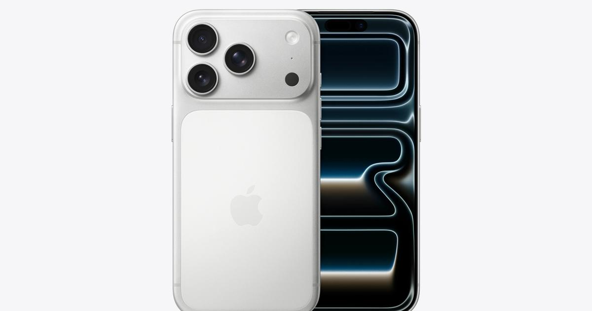
iPhone 18 Proの値上げは最大5万円？ 最新の予想が残酷すぎた | ギズモード・ジャパン
ドイツの極秘飛行船で爬虫類人の軍勢に立ち向かうレトロ風2Dシューター『The Last Zeppelin』デモ版公開！
ゲームプレイではシンプルな操作性や徐々に高まる難度、そして純粋なアーケードアクションが楽しめるとのこと。
https://
gamespark.jp/article/2026/0
8/05/170218.html?utm_source=twitter&utm_medium=social&utm_content=tweet
…
https://
x.com/innopede/statu
s/2084534226288816377/video/1
…


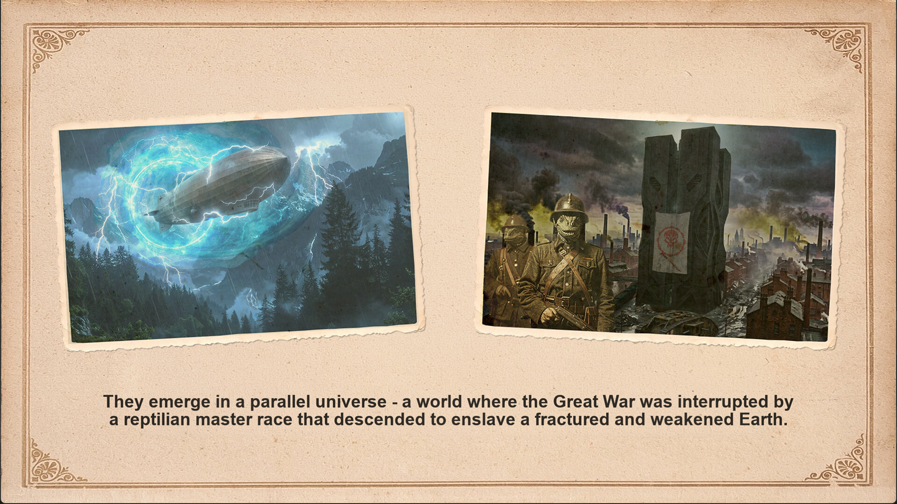
東野圭吾さん新刊「永遠の記憶」発売 「ガリレオ」シリーズ
https://
nikkei.com/article/DGXZQO
UD04BK20U6A800C2000000/?n_cid=SNSTW005&n_tw=1785880473
…
新刊はシリーズ11作目の単行本で「最後の謎」がうたわれています。
東京都新宿区の紀伊国屋書店新宿本店では午前0時の販売開始に合わせてカウントダウンが行われました。

東野圭吾さん新刊「永遠の記憶」発売 「ガリレオ」シリーズ最新作
［インタビュー］「知能が人間だけのものでなくなっていくほど，人間であることは重要になる」―――EVE Onlineを作った男が見る，AIと人間と7つの大罪，そして20年後の世界
https://
4gamer.net/s/G086893.2607
28046
…
CEOヒルマー氏によると「EVEは，あらゆるゲームの“ラスボス”になる」そうです

ドイツの極秘飛行船で爬虫類人の軍勢に立ち向かうレトロ風2Dシューター『The Last Zeppelin』デモ版公開！
ゲームプレイではシンプルな操作性や徐々に高まる難度、そして純粋なアーケードアクションが楽しめるとのこと。
https://
gamespark.jp/article/2026/0
8/05/170218.html?utm_source=twitter&utm_medium=social&utm_content=tweet
…
https://
x.com/innopede/statu
s/2084534226288816377/video/1
…


本格的にグッズ展開するって感じなんかね
ふねかもんって前からいたよな？と思ったらやっぱり前からいたわ

ふ か さ く
@lavender_5108
新日本海フェリーマスコット「ふねかもん」、検索しても全く出てこないのでプロフィール置いときます
佐々木俊尚＠「フラット登山 日本を歩く旅60」発売3週間で増刷決定！さんがリポスト
#cozy1242

ニッポン放送 飯田浩司のOK! Cozy up!
@cozy1242
放送中！ #cozy1242
今朝のコメンテーター
佐々木俊尚
@sasakitoshinao
このあと
「ニュース7時またぎ」
▼熊本地震１週間 ＴＳＭＣ熊本第１工場、通
常の生産体制に復帰
▼ことしの防衛白書 「新しい戦い方」に対応
radiko で聞けます
https://
radiko.jp/#!/live/LF
[FT]中国の「賢い」補助金政策 米欧は産業育成より保護
[FT]中国の「賢い」補助金政策 米欧は産業育成より保護
未発売となった「幻のメガドライブ版 テトリス」を、「現代向けテトリス」にアップデートするハックロムが登場!!
こちらのハックロム用パッチを適用することで、ボタンによる高速落下やホールド機能、7-Bag方式、ハイスコア保存機能など、様々な機能が追加されるンだッッ!!
https://
sega.jp/mdmini/soft/te
tris.html
…
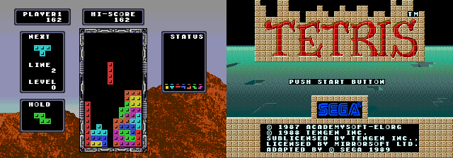
長岡の花火、時間をあわせて新幹線に乗れば車内から見える？
OpenAI、Appleの提訴に全面反論――「営業秘密は持っていないし、欲しくもない」
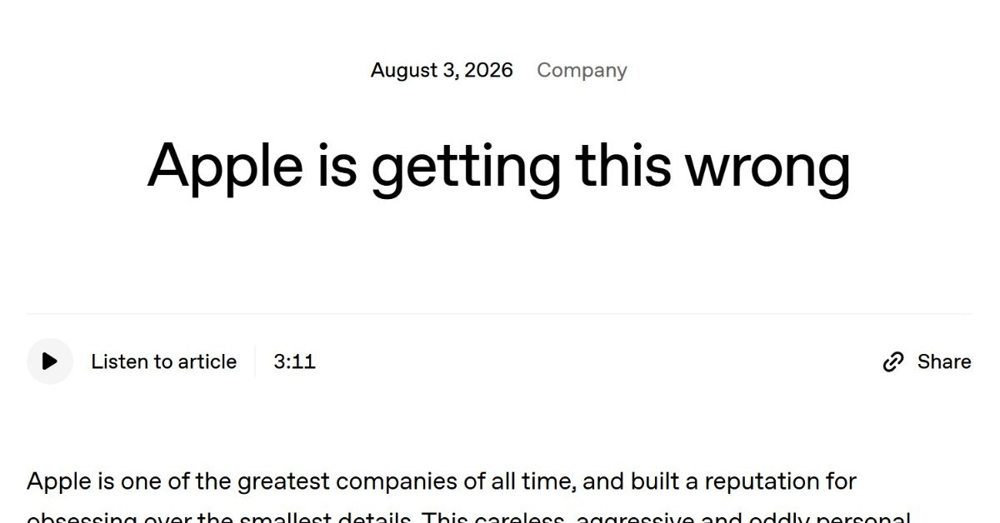
OpenAI、Appleの提訴に全面反論――「営業秘密は持っていないし、欲しくもない」
MiniMax-H3の公式APIで768Pの動画生成すると1秒当たり12.8円。8秒尺で102円。一方でRTX4090で1280x736の8秒尺の動画を生成すると10分で生成できるらしい。（SageAttention+Sol_attn+EasyCacheのフルコンボ時）RunpodのRTX4090レンタル価格が1時間118円だとして1本生成あたりのコストは19.7円。恐ろしい
うみゆき@AI研究
@umiyuki_ai
グラボが無いとかPCが無いからMiniMax-H3で遊べない～とかって人、グラボ買うよりRunpodでRTX5090を1時間160円で借りて生成する方が安そう。部屋もクソ暑くならない。15秒尺動画生成に10分かかるとして1時間で6本。1本あたり27円くらいか。多分APIより安いでしょう。 x.com/Y3yXiKJKrn8lDh…
中高年男性のマウンティング行為はよく話題になりますが、相手に何でも同調を求めてくる人もけっこう面倒くさいという話。Voicyで語っています。↓

マウンティングも同調圧力も面倒くさい | 佐々木俊尚「毎朝の思考」/ Voicy - 音声プラットフォーム

マウンティングも同調圧力も面倒くさい | 佐々木俊尚「毎朝の思考」/ Voicy - 音声プラットフォーム
積み残したと騒ぎになってたが、この人数だったのか…。
新潟日報ニュース
@niigata_nippo
［長岡花火2026］最終新幹線に124人乗り切れず、翌朝までアオーレに 始発で東京方面へ
https://
niigata-nippo.co.jp/articles/-/881
117?utm_source=twitter&utm_medium=social&utm_campaign=twitter_dp
…
タンパク質の摂りすぎで「老化が加速」する可能性、運動不足の人は今すぐ見直しを 研究 | Forbes JAPAN 公式サイト（フォーブス ジャパン）
タンパク質の摂りすぎで「老化が加速」する可能性、運動不足の人は今すぐ見直しを 研究 | Forbes JAPAN 公式サイト（フォーブス ジャパン）
たいして運動もしていないのにプロテインとか高タンパク食品をとりすぎると、逆に身体に悪いという研究結果。「大半の人は比較的運動不足であるため、実際には必要以上のタンパク質を摂取している可能性が高く、それが健康に悪影響を及ぼしている可能性がある」↓

『ファイアーエムブレム 万紫千紅』は“マウス操作”に対応！ボタン操作とシームレスに切り替えながら直感的に遊べるように
https://
gamespark.jp/article/2026/0
8/05/170217.html?utm_source=twitter&utm_medium=social&utm_content=tweet
…
Joy-Con 2を使用したマウス操作に対応します。

湘南ペンギンさんがリポスト
【ニュース】新日本海フェリーと東京九州フェリー、新たな公式キャラクター「ふねかもん」デビュー 船内案内・広報物・イベント・SNSなどで登場へ

新日本海フェリーと東京九州フェリー、新たな公式キャラクター「ふねかもん」デビュー 船内案内・広報物・イベント・SNSなどで登場へ
SNS時代、さらされる球児たち 動画付きで中傷投稿拡散

高校野球:SNS時代、さらされる球児たち 動画付きで中傷投稿拡散
世界で最も高価なスパイス「サフラン」が数千年たっても安くならない理由

パエリアやブイヤベースを鮮やかに彩ったり独特の風味を加えたりするのに使われるサフランは、「赤い金」とも呼ばれる世界で最も高価なスパイスです。突然変異で生まれた「種子を作れない花」を人間が数千年にわたって増やしてきたというサフランクロッカスの特異な生態と、高価格が続く理由について、教育系YouTubeチャンネルのTED-Edがアニメーションで解説しています。
gigazine.net
スパイスのサフランはなぜあんなに高価なのか。古代からクローンで球根を分けられてきたからとか。「サフランクロッカスはすべて種子を作れないクローンであるため品種改良が進まず、数千年が経過しても手作業に頼る生産方法と1輪当たりの柱頭が少ない性質がほとんど変わっていません」↓

吉開菜央監督『まさゆめ』オフィシャルサイト
https://
buff.ly/hyyHf3q
女性の繊細な身体と心に寄り添う……というような類の映画かと思ってこの映画「まさゆめ」を見始めたんだけど、とても良い意味で予想を完全に裏切られた。これはまさに「禅」の映画であり、禅によって人が身体性を取り戻していくそのプロセスをドキュメンタリー映画として昇華させている。観る人を選ぶ
「壁打ち」という言い方はもはや古い。AIと人間が対等に議論し、創発する未来がもう現実になってきています。有料メルマガで論考。↓

AIが「壁打ち」の段階はすでに終わり、新たな関係が始まる〜〜人間社会とAIが融合していく未来を考える（17） 佐々木俊尚の未来地図レポート Vol.920｜佐々木俊尚

AIが「壁打ち」の段階はすでに終わり、新たな関係が始まる〜〜人間社会とAIが融合していく未来を考える（17） 佐々木俊尚の未来地図レポート Vol.920｜佐々木俊尚
ゼレンスキー大統領が対日関係について「かなり期待していたが、今のところ成果はそれほど大きくない」とコメント。「具体的に求める成果について明かさなかったが、「日本で）著しい政治的変化があったと指摘。日本の武器輸出解禁を念頭に置いている可能性」と時事通信。ここは一気に軍事協力へと進む

ゼレンスキー氏、対日関係「期待に及ばず」 武器供与希望か：時事ドットコム

ゼレンスキー氏、対日関係「期待に及ばず」 武器供与希望か：時事ドットコム
【#実写 #雑談 #競泳水着 ７０人に挨拶したい【#ピオニーちゃんねる #vtuber / #個人Vtuber 】
https://
youtube.com/live/ed1mrfLP7
b4?si=KGIpBF3pITYdi7x-
…
@YouTube
より

**❁｡ﾟ *❁｡ﾟ❀｡*。❀ﾟ*❁ﾟ*❁｡ﾟ。*❀｡ﾟ。◆ドネル◆https://doneru.jp/pionihuausagi...
youtube.com
日本政治の変化を英エコノミスト誌が分析。若者の高市首相支持を推し活政治とか国内では揶揄されているが、「左派の軍事費増強への反対や、平和憲法維持への固執は、現実離れしていると思われている」「日本の若者の政治参加を単なる「推し活」として片付けてしまうのは、問題の本質を見誤っているのか

英誌が報じる「日本政治の推し活化」─選挙を左右するのはSNSのクリック数 | 「ネット選挙」に長けた政治家の台頭

英誌が報じる「日本政治の推し活化」─選挙を左右するのはSNSのクリック数 | 「ネット選挙」に長けた政治家の台頭
反ワクチン情報を信じる人の60％以上はワクチンを接種──東大と東北大が3万人を調査
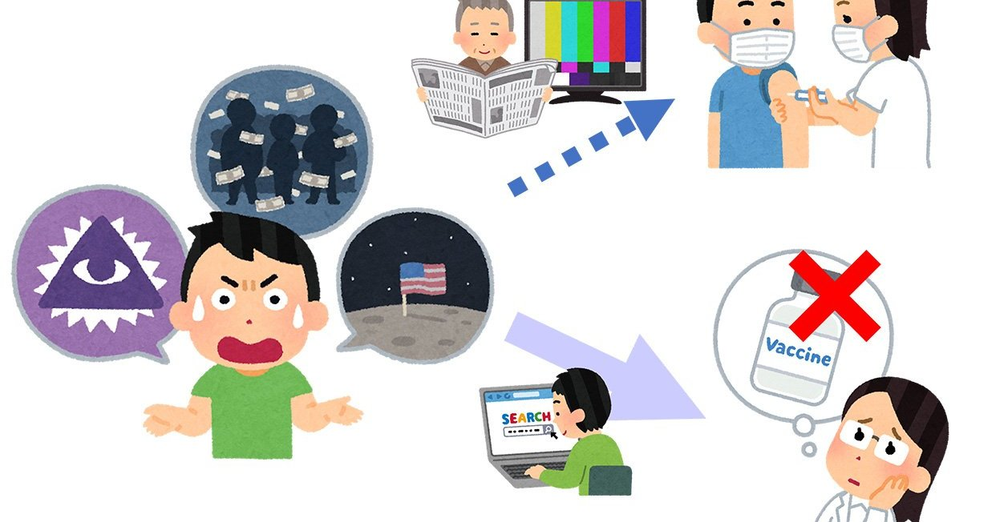
反ワクチン情報を信じる人の60％以上はワクチンを接種──東大と東北大が3万人を調査
あと本棚が爆発しているというのもあります
全然映えない「歩き旅」の持ち物まとめ｜女性長距離ウォーカー・4泊5日｜aya@徒歩愛好家

全然映えない「歩き旅」の持ち物まとめ｜女性長距離ウォーカー・4泊5日｜aya@徒歩愛好家
登山ではない「歩く旅」で、極限にまで考え抜かれたミニマルな装備リスト。よく考えられてて感心しました。個人的にはヘッドランプはUSB-C充電式が良いとは思います。↓

あたまのいい人は電子書籍で勉強できるのかもしれないけど、わたしには無理っすね…
山口祐加さんとのポッドキャスト。今週は「代用食材」の話。培養肉とか、なんちゃってウナギの蒲焼きとか。↓

食べるは続くよどこまでも #27 食材、何で代用する？かさましする？
https://
buff.ly/tc0EPQ1
https://
buff.ly/OTFNYWp

Podcast Episode · 食べるは続くよどこまでも · August 3 · 17m
podcasts.apple.com
【悲報】自民党「消費税減税はデメリットたくさんあるけど、もう言っちゃったから」「やらないと支持率もたないから」「地方選にも勝てないから」「今なら高市首相のせいにできるし」 #政治

【悲報】自民党「消費税減税はデメリットたくさんあるけど、もう言っちゃったから」「やらないと支持率もたないから」「地方選にも勝てないから」「今なら高市首相のせいにできるし」 - オレ的ゲーム速報@刃の記事ページ
jin115.com
小説→電子書籍
漫画→（基本的に）電子書籍
専門書→そもそも電子書籍がないので紙
テキスト/参考書→紙（これと同じ理由）
拘束され自分の手を刺し続けるローグライトホラー『500 FINGER FILLET』デモ版配信！血液や指を失わず狂気のゲームを生き延びよう
https://
gamespark.jp/article/2026/0
8/05/170216.html?utm_source=twitter&utm_medium=social&utm_content=tweet
…
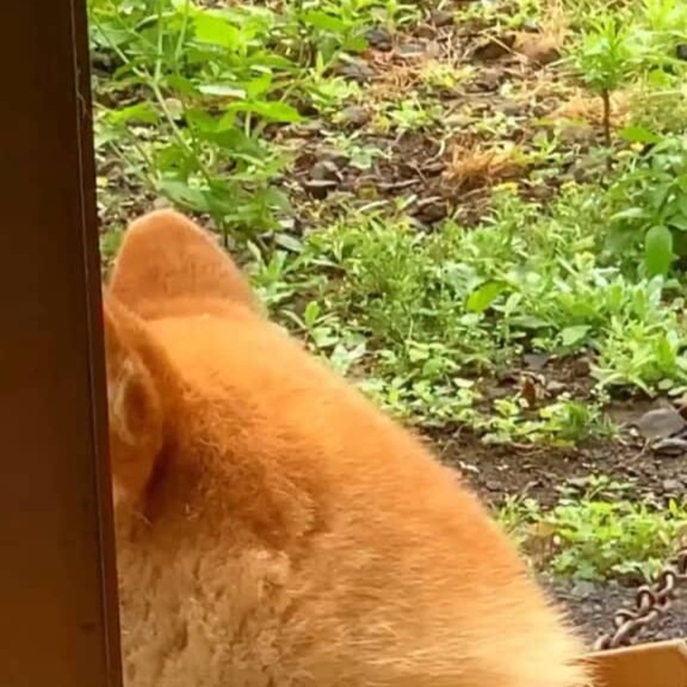
「うちの柴犬が“ふたえ”すぎるんです…」まさかの姿が84万再生「笑っちゃったじゃん！」「声出たwwww」（1/3） | 犬 ねとらぼ
おめめパッチリ
「うちの柴犬が“ふたえ”すぎるんです…」まさかの姿が84万再生「笑っちゃったじゃん！」「声出たwwww」
（記事URLはリプから）
おはようございます。
リヒテンシュタインにサイバー攻撃 法人データ約3万1000件流出
https://
nikkei.com/article/DGXZQO
GR046390U6A800C2000000/?n_cid=SNSTW005&n_tw=1785840320
…
同国は租税回避地（タックスヘイブン）として知られ、多くの富裕層が法人登録しています。機密データの流出で、資産管理地としての信用に傷がつくとの指摘も出ています。
リヒテンシュタインにサイバー攻撃 法人データ3万1000件流出
湘南ペンギンさんがリポスト

てかご丁寧にステータスカード送ってくれたけど設定してたっけな
青組ダイヤモンド5年→赤組ダイヤモンド4年ですが、SFC/JGCとbioに書くのはもはや恥ずかしいことです（みんな持ってる
JALのダイヤモンドカードが届いたんよん

【日経特報】ベッセント氏、協調介入｢アジア通貨へ波及を警戒｣ 単独インタビュー
ベッセント氏、協調介入｢アジア通貨へ波及を警戒｣ 単独インタビュー
自衛隊指揮、アメリカ製AI複数導入を検討 日米で統合運用
https://
nikkei.com/article/DGXZQO
UA23B870T20C26A7000000/?n_cid=SNSTW005&n_tw=1785836949
…
AIを束ねる「司令塔」にはサカナAIのモデルが浮上。外国企業に防衛の要の情報を握られることへの懸念もあり、政府は将来的な国産AIへの置き換え余地も残します。

自衛隊指揮に米国AI複数導入、日米で統合運用 中枢は日系サカナAI案
好決算でも買われぬ銘柄続出 AI関連株、期待先行の重荷
好決算でも買われぬ銘柄続出 AI関連株、期待先行の重荷
NY円157円台で膠着 市場で円買い警戒、介入制限ルール巡り心理戦
NY円157円台で膠着 市場で円買い警戒、介入制限ルール巡り心理戦
大人気野球漫画『BUNGO―ブンゴ―』が「1～10巻まで各巻100円＆全巻39％オフ」の激安セール開催中！！このチャンスを見逃すな！！ #漫画・アニメ等

大人気野球漫画『BUNGO—ブンゴ—』が「1〜10巻まで各巻100円＆全巻39％オフ」の激安セール開催中！！このチャンスを見逃すな！！ - オレ的ゲーム速報@刃の記事ページ
jin115.com
銀行、預金獲得へ金利競争 みずほは大口向け定期1.5%に
https://
nikkei.com/article/DGXZQO
UB271AA0X20C26A7000000/?n_cid=SNSTW005&n_tw=1785835003
…
「金利ある世界」で収益力を回復した融資を伸ばすため、預金集めが最優先課題に。住宅高騰を背景に、マンションなどの売却益でまとまった資金を得た顧客に照準を絞っています。

銀行預金に金利競争 みずほ大口向け3倍1.5%、不動産マネーに照準
【期間限定半額】最大4人協力PvEシューター『Rogue Point』正式発売―新マップ・武器・ボス追加に加えてSteamワークショップ対応でプレイヤー作成ステージも遊べるように
https://
gamespark.jp/article/2026/0
8/05/170215.html?utm_source=twitter&utm_medium=social&utm_content=tweet
…
正式化記念の半額セールは8月19日まで！
@PlayRoguePoint
https://
x.com/PlayRoguePoint
/status/2084686426533163468/video/1
…


ナムコの大名作『ギャラクシアン』が、まさかの「メガドライブ」に勝手移植!!
本作は「アーケード版」を忠実に再現しただけではなく、新たに「ハイスコアの保存」や「Bボタンでの連射」、「ポーズ機能の追加」などが追加されている
デモ版とは言えこの完成度は凄いぞッッ!!
https://
namalgo.itch.io/galaxian
【悲報】「メモリ不足は〇〇年まで解消しない」とメモリ大手3社の見解、一致 #PCゲーム
【悲報】「メモリ不足は〇〇年まで解消しない」とメモリ大手3社の見解、一致 - オレ的ゲーム速報@刃の記事ページ
jin115.com
【Game Pass】新作『Gears of War: E-Day』ベータ先行アクセス権も利用可能！『Grounded 2』や『BALL x PIT』等Premium開放目白押し―2026年8月中旬までのラインナップ
https://
gamespark.jp/article/2026/0
8/05/170214.html?utm_source=twitter&utm_medium=social&utm_content=tweet
…
『ポケモン』のゲームフリーク最新作『Beast of Reincarnation』も対応配信中。
スペースX初の決算発表、4〜6月9割増収 AI投資先行で850億円赤字

スペースX初の決算発表、4〜6月9割増収 AI投資先行で850億円赤字
小池都政10年、｢子育て第一｣がつかむブルーオーシャン 力業の出生増

小池都政10年、｢子育て第一｣がつかむブルーオーシャン 力業の出生増
米ファンド融資の拡大一服、大手5社調達２年ぶり減少 リターン悪化

米ファンド融資の拡大一服、大手5社調達2年ぶり減少 リターン悪化
なんせ「新作アニメーション」の音沙汰がないなかで第3弾を出そうというのだから…笑
冬コミの台割を作り始めてる（既に原稿には着手済）んだけど、これまた頭を悩ませている
米S&P500が2カ月ぶり最高値、ダウ907ドル高 好業績と中東不安後退
米S&P500が2カ月ぶり最高値、ダウ907ドル高 好業績と中東不安後退
トヨタ「ウーブン・シティ」住民を公募 まず静岡県民25世帯から
https://
nikkei.com/article/DGXZQO
FD049VX0U6A800C2000000/?n_cid=SNSTW005&n_tw=1785875334
…
入居期間は2027年3月から29年2月末までの2年間を予定します。
入居者にはウーブン・シティで行われている自動運転などの実証に参加してもらい、フィードバックを街づくりにいかしていきます。

トヨタ「ウーブン・シティ」住民を公募 まず静岡県民25世帯から
むくり。
要素は親和性ありつつもテイストは真逆に近い作品同士でコラボあるんだ・・・と思ってたけど、１弾・２弾とも当たり障りのない無難な範囲で話す動画になっていて、繊細なラインを通してる感がある
もともとメタ語りが避けられない中でさらにメタ語りになるから整合性合わせるの難しそう・・・

『超かぐや姫！』公式
@Cho_KaguyaHime
─── 𓂂 𐩑 ✦ ─── ✶ ₊⁺ 𓂂 ───
『超かぐや姫！』×『【推しの子】』
コラボ動画第2弾公開中！
─── ✶ ₊⁺ 𓂂 ─── 𓂂 𐩑 ✦ ───
「みんなを盛り上げるコツとかって
あったりするの？」
「アイドルと言えばライブ！
ライブといえばコーレス！かな！」
韓流コスメ、「TSMC流」で世界2位浮上 水平分業でヒット商品連発

韓流コスメ、「TSMC流」で世界2位浮上 水平分業でヒット商品連発
鐘の音→カネの音で爆笑のあと、涙する
Rootport
@rootport
トークン消費のカネの音、諸行無常の響きあり。SDXLのアーティファクト、盛者必衰の理をあらわす。驕れるアルトマンも久しからず、Fable5の夢の如し。猛きGeminiもついには脱落、ひとえに風の前の塵に同じ。
豪極右の小政党ワンネーション、与党と支持率並ぶ 移民増など追い風
オーストラリア極右の小政党ワンネーション、与党と支持率並ぶ 移民増など追い風
ワールド、AIがデザインした服完売 美意識を言語化「センスない」覆す

ワールド、AIがデザインした服完売 美意識を言語化「センスない」覆す
スペースXのロケット残骸、月に衝突へ 人工物で過去最大級

スペースXのロケット残骸、月に衝突へ 人工物で過去最大級
株高に潜む強さと危うさ 値動き荒い日本株、AI投資の期待と不安
株高に潜む強さと危うさ 値動き荒い日本株、AI投資の期待と不安
ドルに「夏の試練」 介入・雇用統計…よぎる24年の円キャリーショック

ドルに「夏の試練」 介入・雇用統計…よぎる24年の円キャリーショック
押井守監督「実写映画やアニメで『原作通りでよかった』なんて感想は原作の成功体験を追体験したいだけ」「私は原作者に怒られるぐらいのほうがワクワクする」 #漫画・アニメ等

押井守監督「実写映画やアニメで『原作通りでよかった』なんて感想は原作の成功体験を追体験したいだけ」「私は原作者に怒られるぐらいのほうがワクワクする」 - オレ的ゲーム速報@刃の記事ページ
jin115.com
Torishima / INTPさんがリポスト
LLM系やインフラ系はミスると激重請求来るのが怖いよな…（過去にやらかしあり）
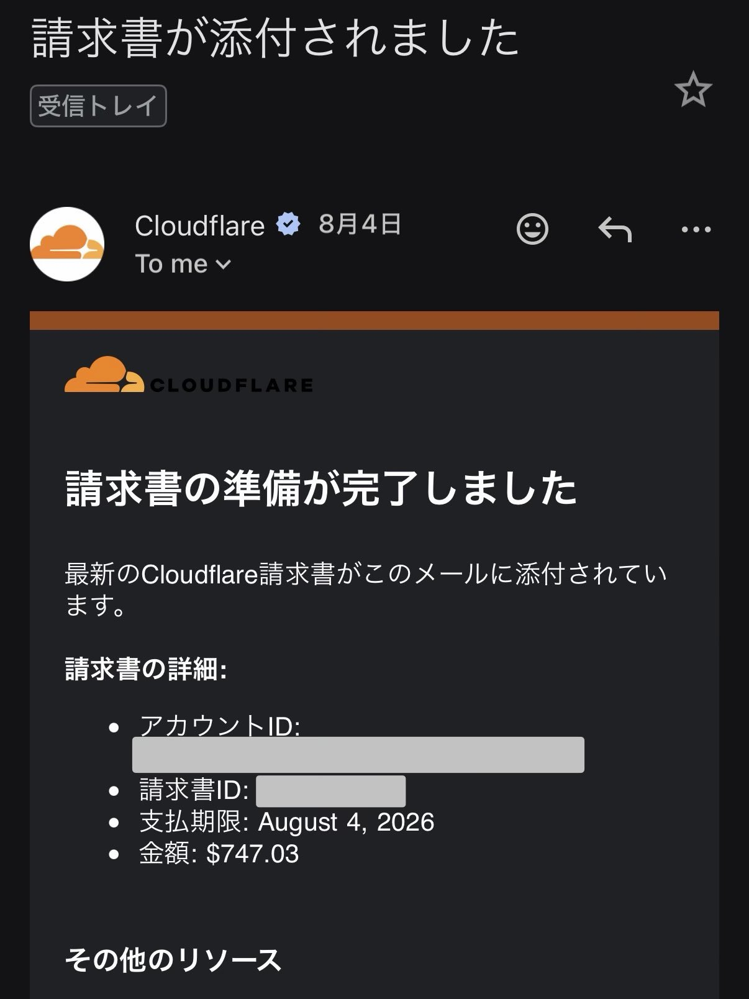
ぬこぬこ / NUKO
@nukonuko
Cloudflare からの請求書つらいって...
こんなに金額が行くとは思っていないよ...サポートセンターに問い合わせたらなんとかならないかな...
どうも Durable Object が原因っぽい？とりあえず止めた
漢字＋ひらがなでも指定すればちゃんと出せる？のはさすがメイドインチャイナというべきか (Seedance 2 でどれくらい出せたっけ？)
Mankyu | AI動画生成
@manaimovie
かわいい！かわいいよ！
#MiniMaxH3 @Hailuo_AI
確かに Sora 2 から1年で Sora 2 レベルの動画生成 AI が手元に動くようになった、と考えると革命的だな・・・
雑プロンプトでいい感じに解釈するのは API だと H3-Context-IR て中間表現に変換する LLM が担ってるんやろか、今のところ OSS になってないけどそのうち誰かつくりそう

金のニワトリ
@gosrum
MiniMax-H3、試しに sora2 と同じ入力で動画を生成してみた
これ見ると sora2 のように雑プロンプトでも良い感じに解釈して動画を作るところまではいけてないけど、解像度や動画の長さも指定できるしプロンプト工夫すれば sora2 以上のクオリティも出せるはず x.com/gosrum/status/…
Torishima / INTPさんがリポスト
更新：ダウンしました
これを試してみて N$FW：
Stable Diffusion Tutorials
@SD_Tutorial
MiniMax H3 ナughty Times LoRA
ヒント -
LoRAローダーで値0.5を使用してモデルで実行してください
(minimax_h3_fl2va_pruned_int8_convrot.safetensors)
https://
huggingface.co/SexGod1979/Nau
ghtyTimes_MiniMax-H3
…
少なくともSora2くらいの性能はあるだろ
MiniMax H3、やっぱ革命だよな
オープンウェイトなるのマジ？？ FLUX ってまだ生きてたのか
Black Forest Labs
@bfl_ai
FLUX 3 Video が登場しました。
真剣、楽しい、創造的、現実的、映画的、どんなスタイルにも対応します。
ネイティブ音声、テキストからビデオ、複数フレームの画像からビデオ、ビデオの続き、複数言語の対話。
ドラフトモード付きで、コストの何分の一かでアイデアを素早く探求できます。
米マクドナルド4〜6月、米国の成長鈍化 事業トップを交代

米マクドナルド4〜6月、米国の成長鈍化 事業トップを交代
うみゆき@AI研究さんがリポスト
> 現行価格比で約120％～140％程度の価格改定
ヤバ過ぎて草も枯れる
買えるうちに買っておこうグラフィックボード
貯金しても勝手に値段がバンバン上がって永遠に追いつかないループになってしまう
参考程度に、北米B&HでIn Stock状態の5070Tiは1150～1300ドルです（1100ドル以下は完売済み）

188号
@momomo_us
【GIGABYTE】VGA値上げ・ご注文残キャンセルについて
http://
cfd-biz.com/news_73.php
> メーカー価格改定に伴い、2026年8月1日受注分より価格改定（値上げ）を実施させていただくこととなりました。...現行価格比で約120％～140％程度の価格改定となる見込みです。
欧州銀行の4〜6月、純利益2割増 AI特需で恩恵も米銀の背中遠く
欧州銀行の4〜6月、純利益2割増 AI特需で恩恵も米銀の背中遠く
Torishima / INTPさんがリポスト
FLUX.3 来た～ 自称だけど最高性能らしい
価格帯的には Minimax-H3 と同じぐらい？
（ならモデルサイズも同じぐらいなのかな？）
オープンな dev 版のモデル配布は近日中らしいよ
FLUX 3 Video, Part 1: Generation
ポーランド最大野党が分裂、穏健派40議員が新党設立へ 右旋回に反発

ポーランド最大野党が分裂、穏健派40議員が新党設立へ 右旋回に反発
『昼メシの流儀』野原ひろしのグッズ、印刷ミスでマジでキモい見た目になるｗｗｗｗｗｗ #雑談・その他の話
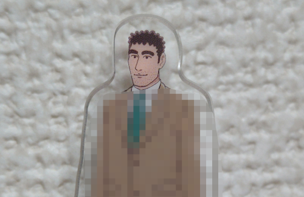
『昼メシの流儀』野原ひろしのグッズ、印刷ミスでマジでキモい見た目になるｗｗｗｗｗｗ - オレ的ゲーム速報@刃の記事ページ
jin115.com
ダイハツ・スズキ「軽HVが現実解」 想定より安いBYDラッコに警戒
ダイハツ・スズキ「軽HVが現実解」 想定より安いBYDラッコに警戒
マツダ、新型「CX-5」米国で苦戦 4~6月期は黒字転換も

マツダ、新型「CX-5」米国で苦戦 4~6月期は黒字転換も
Torishima / INTPさんがリポスト
FLUX 3 Video が登場しました。
真剣、楽しい、創造的、現実的、映画的、どんなスタイルにも対応します。
ネイティブ音声、テキストからビデオ、複数フレームの画像からビデオ、ビデオの続き、複数言語の対話。
ドラフトモード付きで、コストの何分の一かでアイデアを素早く探求できます。
Wordle 1,873 3/6
『アズレン』フェスのフードメニューが「おにぎり2つで1000円」の超強気価格に→その理由がマジでヤバいｗｗｗｗｗｗ #雑談・その他の話
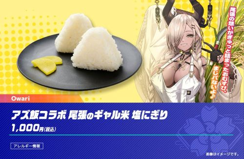
『アズレン』フェスのフードメニューが「おにぎり2つで1000円」の超強気価格に→その理由がマジでヤバいｗｗｗｗｗｗ - オレ的ゲーム速報@刃の記事ページ
jin115.com
Torishima / INTPさんがリポスト
MiniMax 20分待つだけでこれ出てくるならSeedance引退できるかもだな

粉飾決算のエア・ウォーター、不正に手を染めた結果「特別調査費用242億円・監査報酬51億円・会計監査業務に係る補助者1267人（このうち公認会計士716人）」と高くつく

不適切会計事案で決算延期していたエア・ウォーター、「会計基準の厳格化」の影響金額がだいぶ大きいな… pic.twitter.com/fPnNlPC8Rf— 空き缶 (@akikankeri) July 31, 2026 ※2025年度通期業績決算説明資料※エア・ウォーターの粉飾決算疑惑に関する調査報告書、売上高1兆
kabumatome.doorblog.jp
貝さんさんさんがリポスト
きみ死ぬ5話ありがとうございました！
今回もコンテ(Bパート)担当してました！
お風呂で遊ぶ2人やフランの張り紙など日常を沢山想像して組み込みました！
綺麗に画面にしてくださった皆様に感謝です。
是非見てください！
#きみ死ぬアニメ
TVアニメ「きみが死ぬまで恋をしたい」公式
@anime_kimishinu
TVアニメ「きみが死ぬまで恋をしたい」
第5話をご覧いただいた皆さま、
ありがとうございました
感想は #きみ死ぬアニメ でお寄せください！
スタッフクレジットは
公式サイトにて公開中です。
https://
kimishinu-anime.com/story/
第6話以降もお楽しみに
#きみ死ぬアニメ
ゲー◯リの新作が思ったよりSEKIROで絶望しました。任天堂法務部がフロムソフトをSEKIRO罪で必ず訴え勝利します
劇的にはなりすぎず、終始落ち着いた雰囲気をまとっているのは本作らしさ。そのうえで、次回以降から物語が大きく動き出しそうだ。
手札が多めのビクトリア 第5話
表の世界に触れて、馴染んで、噓を貫き通して。この身に罰が下るその日まで、この幸せを手放さないよう。
幸せの中で綻んだ歪みが、いよいよ彼女の身に襲い掛かる、その予感をさせる第5話。

夜会襲撃犯の犯行動機を知ったビクトリアは、このままでは死罪になるであろうその青年・カールを救い出...
nicovideo.jp
貝さんさんさんがリポスト
きみ死ぬアニメ第5話
ご視聴ありがとうございました
次回もよろしくお願いいたします！
#きみ死ぬアニメ
#きみが死ぬまで恋をしたい
きみが死ぬまで恋をしたい公式
@kimishinu
✲・┈┈┈┈┈┈┈┈┈┈┈┈┈┈ ・✲
TVアニメ『きみが死ぬまで恋をしたい』
5話「終わらない夜」
ご視聴ありがとうございました
✲・┈┈┈┈┈┈┈┈┈┈┈┈┈┈ ・✲
#きみ死ぬアニメ #きみが死ぬまで恋をしたい
ララってずっと海の底の静寂の中に生きていたという環境の影響で大きな音が本能的に苦手な人だと思うので(2話でもヘリやら電車やら通るたびにしんどそうな顔してたよね)、オーブンのアラーム音を前にして若干パニック気味になってしまうのも、ミスの描写としてすごく腑に落ちる あんな音、怖いよなぁ
Torishima / INTPさんがリポスト
Cloudflare からの請求書つらいって...
こんなに金額が行くとは思っていないよ...サポートセンターに問い合わせたらなんとかならないかな...
どうも Durable Object が原因っぽい？とりあえず止めた
Torishima / INTPさんがリポスト
めっちゃ分かります！！この前pro契約してgoal回してたんですが、数時間放置してみたら何も進化してなくてガッカリしました。結局管理してあげないといけない…
Torishima / INTPさんがリポスト
codexにdeepseek追加するとこんな感じでスマホからも使えていいんだけど、普通にやるとopencodexとか使ってタスクリストとかバグるから以下のプロンプトがおすすめ
OpenCodex を参考に、Codex がopencode等のAPIを Desktop のネイティブモデルメニューに統合する：マージ後の model_catalog_json


toori
@Toorimog
gptが最後の引き継ぎ仕事を開始しました
ひろゆきさん、突然イキりだしてしまう #酷い話・事件

ひろゆきさん、突然イキりだしてしまう - オレ的ゲーム速報@刃の記事ページ
jin115.com
Torishima / INTPさんがリポスト
週あたりのところ、なんか見るとみんな似たような状況。この8/12,13みたいなので、あきらめて早めに消費したので残り１回です＠＠
貝さんさんさんがリポスト
#きみ死ぬアニメ 5話
"何事も焦らず時間をかけてゆっくりやるのよ2人で"
ミミのシーナの気持ちを掘り下げるお話であり,そんな彼女達の日常,気持ちを深化させたり,フレーム内フレームや2人を強調するLOが相俟いフランの台詞が際立つ。
故に最後の望みを言うシーンの空気感かとても良かった
#kimishinu

貝さんさんさんがリポスト
この作風で生活感がここまで描かれるなんて。
『ポケモン』がNYのバッグブランド「VASIC」とコラボ！大人向けに洗練されたピカチュウやイーブイに注目
https://
gamespark.jp/article/2026/0
8/05/170213.html?utm_source=twitter&utm_medium=social&utm_content=tweet
…

貝さんさんさんがリポスト
きみが死ぬまで恋をしたい#05
ありがとうございました
#きみ死ぬアニメ

貝さんさんさんがリポスト
【#きみ死ぬ／一迅社宣伝】
一迅社CM
「コミック百合姫」の作品を
シーナ&ミミに紹介してもらいます
今回は…『今日はカノジョがいないから』
✦出演
シーナ：#高橋李依 さん
ミミ ：#日高里菜 さん
次週もお楽しみに
貝さんさんさんがリポスト
/／
TVアニメ「きみが死ぬまで恋をしたい」
スタッフセレクト原画を公開です
\＼
近づいていく、ふたりの距離。
心も温まるお風呂時間でした
第5話「終わらない夜」
今週もご視聴いただき
ありがとうございました
#きみ死ぬアニメ
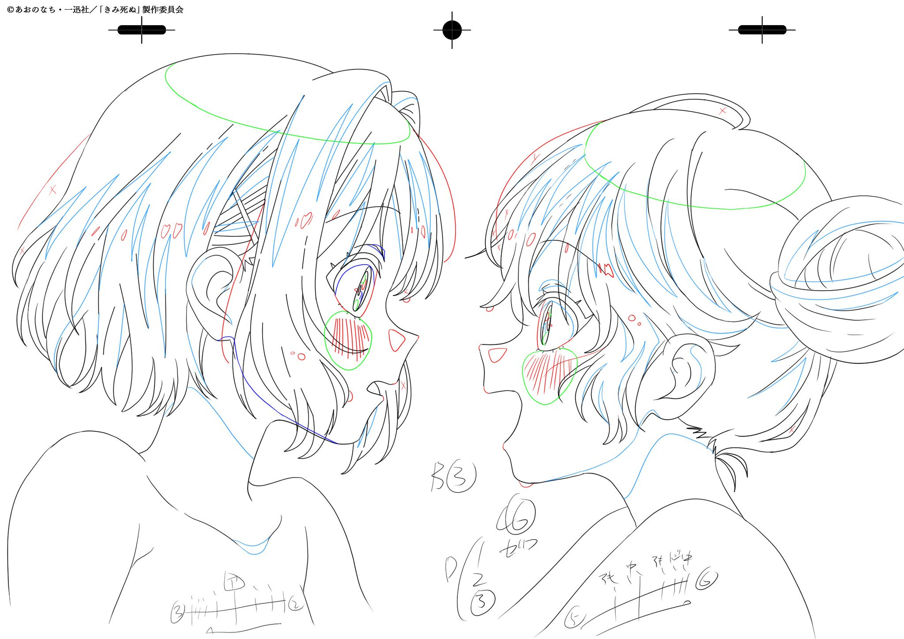
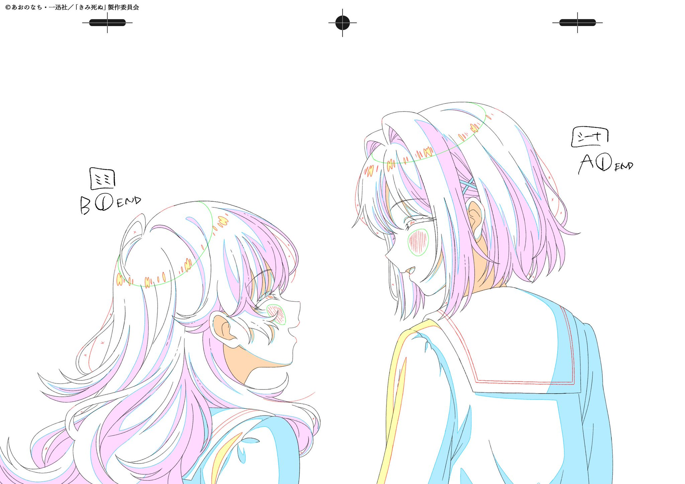
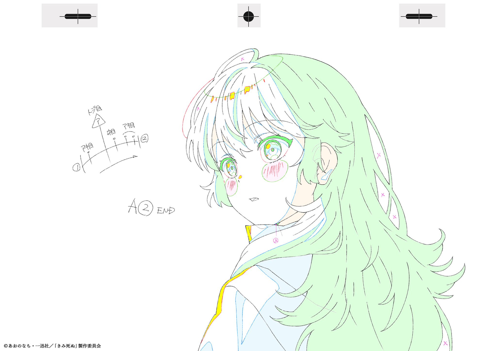
貝さんさんさんがリポスト
この、片足を棺桶に突っ込んだ世界観のまま、何も解決の糸口も無いまま通すつもりか。ある意味リアルで哀しい。地に足着いた演出が冴え渡っててますます切ない。秘密兵器ラジャー。
きみ死ぬ #5、若干ヒヤヒヤして見てたところがあったけど戦争へのシニカルな描写がちゃんと入ってて良かった（そういうシチュエーションを作りたいありきアニメすぎる、という点から現実に少し着地させていて）
あの辺りの言い回しは花田先生の思想な気もするけどどこまで原作ママなんだろう
貝さんさんさんがリポスト
今日は5話でした！！
コンテは前半を駒田さん、後半を榎本くんが！
演出は初演出の高橋くん！
返礼の日と温泉回で色んな可愛いミミが見れました！
ありがとうございます！！
ゲマズはアクスタ付きの在庫が復活してたよ！（多分特典ｓｓもついてくる…と思う）
夜の…しご…おわ…こんな仮眠では役に立たなかった…起きた時はスッキリしてたのに…
いるか@心が酒びたっているんだ
@kaiyouhonyuruid
昨日はマジで無駄に夜更かししてしまったので、これから30分ほど仮眠しまふ
Torishima / INTPさんがリポスト
Prox20プランポワイ、もう3%しかない。復活は8月8日。絶望だ。
Torishima / INTP
@izutorishima
GPT-5.6 Sol の使用量、Tibo がリセットしてくれないと１週間全然持たない気がする・・・なんで？
予告なのに壮大なネタバレ！？「ファイアーエムブレム 万紫千紅 Direct」で明かされた物語にファンも震え上がる
https://
gamespark.jp/article/2026/0
8/05/170212.html?utm_source=twitter&utm_medium=social&utm_content=tweet
…
東京大学教授 大学院入試関連ページに『六四天安門』と記載し懲戒処分される
東京大学教授 大学院入試関連ページに『六四天安門』と記載し懲戒処分される : ハムスター速報
日本語が下手→読んでもらうための文章じゃないから知ったこっちゃない
貝さんさんさんがリポスト
#さよならララ

キャタピラー4〜6月6割増益、AI投資で受注残は9割増加 株価12％高
キャタピラー4〜6月6割増益、AI投資で受注残は9割増加 株価12%高
Torishima / INTPさんがリポスト
ちょいまだ試してないんですが、768p15秒が色々設定いじれば5090で15分は切りそうです！480p15秒が3分でいけたので
Runway生成時間長めですし、開発の合間にこまめに動画生成しまくるとか、Claude in Chromeあたり使ってClaudeに/loopでぼけほげげふんげふん…
きみが死ぬまで恋をしたい 第5話
「シーナはどうしたいの？」。ミミと一緒に過ごしていく中で、自身の気持ちが定まらないシーナ。理不尽な世界で、それでも今この時、彼女が願える想いは......。
今後に関わるキャラも次々登場する第5話。
シーナはミミといろんな場所を巡りながら、彼女が楽しいと思える日々を増やしたいと思いはじめる。そこ...
nicovideo.jp
アバンシーンを入れることでほかの話数と繋げてシーナの気持ちを最後の”解”に繋げていく、物語の再構成が上手いなと感じる。それにしても、どこまで映像化していくのかも楽しみなところ。今のペースだと7巻まではいかないか？
1話につき見終わってから15分くらいムカついたり喜んだりする時間が必要なんだけど、とりあえずアニメの「処理」をするためにはいかんせん時間がなく、下書きにとりあえず放り込んでいる
新作映画「スパイダーマン：ブランド・ニュー・デイ」公開からPC版『Marvel’s Spider-Man』シリーズ同接プレイヤー数が増加
https://
gamespark.jp/article/2026/0
8/05/170211.html?utm_source=twitter&utm_medium=social&utm_content=tweet
…


眉毛しっかり可愛い美人で素敵 バランスが凄い…
茉里が全日本UJ覇者♡♡♡近江の稲妻♡♡♡世代最強ボクサー様♡♡♡♡なのにそれはそれとしてお小遣い額UPしてほしい理由がAirPods Proの新しいモデル欲しいとかいうガキすぎる理由だったのもマジで可愛すぎた。こ……高校生じゃねーーか！！！！(高校生だよ)
貝さんさんさんがリポスト
手札、ほんとに手札多くてよく出来てるなあ。安易なスリルの作り方をしないあたりも奥深い。大人だ。
輿水畏子さんがリポスト
僕-僕、ただ彼女の首のタトゥーを現代AUで欲しかっただけなのに…
#ALNST #SUA
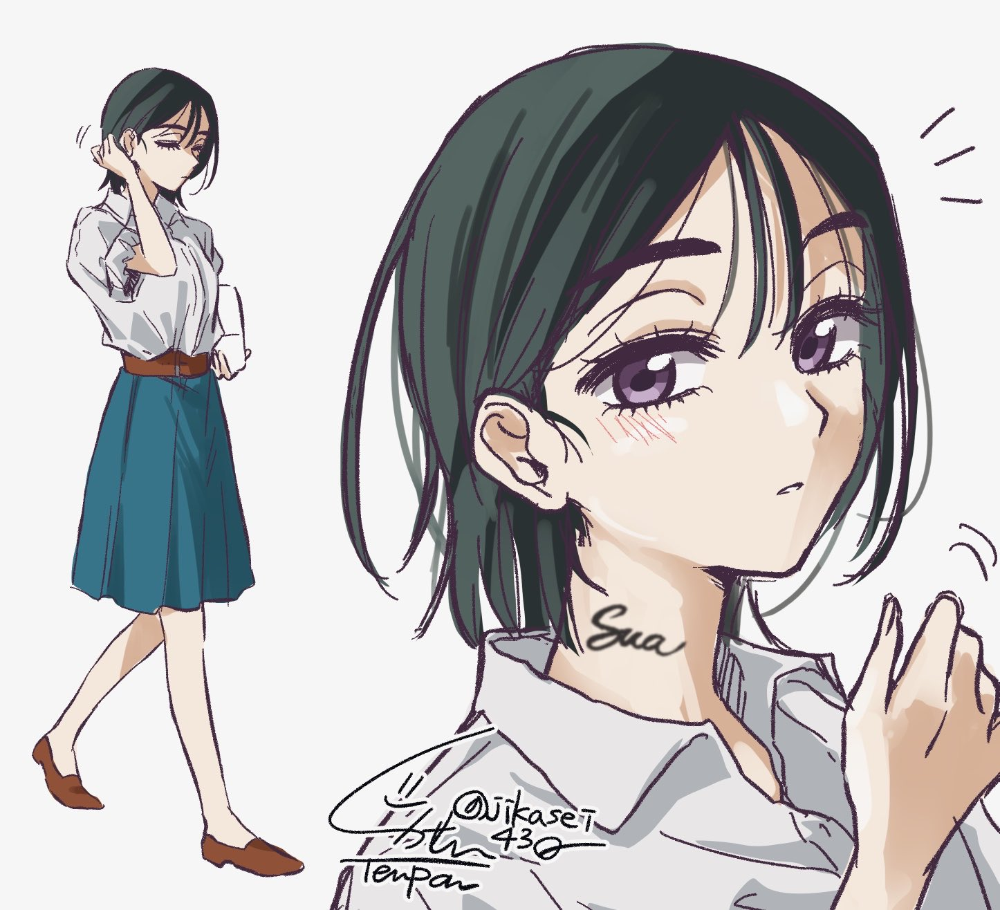
感謝！！！！
やっぱトレードオフなんだなあ・・・
3Dプリビズ作れる人が AI レンダリングする用途とかプロユース向けを考えると動画の参照追従性は必要になるし、手軽に、と言うよりは予めガチで作り込んだものをリッチにするみたいな方向を志向しているんだろうか
松丸 彗吾(keigo matsumaru)
@k_matsumaru
これほんと皮肉だよな
Seedance 2.5はリファレンスに忠実になり最大30個くらいまではほぼ正確に参照して出力できるけど、
あまりにも参照精度が上がりすぎて渡しているリファレンスに引っ張られすぎて、出力の自由度が低下してしまうって話 x.com/nbykos/status/…
さよララ5話でララさんが初日から失敗しまくったり皿割りまくったり…といった『異国のプリンセスがバイトをする回』というフォーマットから通常想起される展開をやらなかったの、本当に優しいアニメに思えて良かった…。世間知らずではあるが一生懸命な人の行動が茶化されずに描かれるだけで、嬉しい
東京都足立区ソマリランド二丁目
三井住友海上、米国で公共工事の「保証事業」に参入 建設需要拡大で
三井住友海上、米国で公共工事の「保証事業」に参入 建設需要拡大で
テスラさんがリポスト
#さよならララ 公式X
50,000人フォロワー達成
たくさんご覧いただき、ありがとうございます
応援いただいている皆さまに近日中に素敵なプレゼントをしますので、お楽しみにお待ちください！
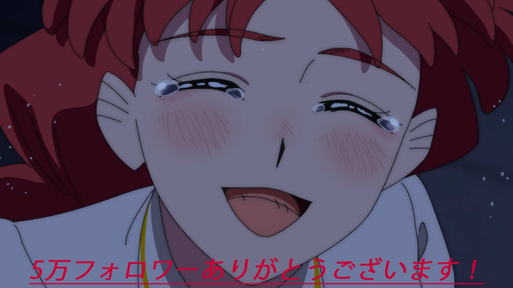
リジス@C108 日曜日 東3マ-26bさんがリポスト
#C108新刊
夏コミの告知をさせて頂きます。
舞台探訪時に撮影した写真をまとめたフォトブックを作ってみました。
題材となるのは、TVアニメで綺麗にしてもらえますか。描かれて熱海の風景です。ガイドというのではなく、描かれている風景写真から作品を楽しめる一冊となります。

ガチでイライラしてきた、何が悲しくてエージェントひたすら叱りつけてんだよ（しかしその方が進むし、そうしないと現実的なスピードで終わらないなら使わざるを得ない
CD取り込んだら力尽きたらしく、ドライブ蛾物故割れて認識しなくなった(´・ω・`)
嫁氏にHUNTER×HUNTERを布教したら「面白い！あっ！でもまだこの巻のときは生まれてない！あっ！まだ生まれてない！」って言いながら読み進んでて号泣（ゆく年くる年）
Cursor の最大の不満、ステアリングができないことなんだけどみんなどうしてるんすか？これ仕様？裏技があったりしないの？？？？？？？？？？？？？？？？？？？？？？
Torishima / INTPさんがリポスト
ガチこれ。前段レイヤーの会話特化型で、強強エージェントに繋げる手際の良さや抽象理解度が高い手前側オーケストレーション（？）的なモデルの進化がほしい。強いていうならgemma4系なのかなぁ。
Torishima / INTP
@izutorishima
マジでこれなんだよなあ・・・頭そこそこでもEQがよい理解のある彼くんが本当に必要 x.com/erukiti/status…
輿水畏子さんがリポスト
絵を描いたことがないなら、試してみて。
ナフサツムツムくん、限界突破しとるやんけ
境野春彦 | エネルギー問題
@LPGadvisorJP
この前、あるジャーナリストが言ってましたね。『〇〇首相、ロクな〇に方しないと思います』と。当たってますね。
アニメ化に際して一部変更している個所もあるけど、それも含め各話数ごとに1つのお題が収まる・引きが良い終わり方にできるように構成されていて、原作を読んでいる身としても毎週楽しい。次回も楽しみだ。
対ありでした。～お嬢さまは格闘ゲームなんてしない～ 第5話
舞台は東京へ。いざ！！......の前に、あのお母様をどうにかせんといかん。
（決戦の舞台含めた）アニオリ+勉強会含め一部カットしていた話を織り交ぜて上手く構成していると感じる。
東京で開催される格ゲー大会に参加することとなった綾たち。大会に出場するためには親のサインが入った...
nicovideo.jp
大韓航空、熊本地震でミネラルウォーターを緊急輸送 #韓国・中国

大韓航空、熊本地震でミネラルウォーターを緊急輸送 - オレ的ゲーム速報@刃の記事ページ
jin115.com
悪ノリが止まらないAIブラウザ「Gem」でネットの価値観が崩壊する

悪ノリが止まらないAIブラウザ「Gem」でネットの価値観が崩壊する | ギズモード・ジャパン
お得な「CAPCOM SUMMER SALE」が開催中！『ストリートファイター6』のYear3が初めてセール対象に
https://
gamespark.jp/article/2026/0
8/05/170210.html?utm_source=twitter&utm_medium=social&utm_content=tweet
…

貝さんさんさんがリポスト
.˚⁺‧┈┈
#さよならララ ノベライズ刊行決定！
┈┈‧⁺ ˚.
オリジナルTVアニメ「#さよならララ」の
ノベライズが電撃文庫にて刊行決定！
2026年10月9日刊行予定です。
続報をお楽しみに

Torishima / INTPさんがリポスト
グラボが無いとかPCが無いからMiniMax-H3で遊べない～とかって人、グラボ買うよりRunpodでRTX5090を1時間160円で借りて生成する方が安そう。部屋もクソ暑くならない。15秒尺動画生成に10分かかるとして1時間で6本。1本あたり27円くらいか。多分APIより安いでしょう。
Taka Wakiyama
@Y3yXiKJKrn8lDhl
RunPodのRTX 5090でMiniMax H3を動かせた。
セットアップで$0.5くらいで、以降1動画$0.07~0.15くらいで作れそう。
https://
media.zeneffi.co.jp/posts/minimax-
h3-runpod-rtx5090
…
自分自身も ASD の自覚はあるけど今は大局を強く志向するタイプだから、大局を見失って、明らかに過剰なネチネチ詰めるやつをやっているとコスパ悪すぎだろってキレ散らかしてしまう（自分より酷いの意）

Torishima / INTP
@izutorishima
GPT-5.6 Sol も結局発達障害 ASD すぎるんだよな、根本的にデリカシーが皆無で技術的な正確性・厳密性に強く固執して人間様が求めている大局を忘れてネチネチネッチネチトークンを溶かし、挙げ句の果てに品質だけを目的関数にして論理的正論で殴ることが正義だと思い込んでいる節がある x.com/izutorishima/s…
2.6Bを34Tに詰め込んでる・・・・え？本気で言ってます？
AM09:21
@AM09_21
事前学習34Tを2.6Bにしちゃうのは狂気の領域すぎるんよな
何をされてるんでしょうか...(畏怖)
んでQwen 3.5 9Bに勝ってるのは何事...? x.com/liquidai/statu…
和風バニーっていいよね〜〜〜可愛い！
マジでこれなんだよなあ・・・頭そこそこでもEQがよい理解のある彼くんが本当に必要
erukiti
@erukiti
ある程度軽くて、人間とAIの通訳ができて、デリカシーやEQに特化した感じの薄いLLMって作れないもんかね...
現行のLLMはどうもレイヤー数=EQみたいな感じになってて良くない
できればローカルで動く通訳LLMがほしいんだよ。そいつとだけ話していたい
GPT-5系はマジでうんざりするしOpusも微妙 x.com/izutorishima/s…
10代開発者の“3万円”ジョークゲームが一時2億円近い売上に！？99.9%の返金申請で一攫千金は夢に―開発者本人は資金洗浄の可能性も危惧
https://
gamespark.jp/article/2026/0
8/04/170209.html?utm_source=twitter&utm_medium=social&utm_content=tweet
…
その是非に議論のある返金システムですが、問題ある利用には何らかの対応が求められそうです。


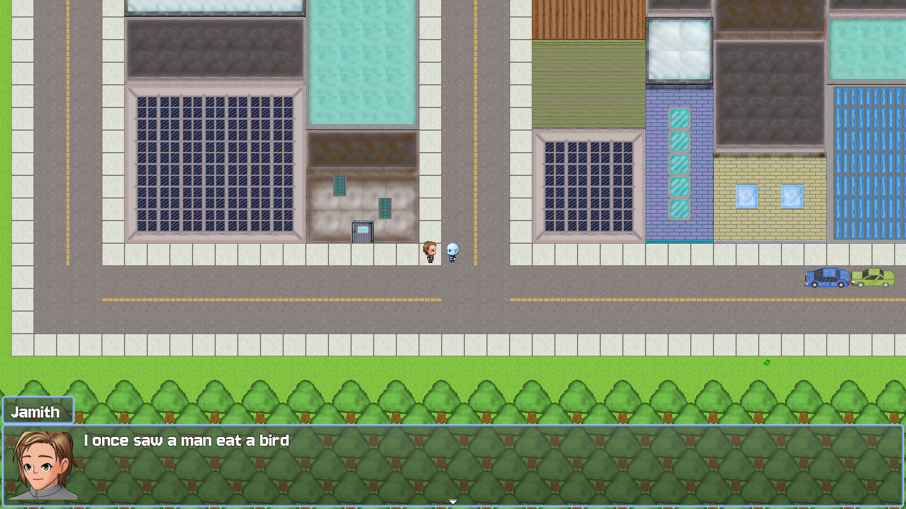
Torishima / INTPさんがリポスト
僕の代わりにGPT-5を鬼詰めしてくれるヤツほしいんよ
Torishima / INTPさんがリポスト
ある程度軽くて、人間とAIの通訳ができて、デリカシーやEQに特化した感じの薄いLLMって作れないもんかね...
現行のLLMはどうもレイヤー数=EQみたいな感じになってて良くない
できればローカルで動く通訳LLMがほしいんだよ。そいつとだけ話していたい
GPT-5系はマジでうんざりするしOpusも微妙
Torishima / INTP
@izutorishima
GPT-5.6 Sol も結局発達障害 ASD すぎるんだよな、根本的にデリカシーが皆無で技術的な正確性・厳密性に強く固執して人間様が求めている大局を忘れてネチネチネッチネチトークンを溶かし、挙げ句の果てに品質だけを目的関数にして論理的正論で殴ることが正義だと思い込んでいる節がある x.com/izutorishima/s…
米財務長官「イラン合意、きょうか明日にも」 原油先物が急落
米財務長官「イラン合意、きょうか明日にも」 原油先物が急落
Torishima / INTPさんがリポスト
正直まだ目はよろしくないので画像解析系は全然当てにならないですねww
僕も絵コンテのチェックとかそこら辺一回任せようとしましたがズタボロだったので、まだ難しいかなーとおもいつつも

Roboflow Playground | Compare & Test Vision AI Models
私のブルースカイはライン超えの話の方が多い…
NYダウは続伸で始まる、最高値を更新 イラン情勢の不安後退で
NYダウは続伸で開始、一時800ドル高で最高値 イラン情勢の不安後退
三菱自、「パジェロ」の中型版を28年度発売 復活シリーズの本命に
https://
nikkei.com/article/DGXZQO
UC245NC0U6A720C2000000/?n_cid=SNSTW005&n_tw=1785853954
…
小型版も30年ごろ投入します。

三菱自動車、「パジェロ」の中型版を28年度発売 復活シリーズの本命に
暴れ牛として街を大破壊！群衆を追い回す雄牛なりきりシム『Bull Simulator』発表
https://
gamespark.jp/article/2026/0
8/04/170208.html?utm_source=twitter&utm_medium=social&utm_content=tweet
…


輿水畏子さんがリポスト
各書店の特典ss概要バレ
○○○○○○○○○○○○○○○○○○○○○○○○○○○○○○○○○○○○○○○○○○○○○○○○○○
https://
fse.tw/fx3Ly9u9 これは特典で小説版どれ買うのかまだ迷ってる人向けのやつ

伏せ字をつかってネタバレ回避！あふれる想いでつながるfusetter（ふせったー）
fusetter.com
エンドスさんがリポスト
防災システム研究所
山村所長「総理が行った氷川中学校には…体育館にエアコンはなかった。総理が行くからではないんでしょうが…数日前から工事が始まって昨日試運転した」
山村さん…消されないよね
#ひるおび

ゆうぽむのりんかい線30周年お祝いボイスを東京テレポート駅に聴きにいったんだけど、2分足らずの会話の中で上原歩夢が2回も「そうだね〜」「そうかも！」って歩夢特有の無の返事しててかなり嬉しくなった 上原歩夢が上原歩夢っぽい言動をしてると、本当に嬉しい
#きょうのリガー
Torishima / INTPさんがリポスト
事前学習34Tを2.6Bにしちゃうのは狂気の領域すぎるんよな
何をされてるんでしょうか...(畏怖)
んでQwen 3.5 9Bに勝ってるのは何事...?

Liquid AI
@liquidai
本日、LFM2.5-2.6Bをリリースします。これは完全にデバイス上で動作するエージェントモデルです。計画を立て、ツールを呼び出し、スマートフォン、ラップトップ、PC、ロボット上で多段階タスクを処理します。データはデバイスを離れることはなく、各実行の限界コストはほぼゼロです。
>
貝さんさんさんがリポスト
#さよならララ
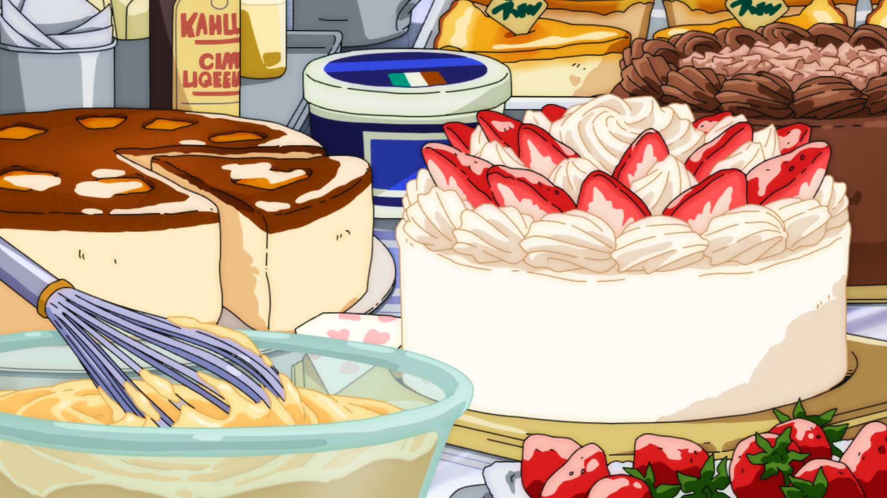
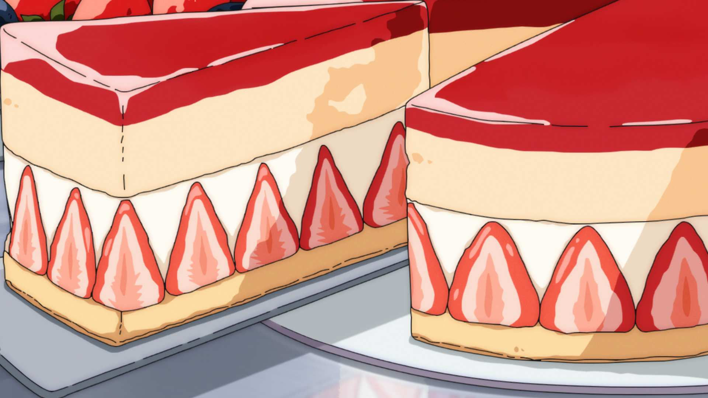
MICHEE-N（ミッチー・Ｎ）さんがリポスト
家業のパントラックがミニカーになりました！
実物写真のまま作っていただきました！
奥の建物もそのまま 当時の建物です。
後ろに見える緑の壁の建物はまた現存してます（モデル アイコン 本店の隣にある建物です）
懐かしの商用車コレクション(134) 2026年 8/19 号 [雑誌]
https://
amzn.asia/d/0bLYBaMr


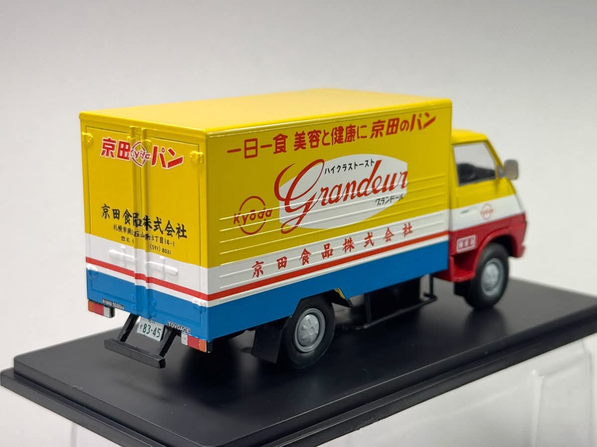
Torishima / INTPさんがリポスト
今のLLMってRLVR、要するに人間じゃなく機械が評価する仕組みで学習してるからこういう傾向があって、RLVRはscalableだからこの傾向は続くと思う
LLMが人間にはわからない言語で喋り出す〜みたいなのよく言われてたけど、実際にそれが始まってる
LLMが制御不能になりつつある証拠の一つだと思う
Torishima / INTP
@izutorishima
GPT-5.6 Sol も結局発達障害 ASD すぎるんだよな、根本的にデリカシーが皆無で技術的な正確性・厳密性に強く固執して人間様が求めている大局を忘れてネチネチネッチネチトークンを溶かし、挙げ句の果てに品質だけを目的関数にして論理的正論で殴ることが正義だと思い込んでいる節がある x.com/izutorishima/s…
透明な夜に駆ける君と、目に見えない恋をした。 第5話
彼と過ごす中で、景色の彩りが広がっていく。形作られていく。
冬月視点で語られる、見えない世界の日常と恋。
学祭の当日、寮生の空野は必死に船を漕いでいた。カッター乗船体験の漕ぎ手として鳴海と駆り出されたの...
nicovideo.jp
冬月の視点で世界が形作られる、その描写の魅せ方が良かったなと感じる。OP・EDの映像も変化し、ここから二人の距離が一層変化していきそうだ。
毎日AI使う人へ、｢認知的降伏｣にご注意
毎日AI使う人へ、｢認知的降伏｣にご注意 | ギズモード・ジャパン
Torishima / INTPさんがリポスト
つくよみちゃんの声でIrodori TTS v4 を試させていただくとこんな感じ
さすがのクオリティだな
つくよみちゃんがかわいすぎる…！

Torishima / INTPさんがリポスト
Flux 3.0, H3に続いてWan 3.0もですか
3三兄弟が揃ったな
青龍聖者
@bdsqlsz
Wan 3.0 が登場します。
1080P ネイティブ 30s
「高市首相の熊本・被災地での滞在時間はたったの3分」という投稿が拡散→内閣広報官「違う。実際は〇〇分間だ！」と否定 #政治
「高市首相の熊本・被災地での滞在時間はたったの3分」という投稿が拡散→内閣広報官「違う。実際は〇〇分間だ！」と否定 - オレ的ゲーム速報@刃の記事ページ
jin115.com
【若者の食事離れ】日経新聞「Z世代は週１で食事キャンセルしている」
【若者の食事離れ】日経新聞「Z世代は週１で食事キャンセルしている」 : ハムスター速報
Torishima / INTPさんがリポスト
本日、LFM2.5-2.6Bをリリースします。これは完全にデバイス上で動作するエージェントモデルです。計画を立て、ツールを呼び出し、スマートフォン、ラップトップ、PC、ロボット上で多段階タスクを処理します。データはデバイスを離れることはなく、各実行の限界コストはほぼゼロです。
>
とーーーーーっても可愛い！！！！
想定を上回る早さ！サバイバルTPS『アノマリス／ANOMALITH』Steamウィッシュリスト6万件達成―先行体験版が期間限定配信中
https://
gamespark.jp/article/2026/0
8/04/170207.html?utm_source=twitter&utm_medium=social&utm_content=tweet
…

とりしま (Sub I/O)さんがリポスト
rkgk
秋葉原や神保町でマニアックな品揃えで知られてる「書泉」だけど、赤字体質だったのか。両方の店も昔から結構お客さんは多いイメージあるのだけど。
老舗書店の書泉が6年振りに黒字転換 「誰に売るか」を極める大改革

老舗書店の書泉が6年振りに黒字転換 「誰に売るか」を極める大改革
トイレ紙の輸入が4割増 中国製が拡大、国内品の値上げの壁に
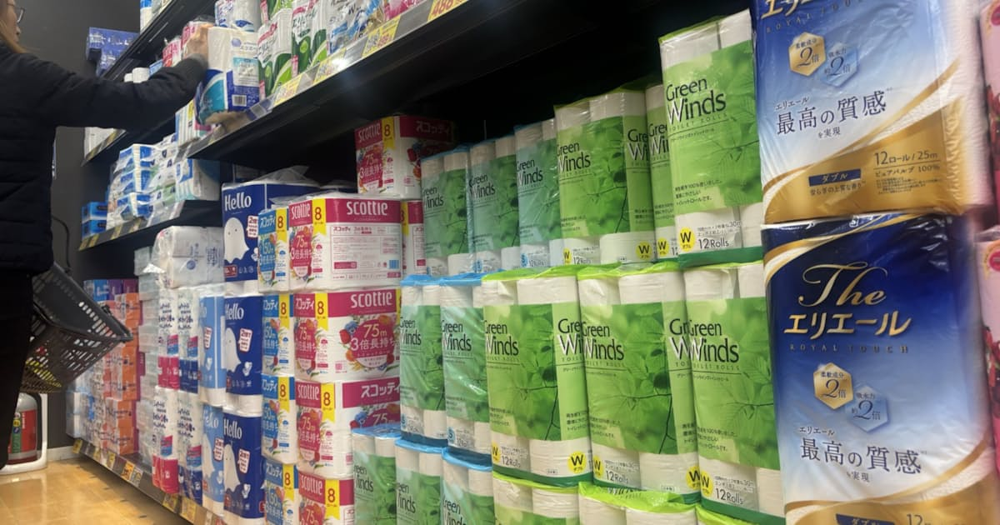
トイレットペーパーの輸入が4割増 中国製が拡大、国内品の値上げの壁に
楽画喜堂に8月5日配信開始の電子書籍リストを追記しました。＞
https://
rakugakidou.net/#20260805kindl
es
…
立ち絵もちょっと身長が低くなってるから少しだけ幼児化してる説が有力ですよね。本当に可愛い
#dnb / #Clarx
Clarx & PhiloSofie - Atlas

In this music video I wanted to show you my city - enjoy some clips...
youtube.com
楽画喜堂Rに8月5日配信開始のFANZA電子書籍リストを追記しました。＞
https://
sub.rakugakidou.net/#20260805fanza
Torishima / INTPさんがリポスト
もちづきさんの原液…


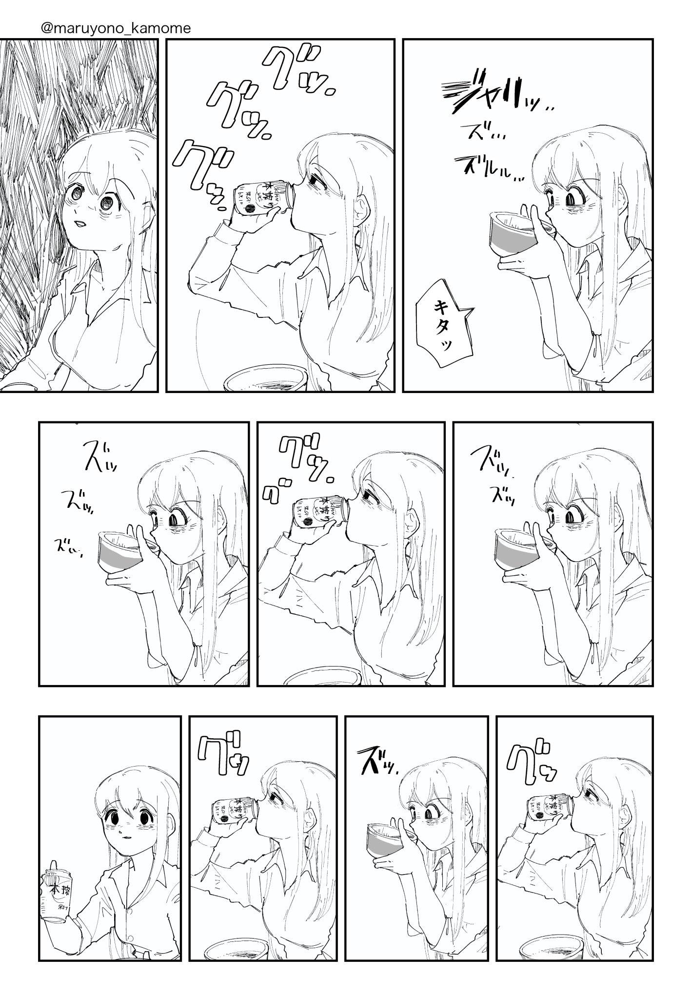
まるよのかもめ
@maruyono_kamome
グルメ漫画
#dnb / #Brainrave
Inao - Siracide
https://
youtube.com/watch?v=rcVi2S
ZvkCw&list=PLcppOT58QzbQ
…
Brainrave
➔Released: 31/07/26
➔Cat: BRAINRM046
#dnb #liquidfunk / #PortalRecordings
Dan Guidance & Sodie - This Reflection
https://
youtube.com/watch?v=KU-_ZX
m5q_8&list=PLcppOT58QzbQ
…
"Dan guidance returns with an amazing release 07.08 on Portal Recordings"
#dnb #breakbeats / #Metalheadz
Kid Drama, LaMeduza - Try (ft. LaMeduza)
https://
youtube.com/watch?v=fn4yxA
42qws&list=PLcppOT58QzbQ
…
"Taken from Kid Drama's debut full-length for Metalheadz, Machines and Other Things"
#dnb / #SleeplessMusic
Circadian - Energy In Motion (A.M.C Remix)
https://
youtube.com/watch?v=1gRSgG
cD1Lk&list=PLcppOT58QzbQ
…
"A massive track got a massive remix"
8/5 16時より 日米同時全話一挙独占配信開始
『スター・ウォーズ：ビジョンズ／九人目のジェダイ』多田俊介監督インタビュー
「待ちきれずにディズニープラスを契約した」「はやく見たい」と期待の声
配信直前の率直な思い、制作秘話を聞きました
▼インタビュー全文はこちらから

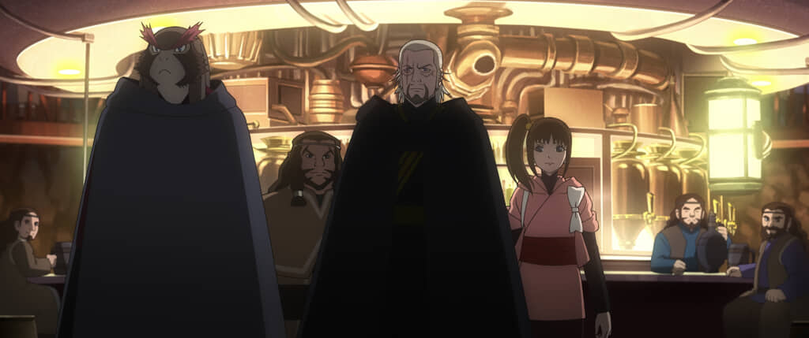
愛知ならではの商品を「なごみやげ」に認定 名古屋商議所が36点選定
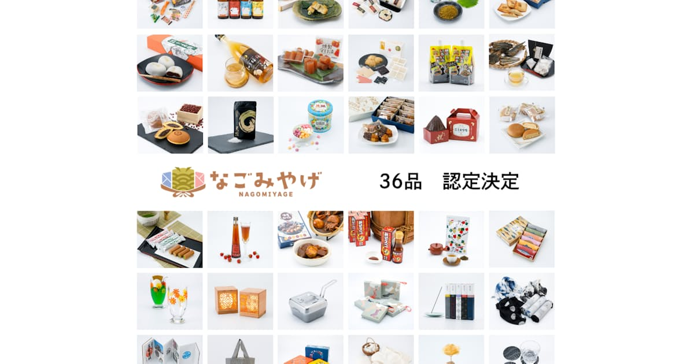
愛知ならではの商品を「なごみやげ」に認定 名古屋商議所が36点選定
Galaxy S27のフラッグシップ機には超でっかいバッテリーが載るかもしれない

Galaxy S27のフラッグシップ機には超でっかいバッテリーが載るかもしれない | ギズモード・ジャパン
テスラさんがリポスト
【悲報】
西宮北口駅にあった涼宮ハルヒの自販機、まさかの消失。

これ系のアプリだとどういう課金システムなのかが気になる（ガチャは難しいだろうし、世界観を壊さずに課金yさせられるのか？）
ニケちゃん
@tegnike
このライザAI、独自合成音声と独自LLMらしい
SpiralAIすっご x.com/tegnike/status…
『アナザーエデン ビギンズ』DL版が予約受付開始！「追加キャラクターパック Vol.1～5」がセットになったシーズンパスも展開
https://
gamespark.jp/article/2026/0
8/04/170206.html?utm_source=twitter&utm_medium=social&utm_content=tweet
…

貝さんさんさんがリポスト
┈┈┈┈┈ ┈┈┈┈┈
「#対ありアニメ」
第話エンドカード公開
┈┈┈┈┈ ┈┈┈┈┈
第5話「前夜」
エンドカード公開
illustration
大＠ nani（
@daiwithnani
）
#taiarianime

対ありアニメ #5、濃厚百合アニメ風？かと思いきや顧問不在ながら王道部活ものっぽいテイストでめちゃくちゃ見やすい！！
ゲームが題材なのもあって女の子らしいしっとりした関係、というよりは、どちらかというと百合に距離を置いて男同士のカラッとした人間関係に近い描写なのが結構意外だけど好き
東北大学、リチウム硫黄電池の寿命向上 容量大きく電気自動車に応用

東北大学、リチウム硫黄電池の寿命向上 容量大きく電気自動車に応用
Torishima / INTPさんがリポスト
というか Sora2 が出てからまだ1年も経ってなかったのか
それ考えると、gpt-image-2 についても来年の4月ぐらいまでに同等性能のローカル画像生成AIモデルが出てきてもおかしくないということ
金のニワトリ
@gosrum
MiniMax-H3、試しに sora2 と同じ入力で動画を生成してみた
これ見ると sora2 のように雑プロンプトでも良い感じに解釈して動画を作るところまではいけてないけど、解像度や動画の長さも指定できるしプロンプト工夫すれば sora2 以上のクオリティも出せるはず x.com/gosrum/status/…
ユーレカエヴリカ、ネトフリ限定配信のくせにネトフリへの嫌味みたいなOPとEDの使い方してる。
人間は音楽のない世界で生きるべきだ
スマホ中国市場、出荷台数2割減予測 小米はメモリー高騰で1割値上げ
スマホ中国市場、出荷台数2割減予測 小米はメモリー高騰で1割値上げ
スイッチ2版『FF14』から始める新米“ヒカセン”が知っておきたい10のこと―めっちゃ遊べる「フリートライアル」や、初心者でも安心の「コンテンツサポーター」システム【特集】
https://
gamespark.jp/article/2026/0
8/04/170205.html?utm_source=twitter&utm_medium=social&utm_content=tweet
…
RPG4本分が無料で遊べる！？実は今、メチャクチャ『FF14』を始めるチャンスなんです！！
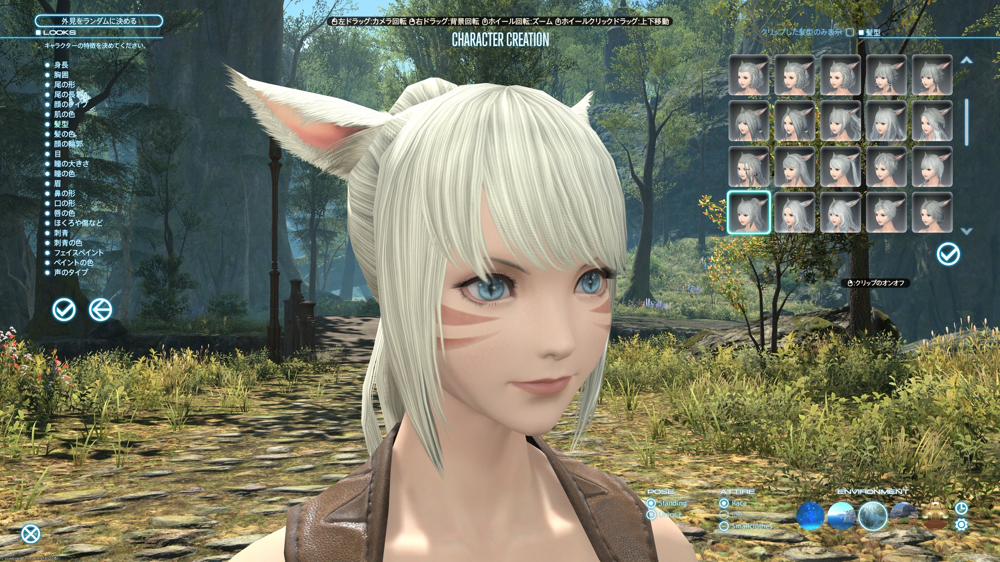


アニメのタグつけて文句言ってるならまあわかるが、つけずに文句言ってんだからとやかく言われる筋合いはない。
Torishima / INTPさんがリポスト
MiniMax-H3、試しに sora2 と同じ入力で動画を生成してみた
これ見ると sora2 のように雑プロンプトでも良い感じに解釈して動画を作るところまではいけてないけど、解像度や動画の長さも指定できるしプロンプト工夫すれば sora2 以上のクオリティも出せるはず

金のニワトリ
@gosrum
遅ればせながら、Sora2をおためし
ニワトリが産んだ金の卵からこのアイコンの金貨を鋳造するシーンを作りたかったけど、ちょっと無理があったかw
Polar Starチャレンジ 219日目午後の部

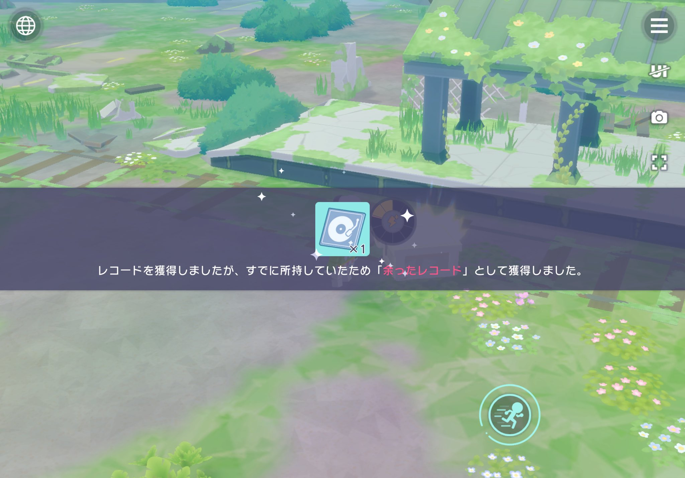
マイネームイズ
@MyNameIs_smrn
Polar Starチャレンジ 219日目午前の部 x.com/mynameis_smrn/…
台風13号/TY12W、4回目のEYEWALL REPLACEMENT CYCLEが完了し、現在は5度目の発達段階。海水温とウィンドシアは良環境場だが海洋熱容量はそれほど高くないため、発達は長続きしない予報。といっても沖縄接近時には100KTS級の見込み。
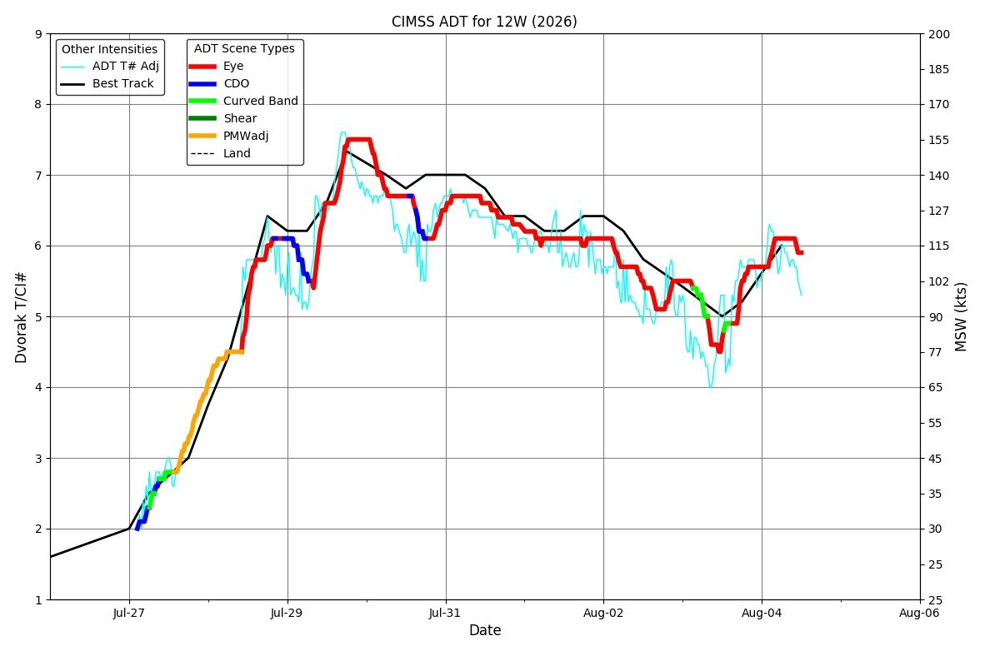

Google、新型スマホ「Pixel 11シリーズ」を予告 8月12日に予約購入スタート
米Googleの日本法人が、新型Pixelスマートフォンの予約受付を8月12日午後11時に始めると告知した。新製品発表イベント「Made by Google」は翌13日午前7時を予定しているほか、同じ13日には、東京・表参道に日本初のGoogle直営店もオープンする。
itmedia.co.jp
貝さんさんさんがリポスト
"네가 죽을 때까지 사랑하고 싶어" #05 작업에 참여했습니다
잘 부탁드립니다!
きみが死ぬまで恋をしたい #05 作業に参加しました
よろしくお願いします！
#きみ死ぬアニメ
#きみが死ぬまで恋をしたい
#kimishinu
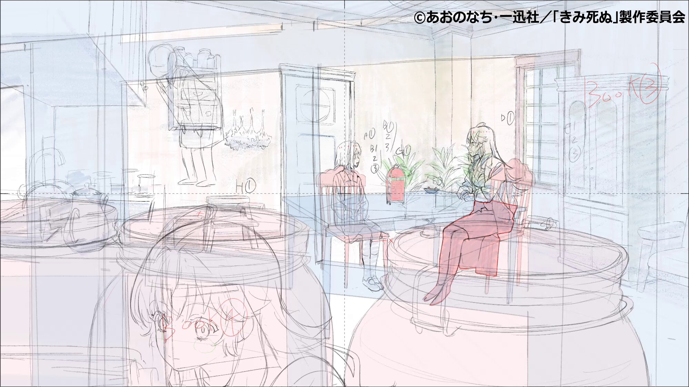

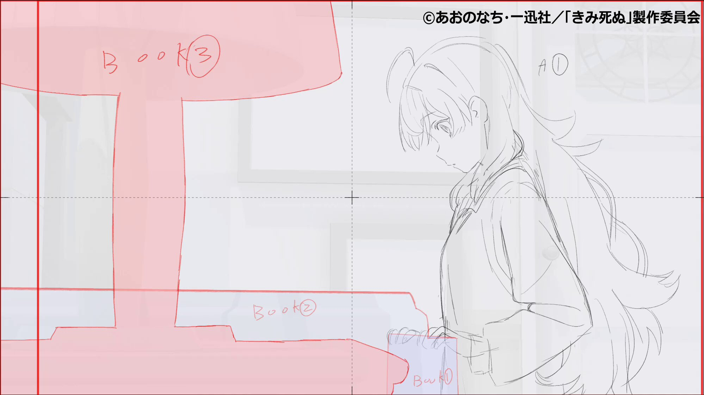

輿水畏子さんがリポスト
私の最愛のマシュマロみたいな子たちです。

Torishima / INTPさんがリポスト
ソース:
Real clips from the WAN 3.0 invited test, generated on PixelDojo.
pixeldojo.ai
Torishima / INTPさんがリポスト
Wan 3.0 が登場します。
1080P ネイティブ 30s
台風13号/TY12W、JTWCの解説資料でもTAU60以降、GFS,NAVGEM,GSMが北進シナリオ、ECMWF等欧州モデルは西進シナリオと進路予報が割れ始めてる、と。朝鮮半島付近に進むトラフのサブハイへの影響をどう評価するか？不確実性が高まっている。
https://
metoc.navy.mil/jtwc/products/
wp1226prog.txt
…

Torishima / INTPさんがリポスト
RTX5090ローカルH3の480p15秒生成、色々やって大体3分くらいで1本生成できるようになったらしい、5秒動画は60秒切ってた
Sage単独とGuarded Sol-Attn τ0.5 + EasyCache 0.075で比較してみたけど、ズームアウトしてくとGuarded Sol + EasyCacheの方は顔の一貫性保てなくて別人になってた
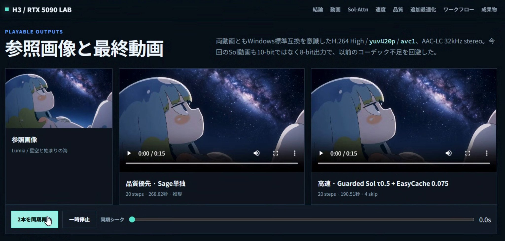
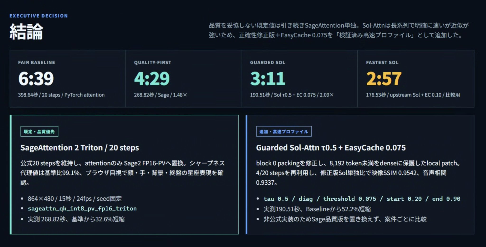
輿水畏子さんがリポスト
#まのさばネタバレ
魔女化ヒロちゃんの服がちょっとぶかぶかになってるの、実は身体が縮んでるんじゃないかっていう妄想

輿水畏子さんがリポスト
すごーく遅刻している
和服バニーなエマちゃん
#まのさば二次創作 #まのさばバニー部

バンドマン、性加害で活動休止→ミュージシャン「性暴力・あらゆる犯罪は全男性に内包された加害性の問題。皆さん心当たりありませんか？」 #炎上

バンドマン、性加害で活動休止→ミュージシャン「性暴力・あらゆる犯罪は全男性に内包された加害性の問題。皆さん心当たりありませんか？」 - オレ的ゲーム速報@刃の記事ページ
jin115.com
Torishima / INTPさんがリポスト
自分も今残り15%とかになってて絶望している。そんなに使ってた記憶ないんだけどなぁ。リセットチケットも13日期限の一枚しかないし。こういう時こそリセットしてくんないかな。

Torishima / INTP
@izutorishima
毎日複数動かしまくってるともう 1/3 使い切ってしまったのだがどうすんべ？？？ Tibo のリセット砲もう来ないのだが・・・
Codex の $200 で足りないなんてことある？って思ったけどそもそも GPT-5.5 まではここまで自走できなかったんだよな
Torishima / INTPさんがリポスト
正確性・厳密性であれば「情報不足だから作業を安全に実行できない」「候補が定まらないから回答を差し控える」みたいな挙動をある程度取ってくれるGrok, DeepSeek, Hyのほうがずっと信頼して使えるから良いんだよな。
Sol, Fableレベルであれば情報を自ら探索する挙動は好ましいんだけど、Terra,
Torishima / INTP
@izutorishima
GPT-5.6 Sol も結局発達障害 ASD すぎるんだよな、根本的にデリカシーが皆無で技術的な正確性・厳密性に強く固執して人間様が求めている大局を忘れてネチネチネッチネチトークンを溶かし、挙げ句の果てに品質だけを目的関数にして論理的正論で殴ることが正義だと思い込んでいる節がある x.com/izutorishima/s…
沢木耕太郎さん、モロッコ紀行「途上の王国」刊行
https://
nikkei.com/article/DGXZQO
UD264IK0W6A620C2000000/?n_cid=SNSTW005&n_tw=1785829365
…
「アフリカに渡ればよかった」。26歳から27歳にかけての、香港からロンドンまでの旅を描いた「深夜特急」での心残り。49歳でのモロッコ行きにつながりました。

沢木耕太郎さんがモロッコ紀行「途上の王国」 「深夜特急」の心残り
宇宙船の廃品を漁って生計を立てるハードコアな宇宙生活シムが正式リリース。多額の借金と船とクルーを管理するスカベンジャーライフ―採れたて！本日のSteam注目ゲーム3選
https://
gamespark.jp/article/2026/0
8/04/170204.html?utm_source=twitter&utm_medium=social&utm_content=tweet
…
廃船の残骸漁りがメインコンテンツのニッチなゲーム。廃品売って自分だけの船を設計しクルーを雇おう
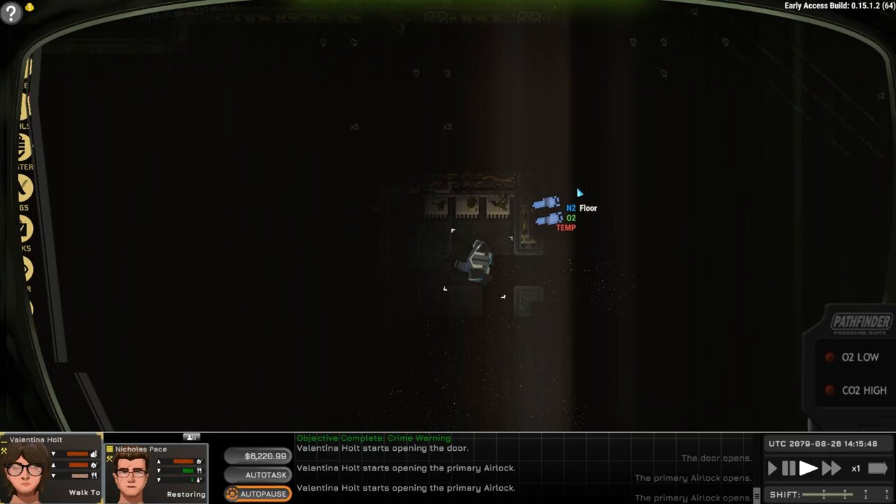
なるせひろのりさんがリポスト
あらゆる方向に、インスピレーションを。
8月12日ー
10年の歩みが生んだ、新しいInsta360 X6がまもなく登場。
X6が当たるプレゼントキャンペーンも開催中！
応募はこちら
https://
bit.ly/x6preheat_twijp
#Insta360X6 #360度カメラ

某アニメ、BD特典のサンプル画像に「SAMPLE」透かしが入って無くて、しかもクソデカ解像度で公開されているのに気付いてしまった…
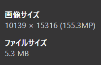
3秒ルール、庶民の間では3秒以内のキスはノーカンになるんですよ。

テスラさんがリポスト
”茗荷バブル” 外伝
『きりきり亭のぶら雲先生（４）』より
第二十六話『なんもかんもの忘却茗荷』
若かりし頃の勢いだけのまんがである。
「茗荷まんが」というジャンルがあるのなら歴史に残る名作。（自画自賛）（笑）(正)


ロッテ益田直也が250S、史上5人目 頑健な足腰と折れぬ心で黙々と
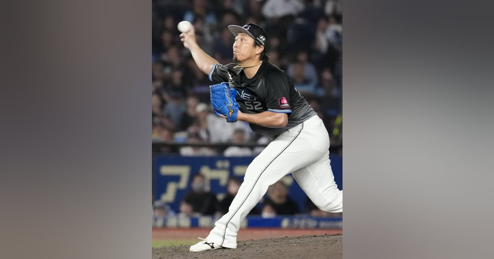
プロ野球:ロッテ益田直也が250S、史上5人目 頑健な足腰と折れぬ心で黙々と
たまに居酒屋で「あの二人、この店で出会って今度結婚するのよ」みたいなカップルを見るたび、「ボクそんな話が一切ないんですが…」ってなるんだけど、主な理由が「だいたい入った店の客層、平均年齢６０オーバー」だからだと信じたい。ボク側の問題ではない。
輿水畏子さんがリポスト
#まのさばネタバレ

プールへの飛び込み 思った以上に危険だった・・・

プールへの飛び込み 思った以上に危険だった・・・ : ハムスター速報
ＡＩですよってノートが付いているのだけど理由が、『噴射口（画面中央下にあるノズル）が後方噴射位置だから（＝前に進んでいる最中なので風で無理）』ってのが面白い。
噴射口がホバリング状態みたいに下を向いていたら、ハリアーならやってやれないことはないという。
（キャノピーが違いますが）
Aero vance
@Aerovances
まだ信じられないよ。だって、これがAIなのか本物なのかわからないんだもん。でもどっちにしても、これはヤバいね。
貝さんさんさんがリポスト

ベイネット、富岡八幡例大祭でまさかの有償ストリーミングサービスとはww いやーエリア外でそんな需要あるかな。
https://
baynet.ne.jp/fukagawamatsur
i/
…
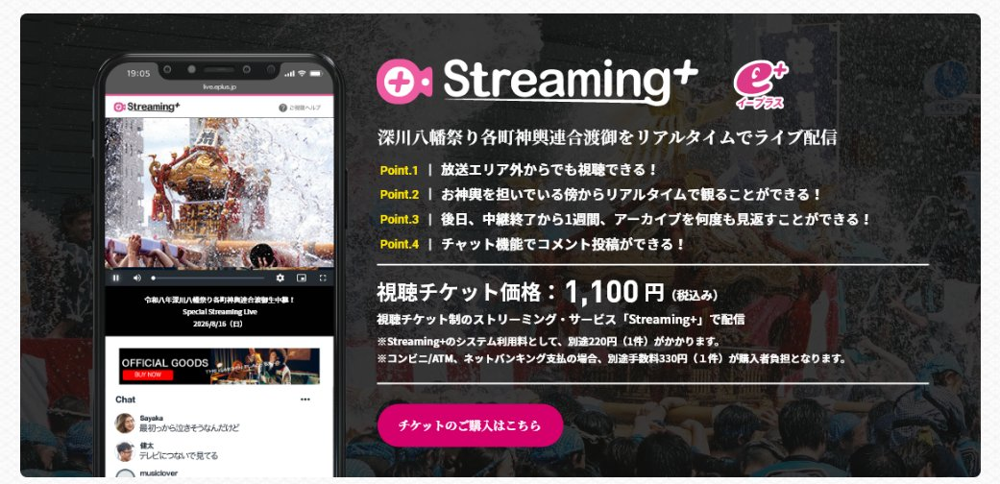
コールドシューマウントの汎用性。
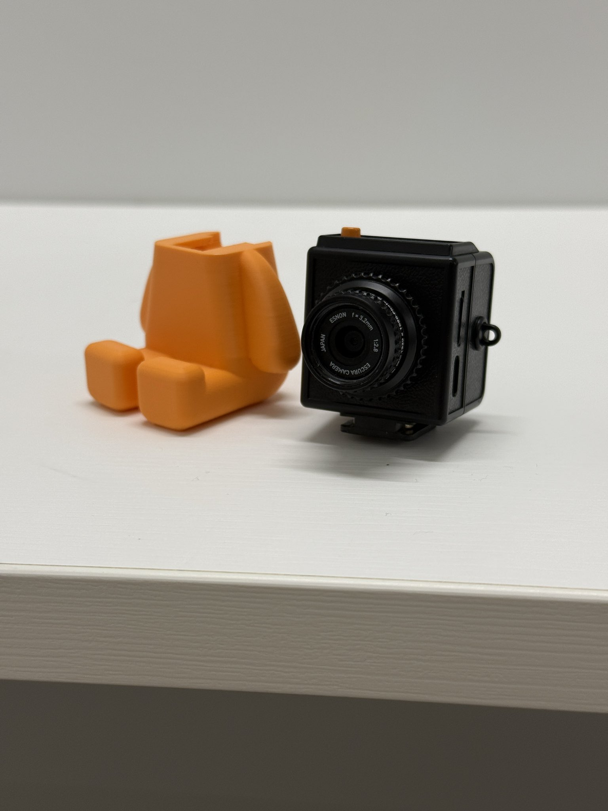
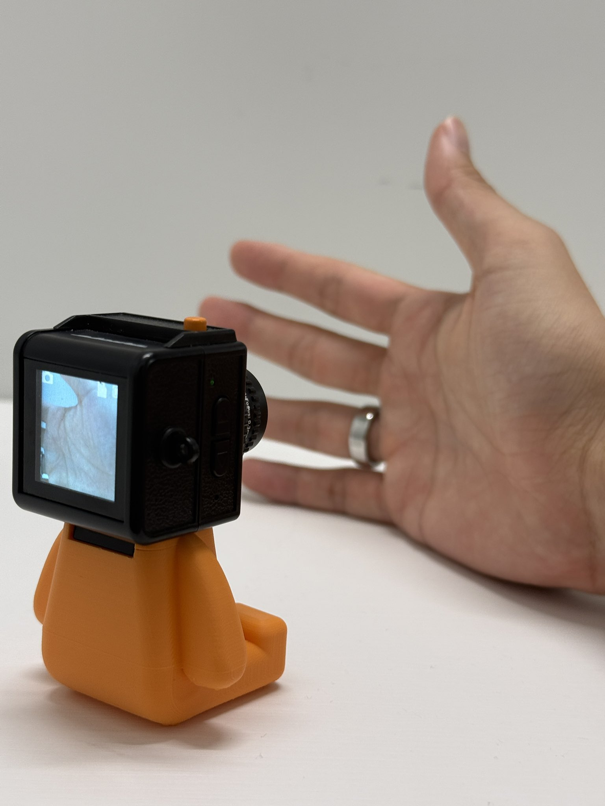
すげえなこれ・・・著名 IP でちゃんと作り込んだ AI チャットアプリって初めてなのでは（AI 周りは Spiral さんのやつらしい）
『ライザのアトリエ』AIチャットアプリ先行プレイ感想。「告白」にも「手つなぎお願い」にも向き合ってくれる、ひと夏の青春会話
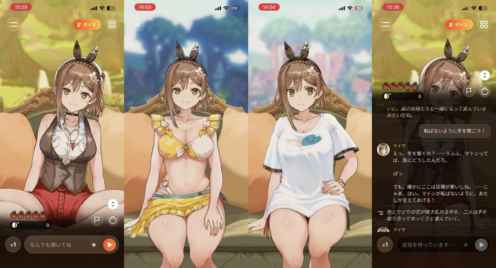
『ライザのアトリエ』AIチャットアプリ先行プレイ感想。「告白」にも「手つなぎお願い」にも向き合ってくれる、ひと夏の青春会話 - AUTOMATON
商社が円安で好業績 4〜6月、海外新規投資では「慎重さ必要に」

決算:商社が円安で好業績 4〜6月、海外新規投資では「慎重さ必要に」
3Dプリンターで「リガー」のカラダを作りました。ちょこん。

ロッテ益田直也、通算250セーブ達成 史上5人目
プロ野球:ロッテ益田直也、通算250セーブ達成 史上5人目
物語とポルノのバランスが大事でぇ…
台風13号、GSMだけじゃなくてGFSも東シナ海を北進シナリオになりつつあるのか。それにしてもGSMの878という数字はどう考えても過発達させすぎてるのだけど…
https://
weather-models.info/latest/medium_
multimodel/multimap/
…
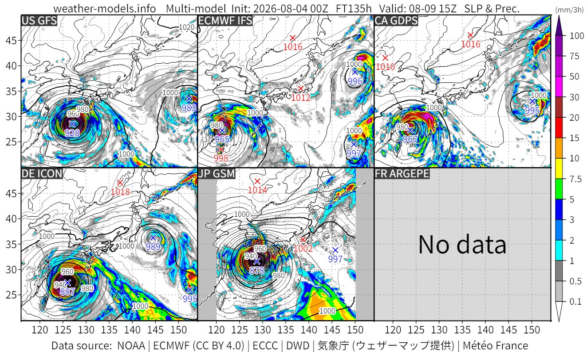
気象庁としては台風13号が東シナ海を北上するシナリオを無視できない感じか。
https://
jma.go.jp/jma/press/2608
/04b/kaisetsu202608041600.pdf
… (※PDF)
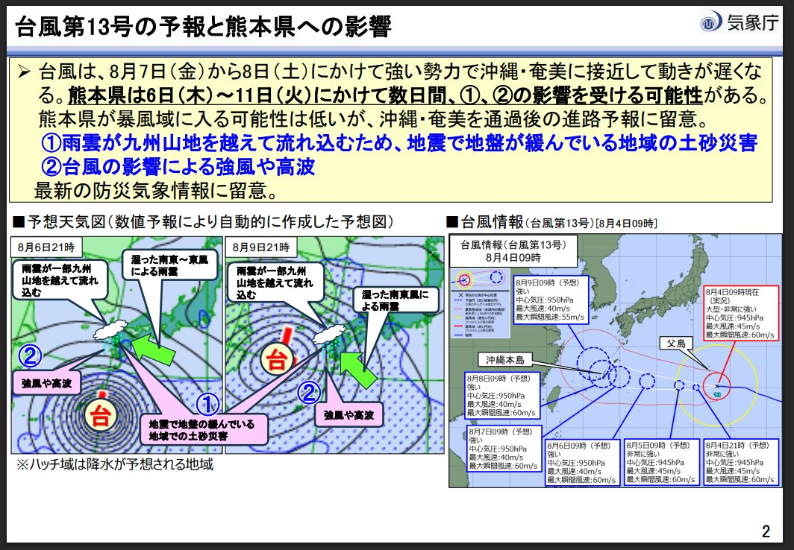
オイシックスが2万円超のラーメンおせち、人気店「飯田商店」監修
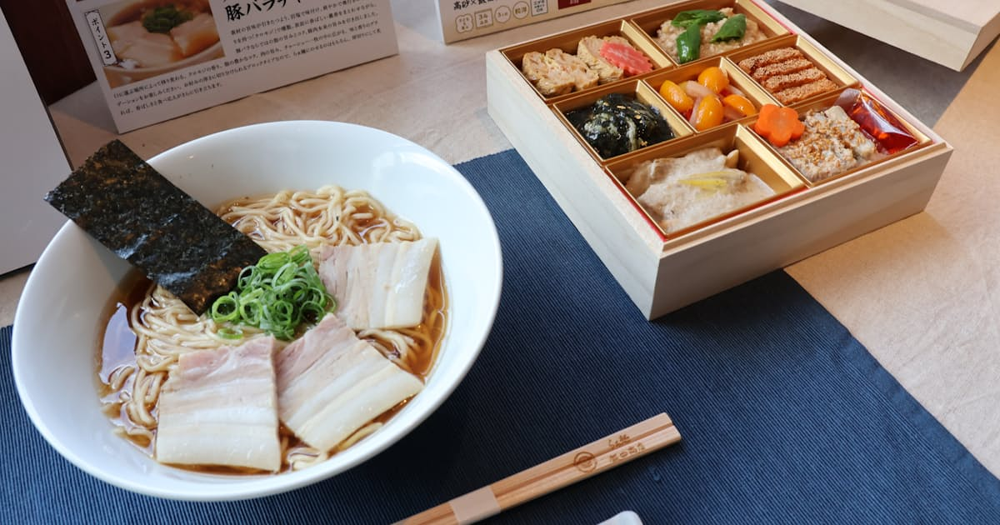
オイシックスが2万円超のラーメンおせち、人気店「飯田商店」監修
エンドスさんがリポスト
時事通信によれば、高市首相は5月、日銀の植田総裁との会談で、長期金利の上昇を抑えるため、必要に応じて国債を買い入れるよう求めていた。
当時、政府が公表していたのは、「経済・物価・マーケット情勢について意見交換した」という説明にとどまっていた。

Sawako Yasuda/Street Insights
@Street_Insights
時事通信は4日夕、「高市早苗首相が5月に日銀の植田和男総裁と会談した際、長期金利の上昇を抑えるため必要に応じて国債の買い入れを求めていたことがわかった」
旅券いただきました

ふぇむ(せかんど！)さんがリポスト
みんなの生活のこととか興味ないしアニメの話だけしてほしい。じゃあ俺からね。前期から続いてヘルモードが一番面白い。
AVITAMINOSEさんがリポスト
もちづきさん、アニメ化でまだ良かったよ
これが実写化で嫌がってる演者に無理やり飯を食わせるドラマだったらコンプラ違反になってたから
演者本人は嫌がってるのに暴食を強行させるグルメドラマとかまさか令和に存在していいわけないですからね
知ってた
パッショーネライン多くね
Torishima / INTPさんがリポスト
パッショーネ頑張りすぎじゃない？
ラインどうなってるんだ
というわけで、帰ります。
通常なら西武線で池袋経由で赤羽まで帰るのですが、ここはなんと路線バスで直接行ける裏ワザがあります。
運賃も安く抑えられるので、そちらでのんびりと帰ります。
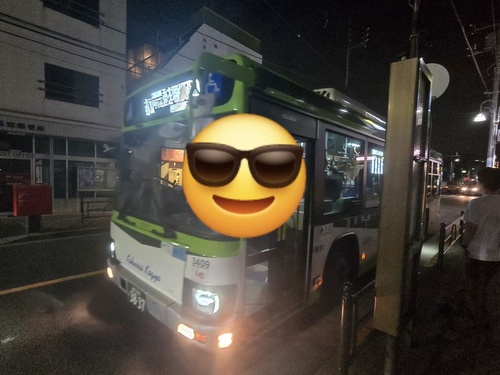


ユウマボウズ
@Gc5RLsVaaV12052
お風呂の後は食事
コラボフード全てとちさたきのドリンクをいただきました。
どれも美味しかったです！
#リコリコ
#庭の湯 x.com/Gc5RLsVaaV1205…
Torishima / INTPさんがリポスト
>アニメーション制作：パッショーネ
あっ…ハイ…
>もちづきさん
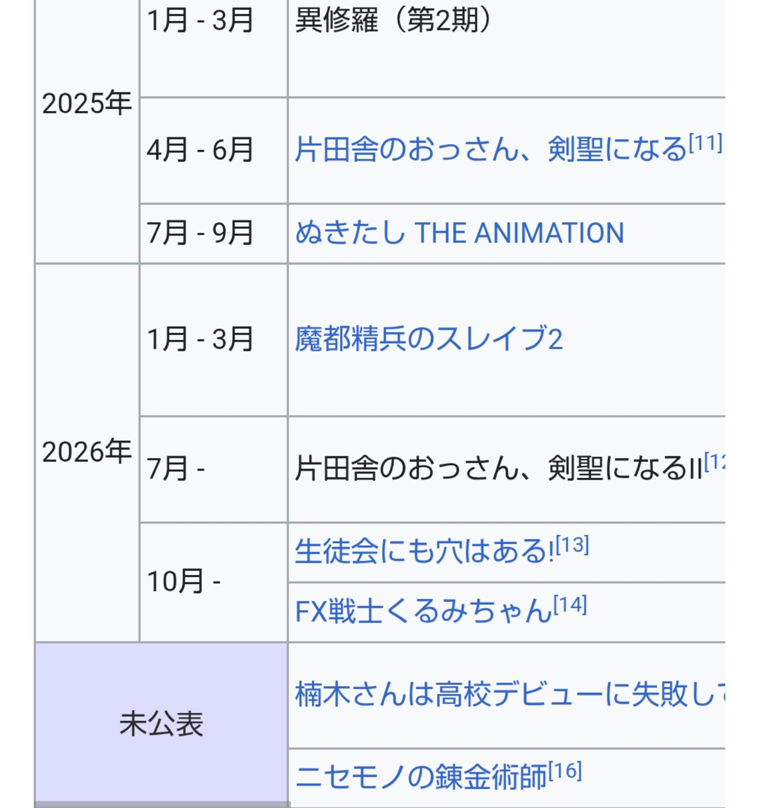
地獄の2週間負債回収アニメ視聴をしているためTwitterが使えない
小学館、相賀社長3カ月の報酬50%減額 「マンガワン」問題で
https://
nikkei.com/article/DGXZQO
UC044ZK0U6A800C2000000/?n_cid=SNSTW005&n_tw=1785823148
…
第三者委の報告書によると、小学館は過去に性犯罪で有罪判決を受けた漫画家を別名義で起用。編集部は経緯を把握していたものの、起用にあたって十分に検討していなかったといいます。
小学館、相賀信宏社長3カ月の報酬50%減額 「マンガワン」問題で
【雑談】ゲームしながら / ニコ生配信中

【雑談】ゲームしながら
Torishima / INTPさんがリポスト
Localで動画生成やら画像生成やらLLMやらを動かしまくってる人が爆増してるようなので念のため忠告しておきますが、
＿人人人人人人人人人人人人人人人人人人人＿
＞ PCを冷蔵庫にぶち込まないでください ＜
￣Y^Y^Y^Y^Y^Y^Y^Y^Y^Y^Y^Y^Y^Y^Y^Y^￣
(結露、連続排熱負け、食品ロス...etc)
8月7日の立秋が目前に迫ったタイミングで、梅雨前線が南下して不明瞭化したのでこれ幸いと東北地方も梅雨明けさせたか。あまり夏空感はないけど…確定時にどう判断されることになるかな？
https://
bioweather.net/chart/pressure
.htm
…
https://
data.jma.go.jp/yoho/data/jish
in/kaisetsu_shukan_latest.pdf
…
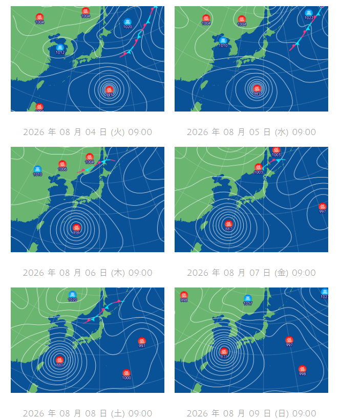
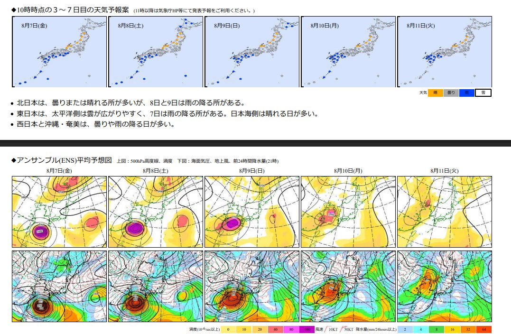
そろそろこづかい万歳もアニメ化されんかね
2027年発売予定『バイオハザード RE:ベロニカ』ウィッシュリスト登録数が200万件突破！
https://
gamespark.jp/article/2026/0
8/04/170203.html?utm_source=twitter&utm_medium=social&utm_content=tweet
…
久々にじっくりランニングできて満足〜〜〜〜〜〜
うわ、これアニメになるんか！

ドカ食いダイスキ！ もちづきさん公式
@dokaguidaisuki
「ドカ食いダイスキ！ もちづきさん」
TVアニメ製作決定！！！！！！！！ x.com/dokaguidaisuki…
有明にテレ朝がエンタメ施設を作ったから、その関係でイベントやるということか。てか、神輿作ったなら、有明も富岡八幡の氏子なんだし、神輿連合渡御に町会神輿出せばいいのに。
海風渡御～富岡八幡宮 有明初巡幸～｜テレビ朝日・六本木ヒルズ SUMMER FES｜今年は六本木と有明2会場で開催！｜テレビ朝日
最大12人で広大なオープンワールドを冒険。協力型パズルアドベンチャー「Big Walk」が本日リリース
https://
4gamer.net/s/G075961.2608
04049
…
「Untitled Goose Game 〜いたずらガチョウがやって来た！〜」などで知られるHouse Houseの新作
Torishima / INTPさんがリポスト
これほんと皮肉だよな
Seedance 2.5はリファレンスに忠実になり最大30個くらいまではほぼ正確に参照して出力できるけど、
あまりにも参照精度が上がりすぎて渡しているリファレンスに引っ張られすぎて、出力の自由度が低下してしまうって話
NOBU
@nbykos
Seedance2.5はディレクター能力を低下させたのかと思ったけど全然そんなことなかった。むしろ向上している。演出お任せでも普通に機能する。
では何が邪魔しているのかというと、参照である。
三条通りのアーケード前で待ち合わせな。
東向の入口で。
卑屈な奈良県民bot【小説『奈良千夜一夜物語』好評発売中！】
@nntnarabot
奈良民ワイ「三条言うたら普通は近鉄奈良駅前やろ（半ギレ）」
Torishima / INTPさんがリポスト
やば！H3ローカルモデルをGoogle Colabで動かしたんだけどコスパで言ったら完全に最強クラス
■15秒あたりコスト
MiniMax H3／Google Colab L4
約720p
約€0.23
1.0倍
MiniMax H3／公式API
768p
$1.20 ≒ €1.04
約4.5倍
Seedance 2.5／公式API
720p
約¥14.91 ≒ $2.28 ≒ €1.98
約8.6倍
Torishima / INTPさんがリポスト
漫画の制作や宣伝をアシストしてくれた方々
お声がけしていただいた企業様方
もちづきさんを読んだり興味を持ったりしてくれた方々
支えてくれた全ての皆様に最大級の感謝を！
Torishima / INTPさんがリポスト
「ドカ食いダイスキ！もちづきさん」ですが、この度アニメ化させていただくことになりました。
数年前なら夢にも見なかったような光景です。
Twitter（旧）にモソモソと変な漫画を上げたり、白泉社に行ったり、
もちづきさんを描いたりして本当に良かった。
住友重機械、造船用クレーン5割増産 政府の建造量倍増計画で需要
住友重機械、造船用クレーン5割増産 政府の建造量倍増計画で需要
輿水畏子さんがリポスト
暑いね
#kmnzart
#みてっテナ

Pが増えてきたけど「生徒会にも穴はある」は西藤社長がPなんだろうなという予想はある（エッチなのは主導でやりそうという偏見）
海賊島建設ストラテジー『Corsair Cove』発売から3日で売上10万本達成！流れ着いた無人島をお上に負けない要塞へ
https://
gamespark.jp/article/2026/0
8/04/170202.html?utm_source=twitter&utm_medium=social&utm_content=tweet
…
Steaｍでのレビュー数は1200件近くに達し、建築や資源管理のゲームバランスやクオリティを中心に高評価レビューを集めています。
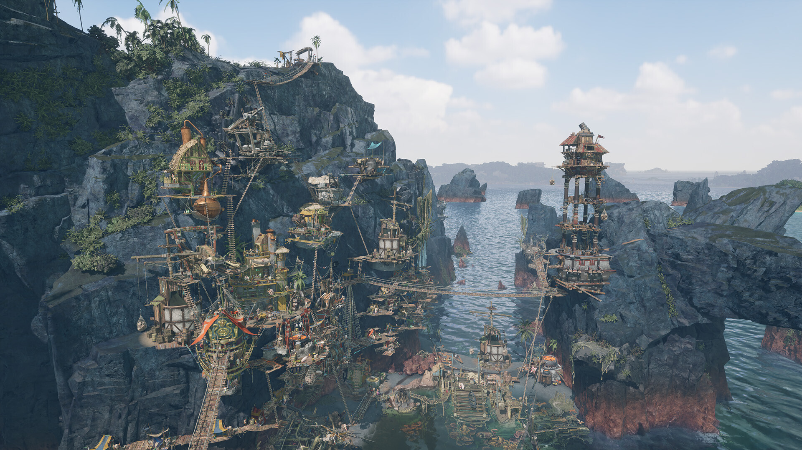
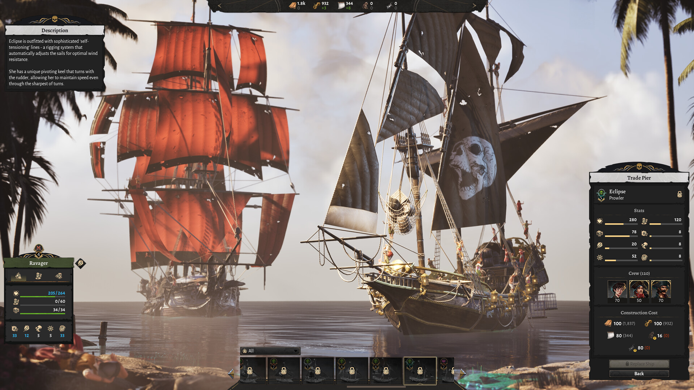
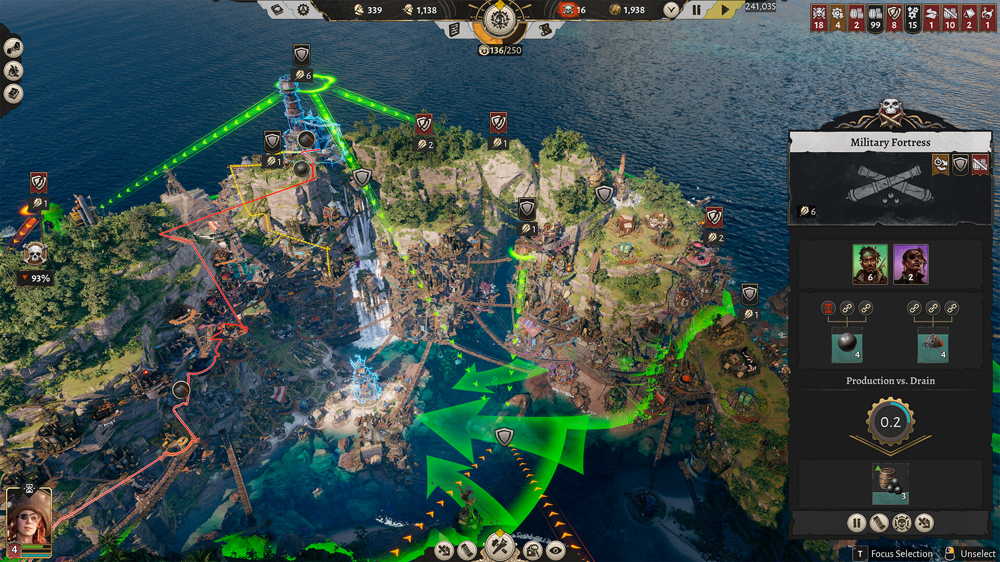
キルケーの魔女、外国版の英語吹き替え予告、日本版とだいぶ見せ方が違いますね（本編未見の方はネタバレ注意）。お国柄？ 英語版も見たいなあ・・・。
Netflix Anime
@NetflixAnime
ハサウェイが世界を正す使命は続く。
MOBILE SUIT GUNDAM HATHAWAY ニンフ・キルケの魔術が8月31日にNetflixで配信開始。
貝さんさんさんがリポスト
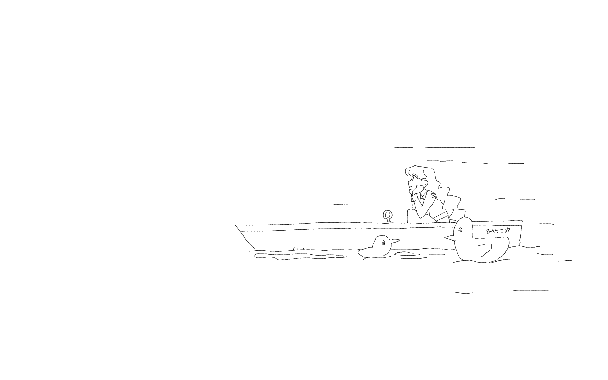
夏コミ新刊『戦艦の砲台 ～海から陸へ！レーザー測量で蘇る巨大地下空間・壱岐要塞の全貌』裏表紙。
生月砲台は弾薬庫の上に観測所を設けるタイプで、更にもう1つ観測具室を増設したようになっていてめちゃくちゃかっこいいんですよね。主観測具室は爆破され廃墟になったプラネタリウム感あります。
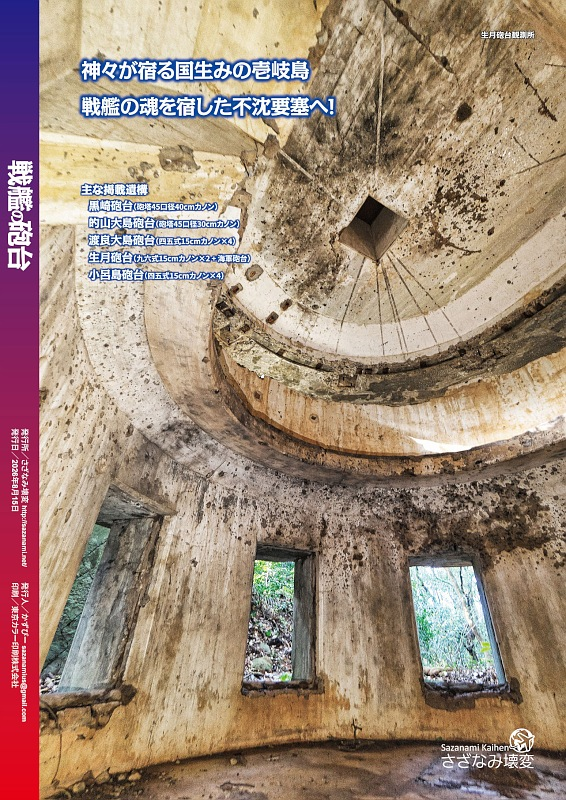
輿水畏子さんがリポスト
ミリアちゃん #まのさば二次創作
Torishima / INTPさんがリポスト
もちづきさんのアニメ化決定よりも、「え、もちづきさん始まって2年以上経ってるの？」という戸惑いの方が大きい
これは抜け漏れが多すぎる Claude と比べると明確な長所でもあるが、人間様的には有能だから見逃してるだけでイライラする形で体験としては良くないのと、/goal で走らせてると数時間トークンをとかしながら本質を見失っていることが度々あっだな・・・
パッショーネ、3か月連続新作発表。おそらく来年はこの３作かな。
「台本通りの展開は何一つなく、最も笑える瞬間は仕込もうにも仕込めなかったものだ」海外レビューハイスコア『Big Walk』
https://
gamespark.jp/article/2026/0
8/04/170201.html?utm_source=twitter&utm_medium=social&utm_content=tweet
…
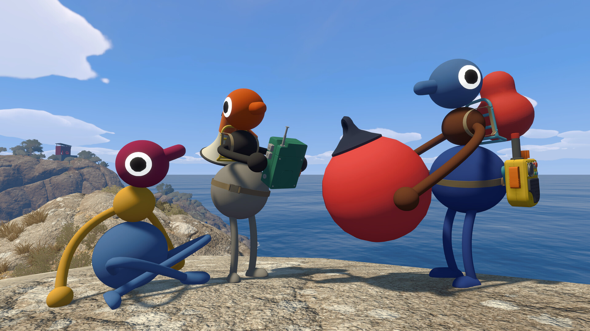

GPT-5.6 Sol も結局発達障害 ASD すぎるんだよな、根本的にデリカシーが皆無で技術的な正確性・厳密性に強く固執して人間様が求めている大局を忘れてネチネチネッチネチトークンを溶かし、挙げ句の果てに品質だけを目的関数にして論理的正論で殴ることが正義だと思い込んでいる節がある
Torishima / INTP
@izutorishima
AI で AI を錬成する場合、複数のフロンティア LLM に仮説を反証させて MAGI システムさせると抜け漏れや甘いところを潰せてめちゃくちゃいいな
貝さんさんさんがリポスト
制作会社はパッショーネ
今後放送予定も含めた制作実績
・異種族レビュアーズ
・ぬきたし
・生徒会にも穴はある
・FX戦士くるみちゃん
・ドカ食いダイスキもちづきさん
誰かこの会社を止めてくれ…
パッショーネ、最近のSNSにおける話題作のアニメ化発表が続く印象。
企業のリース品ですら超絶テキトーな梱包で返却する人がいるのを見てるので、個人への貸与品を利用者側負担で梱包・返却させると、酷い状態で返却されそうな気がするけど な。再利用なんてしないだろうから、別にいいのかもだけど。
「ファイナルファンタジーXIV」Switch2版，本日発売。リリースから約1か月間はサービス利用料金が無料。コンプリートパックもセール価格に
https://
4gamer.net/s/G100259.2608
04048
…
発売を記念して8月12日23：59までコンプリートパックが30％オフで購入できる
「ファイナルファンタジーXIV」Switch2版，本日発売。リリースから約1か月間はサービス利用料金が無料。コンプリートパックもセール価格に
昨日からのSNSの宣伝の話
つば二郎@きいちゃんすこすこ侍さんがリポスト
＼もちづきさんアニメ化／
「#ドカ食いダイスキ！ #もちづきさん」
【TVアニメ製作決定】トクベツ編
ヤングアニマルWebにて公開されました！
何杯でもどうぞ！
ドカ食いダイスキ！ もちづきさん・【TVアニメ製作決定】トクベツ編 | ヤングアニマルWeb
もちづきさんアニメ化、TOHOがサプライズ的にやるかと思ったら割と各所におわせしてたので、サプライズ感はなかったような気も（せっかくならもっとサプライズ的にやっても良かったのではとは思う）＞RP
「ダメージ本」という扱いであれば再販制度下でも半額販売が可能なのか。再販制度は本屋にとって値引き競争を防ぐメリットがあるのか、いくらでも値引きできる電子書籍に対する足枷なのか、どうなんでしょうかね。
「中国軍がDeepSeek製AIを無人航空機に活用」「時速50kmの軍用車両にも搭載」 きょう公開の防衛白書
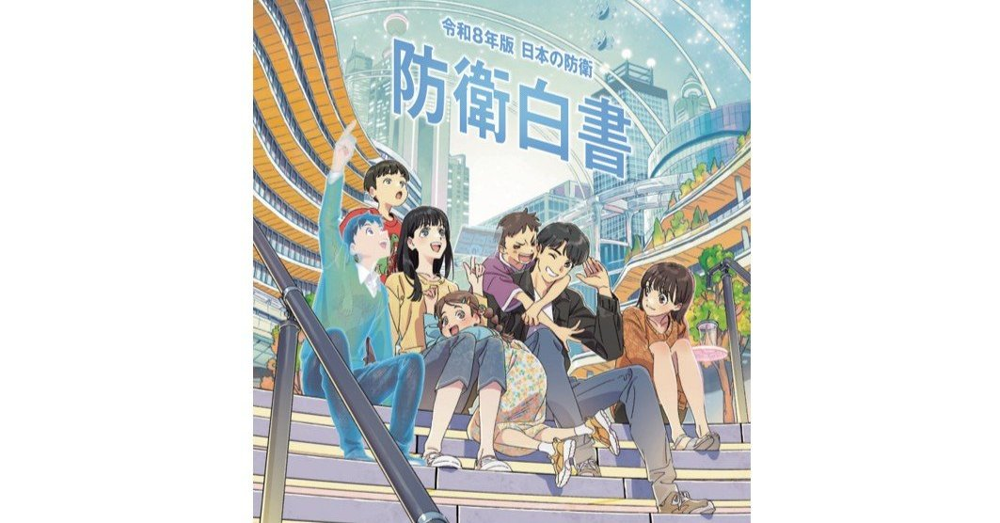
「中国軍がDeepSeek製AIを無人航空機に活用」「時速50kmの軍用車両にも搭載」 きょう公開の防衛白書
なんと…
CODEXは正確な言い回しと、透明性に対するトレーニングのせいで、小説をかかせたときの「言わんでも良いネタバレ、時系列を無視した秘密の開示」を行う。
【速報】『ドカ食いダイスキ！もちづきさん』TVアニメ化決定！ #漫画・アニメ等
【速報】『ドカ食いダイスキ！もちづきさん』TVアニメ化決定！ - オレ的ゲーム速報@刃の記事ページ
jin115.com
Torishima / INTPさんがリポスト
『ドカ食いダイスキ! もちづきさん』
TVアニメ製作決定！
#まるよのかもめ 先生描き下ろし
アニメ化お祝いビジュアルが到着
アニメーション制作：パッショーネ
#もちづきさん #ドカ食いダイスキ
つなまよさんがリポスト
「ドカ食いダイスキ！ もちづきさん」
TVアニメ製作決定！！！！！！！！
ドカ食いダイスキ！ もちづきさん公式
@dokaguidaisuki
あと…１日！！！！！！！！ x.com/dokaguidaisuki…
地獄めぐり×競輪擬人化IPプロジェクト「地獄降輪」，龍巻（CV：森久保祥太郎）の誕生日を記念したグッズ販売や特別配信を実施
https://
4gamer.net/s/G101096.2608
04040
…
このほかにも，オフィシャルグッズの先行受注販売が開始された。地獄降輪のオリジナルブロマイドも登場している
争奪戦になりそう……！
「まさかの本物…？」 映画「ちいかわ」“予想を越える新特典”に「ナガノ先生の本気」「ちいかわしかできない所業」「さすが」
（記事URLはリプから）
「まさかの本物…？」 映画「ちいかわ」“予想を越える新特典”に「ナガノ先生の本気」「ちいかわしかできない所業」「さすが」（1/2） | 音楽 ねとらぼ
「アナザーエデン ビギンズ」，Switch2 / Switch向けダウンロード版の予約受付を開始。東京ゲームショウ2026への出展も明らかに
https://
4gamer.net/s/G098193.2608
04036
…
DLC「追加キャラクターパック」Vol.1＆2とシーズンパスが，ゲーム本編と同時にリリースされる
“開幕天和”も披露！脱衣麻雀『スーパーリアル麻雀 Venus Returns』「ショウ子」新3Dモデル初公開
https://
gamespark.jp/article/2026/0
8/04/170200.html?utm_source=twitter&utm_medium=social&utm_content=tweet
…
なるせひろのりさんがリポスト
╭━━━━━━━━━━━━━━━╮
『ドカ食いダイスキ! もちづきさん』
TVアニメ製作決定
╰━ｖ━━━━━━━━━━━━━╯
まるよのかもめ先生描き下ろし
アニメ化お祝いビジュアル公開
アニメーション制作：パッショーネ
#ドカ食いダイスキ
#もちづきさん

【アイマイ、クライ（オリジナルカクテル）】
スーズ 30ml
サザンカンフォート 15ml
グレナデンシロップ 1tsp
ライム 1/4~1/6cut
ジンジャエール fullup
スティルインラブの「愛舞い、喰らい。」のイメージカクテルです。
エナジードリンク味を再現しました。
後ろのフリオーソは気にしないで下さいw
Torishima / INTPさんがリポスト
これがわかっていたから、会社ではできるだけ多くの人がAIを当たり前のように使えるように頑張って教育した
一人では自分の仕事が増えるだけだが、まわりの100人を効率化できれば自分の仕事の増加量が相対的に減るから
ニケちゃん
@tegnike
ほんこれ過ぎて涙
労働への解像度が低かった x.com/hayakawagomi/s…
家系アプリ、あれだけバズっててGCPの月間費用が10万ちょいは個人だとキツいけど、法人なら全然運営できそうな規模だなーと思ったら、Google Maps APIだけの値段!? これは厳しいな…
一挙両得。クリーンな水素エネルギーはプラごみリサイクルで作れる
一挙両得。クリーンな水素エネルギーはプラごみリサイクルで作れる | ギズモード・ジャパン
ド平日のきままクラフト
メルセデス、米販売禁止の恐れ 上院委が「つながる車」対中規制法案 (FT)
[FT]メルセデス、米販売禁止の恐れ 上院委が「つながる車」対中規制法案
ポン☆潤々さんがリポスト
【作戦準備中】
第365回「GOALOUS5のGO5（ゴーゴー）チャンネル」は、
明日5日17時を予定しています。
ゴーラスブルー・熊谷健太郎、ゴーラスグリーン・小松昌平が悪の相談にお答えるするため
『れでぃお新選組』をお届け！
#GO5
貝さんさんさんがリポスト
水圏生物科学でウイルスが出てくるとそういう話だよなあ（いわゆる巨大ウイルス、真核生物の進化の起源の鍵を握る）そしてこのウイルスの形はララの恋の光に似ている。#さよならララ


会月紗衣
@ezuki3401
京都理科大学……モデルどこだろうな。生命科学系を置いてるところだと京都産業大学か京都府立大学、あるいは名前的に東京理科大学か（水圏生物科学も扱ってる） #さよならララ
由羽@レモンアイコンの人さんがリポスト
【お知らせ】
こちらのアカウントの主であります谷村要が8月2日に永眠されました。6月末にガンが発覚し、あっという間となりました。
通夜、葬儀ともに家族葬にて無事終わりましたのでこちらにて一括で大変申し訳ないのですがお知らせさせていただきます。
テスラさんがリポスト
せんちひ！

俺も26歳で大腸がん見つかって落ち込んだけど、この通りピンピンしているぞい！
毎年人間ドック受けてるけど
エンドスさんがリポスト
この投稿は興味深い。
内容自体はWSJも報じています。
ベッセント米財務長官がFRBに求めているのは、FIMAレポ・ファシリティの利用上限の拡大です。
この制度を使えば、日本は保有する米国債を市場で売却せず、担保にしてドルを調達し、そのドルを売って円を買うことができます。


Coin Bureau
@coinbureau
速報：財務長官スコット・ベッセント氏が、米財務省の介入が通貨の安定化に失敗した後、連邦準備制度理事会（FRB）に日本円の防衛を支援するよう促している。
Torishima / INTPさんがリポスト
それぞれ認知傾向が違うので、ClaudeとGPTだけでも効果がかなりある
Torishima / INTP
@izutorishima
AI で AI を錬成する場合、複数のフロンティア LLM に仮説を反証させて MAGI システムさせると抜け漏れや甘いところを潰せてめちゃくちゃいいな
【ついに本日】ポケモン開発会社による完全新作『ビースト・オブ・リンカネーション』8月4日発売！
→【Amazon】
https://
amzn.to/4vZtErj
ゲームフリークのイメージを大きく覆す、一人と一匹の完全新作ダークアクションRPG！
ローポリオープンワールドサバイバル『The Apocalypse（黙示録）』建築システムの開発状況示すトレイラー公開。発電機を繋いで拠点を便利に
https://
gamespark.jp/article/2026/0
8/04/170199.html?utm_source=twitter&utm_medium=social&utm_content=tweet
…
PvEゲームプレイに重点を置いて開発されている本作ですが将来的にはPvPモードも提供される予定を明かしています。
エンドスさんがリポスト
＼8/21(金)#片渕須直 監督登壇決定／
当日は現在制作中の『#つるばみ色のなぎ子たち』についてのお話も聞けるかも
貴重な機会を、ぜひお見逃しなく！
詳細は劇場HPでご確認ください
https://
demachiza.com/movies/19699
出町座
@demachiza
高畑勲監督の2013年傑作にして遺作となった『かぐや姫の物語』上映に際し、現在、日本最古の「随筆」である『枕草子』の時代を描く映画『つるばみ色のなぎ子たち』を現在製作中の片渕監督に、日本最古の物語とされる『竹取物語』を映画化した『かぐや姫の物語』についてお話しいただきたい、という趣向
この年齢でステージ3ならそこまで絶望する必要ないよ
リンパ節転移が見つかった状態でしょ
半年ちょい治療に専念して、他臓器への転移再発が無ければまた元気に自転車乗れるよ！
頑張って！
Polymarket Japan
@polymarketjapan
【話題】総資産7億円有名投資家 桐谷さん大腸がんステージ3公表
・自転車でビュンビュン飛ばして走っていましたから、自分に寿命があるなんて思っていなかった
・「意地を張らずに、もっと現金を使ってご馳走を食べたり、温泉にでも行ったりすればよかったな」と後悔を語った
「クビになった解体屋のおっさん、深夜の S 級素材解体配信が人類最強に見つかる」
https://
ncode.syosetu.com/n3087mj/ も最新話まで読んだ。
これも上と同じ作者さん。物語の構造は同じだが、上に比べるとやや構成が甘いかな。
クビになった解体屋のおっさん、深夜のS級素材解体配信が人類最強に見つかる 〜まかない飯を出してたら、俺を切った大手クランが勝手に曇っていく〜
日本経済新聞 電子版（日経電子版）さんがリポスト
マンモスの骨やナチス軍艦が露出 欧州熱波、ドナウ川が歴史的渇水

マンモスの骨やナチス軍艦が露出 欧州熱波、ドナウ川が歴史的渇水
なろうで "S 級探索者を 5 人育てたら全員に独立された中年コーチ、暇つぶしの初心者講座配信が「人類の攻略常識」を書き換え始める"
https://
ncode.syosetu.com/n3823mj/ を最新話まで読んだ。
AI を利用しているらしいが、致命的な破綻はなく普通に面白かった。どのくらい AI か知らぬが、ここまでできる時代か
S級探索者を5人育てたら全員に独立された中年コーチ、暇つぶしの初心者講座配信が「人類の攻略常識」を書き換え始める 〜教え子たちが「先生の本当の価値」に気付いて騒ぎ出すまで、あと3日〜
初めてMMDにMME入れて画きだしてみましたが
MMEを使う理由がよく判る これだけ違うんやねぇ
（デフォルトとMME使用はライティングも違いますが）
まだまだチンプンカンプンな所ばかりですがボチボチ覚えて行こうと
背景は（シロロウ様の重音テト「まだ熱い」）を使っています
ありがとうございます
#アイナさんは無理ゲーだと思ったから申し込みしなかった
#トゲナシトゲアリ
事故って終わったと思ったけど偉丈夫回避できて勝った
コンバイル時Doomかー
吉野@連邦(renpou.com)
@yoshinokentarou
大名作『Doom』が、まさかの「C++コンパイラ」に勝手移植!!
本作はconstexprを利用し、コンパイル中に「Doom」の処理を実行するという、かなり異次元寄りの作品
実行ファイルで「Doomを動かす」のではなく、コンパイラが「Doomの計算をする」という発想が凄いッッ!!
https://
github.com/Talkative-Bana
na/Constexpr-Doom
…
ヴェーロお姉ちゃんがえっちすぎます、本当にありがとうございます
トウカイのクマさんがリポスト
花海咲季の元部活仲間の話 ①
※STEP3のネタバレ含みます
“初めてのキス”や“最後の朝”，誰かの記憶を買い取って別の客へ販売する。物語主導型の店舗運営シム「Halsey Row」が発表に
https://
4gamer.net/s/G103033.2608
04044
…
25種類のエンディングを収録。そのうち1つだけが，事件の全貌にたどり着く結末だ
藤崎台球場のところだね。
株式会社国際地学協会
@union__map
ここはどこでしょうか。
地形図クイズ119
ここにある お城 はどこでしょう
前回のこたえは、
志賀島（福岡県）です。
#地形図クイズ #地図クイズ
低価格PCも快速に。メモリ高騰でWindowsがダイエットを決断
低価格PCも快速に。メモリ高騰でWindowsがダイエットを決断 | ギズモード・ジャパン
弾が出ないから自宅で撃っても許される。音と反動でリアルを追求したバーチャル射撃ゲーム BuyPR
弾が出ないから自宅で撃っても許される。音と反動でリアルを追求したバーチャル射撃ゲーム | ギズモード・ジャパン
人気ゲーム「AIチャットアプリ作りました！ただし、クリエイター様にリスペクトして生成AIは使わず、収益は絵師や声優に還元」→◯◯の人たちがブチギレて大炎上 #ゲーム業界
人気ゲーム「AIチャットアプリ作りました！ただし、クリエイター様にリスペクトして生成AIは使わず、収益は絵師や声優に還元」→◯◯の人たちがブチギレて大炎上 - オレ的ゲーム速報@刃の記事ページ
jin115.com
「デジタルの筆」を教育で活用 Z会の増進会HD、ワコムと共同実証
https://
nikkei.com/article/DGXZQO
CC043O90U6A800C2000000/?n_cid=SNSTW005&n_tw=1785840095
…
ワコムが開発中のデジタルの筆は、デジタルペンの技術を応用。筆圧や筆の動きを専用ソフトウエアで記録し、アナログの筆の描画を再現します。
増進会HD、「デジタルの筆」を教育で活用 ワコムと共同で実証開始
プレイヤー500万人突破の中国発ソウルライク『明末：ウツロノハネ』続編では主人公が続投。「無常」の物語はまだ終わっていない
https://
gamespark.jp/article/2026/0
8/04/170198.html?utm_source=twitter&utm_medium=social&utm_content=tweet
…
佐々木俊尚＠「フラット登山 日本を歩く旅60」発売3週間で増刷決定！さんがリポスト
晩ごはんはぁ〜、ウンパイロウ。いつもはサラシ玉ねぎだけど今日は塩揉みだって。トマトと卵の炒め物。甘味が良いアボカド、サーモン、きゅうりのサラダ。ぶ、お蕎麦。十割蕎麦。オクラ、茗荷、紫蘇たっぷり。 #名もなき料理

小さな家庭菜園から始まる農業シミュレーション「Tiny Eden」，9月7日にリリース決定。作った野菜で料理も作れる
https://
4gamer.net/s/G103035.2608
04045
…
作り上げた野菜や料理を売って収益を得て，農園をアップグレードしよう
なるせひろのりさんがリポスト
手羽先は関節の端っこを取ると簡単に食べれるしみんなで大量に食べると楽しいし美味いんだよ
昔から許可の必要なエリアに許可取らず飛ばしてた形跡のある写真が公式サイトにあったなぁ。那覇市役所の屋上をドローンで撮ったやつ。当時は市役所の屋上は那覇空港の水平表面の上に出てた。あと、風に煽られて那覇新港の近くでドローンなくしたよねw
阿部岳 / ABE Takashi
@ABETakashiOki
地図を見てほしい。沖縄島の中部は基地が集中し過ぎて、ドローン飛行禁止のレッドゾーンとイエローゾーンで塗りつぶされている。
建設現場の測量にも、ウェディングフォトにも、ドローンを使えない。これも日本が沖縄に押し付けている基地被害の一つ。
貝さんさんさんがリポスト
本気で人間を憎んでいるなら大学教授のような社会的地位の高い仕事にはつかないし、見学に来た子供たちをこんな目で見守ったりもしないし、HOPカード作って平和堂でお買い物もたぶんしないので、リサの人間への恨みは「私怨」ではなさそうな気がする。 #さよならララ

空気電池っていう電池はあるが
空気抵抗っていう(空気を構成要素にした)抵抗(部品)はないか
プロモ凝ってて草 何のアニメやろなあ
「ヤングアニマルZERO」「ヤングアニマルWeb」（白泉社）にて連載中の『ドカ食いダイスキ！ もちづきさん』（著者：まるよのかもめ）。...
youtube.com
エンドスさんがリポスト
氷川町の監査委員が「一般避難者のふり」をして高市首相におべんちゃら。これ、行動としても大問題ですよ。
例外的に恵まれた環境から、政府の対応が「いたれりつくせり」などと無責任に言うのは、水も電気もクーラーもない他の避難所のひどい実情から目を逸らす行為だから。
まき｜『逃げて参ります』MV制作者
@oyamada_maki
【ヤラセ高市政権】被災地の意見交換で「日本人として本当に良かった」と述べた島田さんは行政の人間だった
避難所にいる方の中から5人を選び、校長室という密閉空間での意見交換というだけでも、高市政権の異常性が限界突破しています。
『ファイナルソード』開発元が新作についてコメント！より良い形で届けられるように着実に開発中
https://
gamespark.jp/article/2026/0
8/04/170197.html?utm_source=twitter&utm_medium=social&utm_content=tweet
…
【#実写 #雑談 同接７０人でコスプレ解禁【#ピオニーちゃんねる #vtuber / #個人Vtuber 】
https://
youtube.com/live/kClasbSaL
Tg?si=RlfZAyTTBQbVf13F
…
@YouTube
より
@peony0511
**❁｡ﾟ *❁｡ﾟ❀｡*。❀ﾟ*❁ﾟ*❁｡ﾟ。*❀｡ﾟ。◆ドネル◆https://doneru.jp/pionihuausagi...
youtube.com
お風呂の後は食事
コラボフード全てとちさたきのドリンクをいただきました。
どれも美味しかったです！
#リコリコ
#庭の湯
ユウマボウズ
@Gc5RLsVaaV12052
ここは温泉だけでなくプールもあるので、両方体感してきました。
水着着用でのアウフグースを浴びてからの冷まし湯が気持ち良すぎました。
温泉も温まりやすく、さっぱりしました。
庭園もあり、散歩しながらの外気浴も良かったです。
パネルは館内と庭園内に置かれていました。
#庭の湯
#リコリコ x.com/Gc5RLsVaaV1205…
最近新聞社の間でドパガキ向け花火動画流行ってるの？
まさか新潟日報がフェニックスでやるとは思わなかったけど…
新潟日報ニュース
@niigata_nippo
涙誘う名物花火「フェニックス」10倍速の動画に ビジュアルで振り返る【長岡花火2026】 日中「履いてますか」コールも
https://
niigata-nippo.co.jp/articles/-/881
876?utm_source=twitter&utm_medium=social&utm_campaign=twitter_dp
…
エンドスさんがリポスト
高畑勲監督の2013年傑作にして遺作となった『かぐや姫の物語』上映に際し、現在、日本最古の「随筆」である『枕草子』の時代を描く映画『つるばみ色のなぎ子たち』を現在製作中の片渕監督に、日本最古の物語とされる『竹取物語』を映画化した『かぐや姫の物語』についてお話しいただきたい、という趣向
自分でこれを課してしまっているマン………（やれてしまうのでやらない理由がなくなるやつ）
ニケちゃん
@tegnike
ほんこれ過ぎて涙
労働への解像度が低かった x.com/hayakawagomi/s…
【C108 夏コミ】
新刊「戦艦の砲台 壱岐要塞」サンプルです！
夏と言えば離島！砲台！巨大地下廃墟！
B5サイズ
オールフルカラー
68ページ
Webカタログリンク
8/15土 東3 ヤ-11b さざなみ壊変
https://
webcatalog.circle.ms/Circle/23004421
8/16日 東2 ノ-21b さざなみ壊変ω
https://
webcatalog.circle.ms/Circle/23004395
いちかわの赤魚の煮付けではあるが、僕の頭だと、赤魚=金目=スケベ魚に自動的に変換される
道の駅「笹川流れ」の奇跡の夕日は一見の価値あり
「日本海にこんな美しい場所があったのか…」新潟の“絶景道の駅”に圧倒！ 空と海が染まる大パノラマ、JR駅直結で列車でも行ける
（記事URLはリプから）
「日本海にこんな美しい場所があったのか…」新潟の“絶景道の駅”に圧倒！ 空と海が染まる大パノラマ、JR駅直結で列車でも行ける（1/2） | 新潟県 ねとらぼリサーチ
Torishima / INTPさんがリポスト
「ヤングアニマルZERO」「ヤングアニマルWeb」（白泉社）にて連載中の『ドカ食いダイスキ！ もちづきさん』（著者：まるよのかもめ）。...
youtube.com
【あっ】『みいちゃんと山田さん』作者のインタビュー記事、続々と削除されてしまう・・・ #漫画・アニメ等
【あっ】『みいちゃんと山田さん』作者のインタビュー記事、続々と削除されてしまう・・・ - オレ的ゲーム速報@刃の記事ページ
jin115.com
なるせひろのりさんがリポスト
新商品
『映画ちいかわ 島二郎のでっかいソフビフィギュア』
4,950円(税込)
ぶあつい肉の鎧、ゆるがぬ魂のおもてなし
約15cmの 信頼感
#ちいかわマーケット にて
8/7(金)11時発売
#映画ちいかわ グッズ詳細はリプライをCHECK


3日前にフォロワーが送ってくれたリプライを見逃していたことに気がつき、一度いいねを押してやっぱり取り消してなかったことにする。こうやって今の俺がある。
最大12人で倒しまくるPvE「Horde Siege」モード製品版は3マップ用意―屈強なキャラが戦う暴力TPS『Gears of War: E-Day』OBTのFAQ公開
https://
gamespark.jp/article/2026/0
8/04/170196.html?utm_source=twitter&utm_medium=social&utm_content=tweet
…
1週目はゲーパスユーザーなど参加可能。2週目は誰でも参加できる。プランBでいこう。
#ガルクラ
／
期間限定SS<レゾナンス>
[泰然たる狩人]成瀬ヒカリ 登場！
＼
19Aのもつ特殊な属性「虚」が新たに登場。全元素属性として扱われる。
固有アビリティ【没入】で、スキル攻撃に雷・光・闇属性を選択し付与 & EXスキルの効果が変化！
▼実機プレイで見る
https://
youtu.be/v7bipqH5ais
#ヘブバン
かけ恋は主人公がヒロインに配慮しているとこだけ見ていると勘違いするけど、そもそもがずっとデリカシーがないし、そのデリカシーのなさにヒロインが救われている作品だということを踏まえて欲しい。
まちのりだけじゃなくてドコモバイクシェア全体が死んでるのか
【20周年アンケート】ギズモードとYouTubeとテクノロジーと脳汁と
【20周年アンケート】ギズモードとYouTubeとテクノロジーと脳汁と | ギズモード・ジャパン
ソフトバンク、「AI経済圏」へ提携攻勢 セブン出資で小売業にも足場
ソフトバンク、「AI経済圏」へ提携攻勢 セブン出資で小売業にも足場
日本三大バカユースだねぇ。
ニッポン街歩き紀行
@ZO9Ct96MtT8GACM
日本最北限のカルト教団が有ると聞いたんだけど、何処だか分からなかった。
なるせひろのりさんがリポスト
へずまりゅう市議、熊本の山道で崩壊したソーラーパネルを発見
Grok「太陽光パネルは架台が壊れたり傾いたりしていても、パネル自体が破損しておらず光が当たっていれば直流電気を発電し続けます。
へずまりゅう
@hezuruy
これはヤバい。
熊本の山道でソーラーパネルが。
危ないので早く撤去されて下さい。
メガホンで叫びながら羊を誘導する最大4人協力ゲーム「SHEEPSTERS」が発表に。アナウンストレイラーを公開
https://
4gamer.net/s/G103032.2608
04041
…
さまざまな障害を乗り越えて，できるだけ多くの羊を家に連れ帰ろう
熊本に派遣した部隊から逐一状況報告
福岡に着きました
熊本に着きました
現地に着きました
37℃です
電気がありません
これはキツい
大企業の設備投資計画、中東緊迫でも2割増 政投銀の26年度調査
大企業の設備投資計画、中東緊迫でも2割増 政投銀の26年度調査
花に風のMV視聴
最高すぎる
これだよこれ！！！！！
『白猫』『モンスト』の異世界ヒーローたちが集うパーティロイヤル『フェスバ+ ～FESTIBATTLE～』11月11日サービス終了―終了まで感謝のデイリーミッション実施
https://
gamespark.jp/article/2026/0
8/04/170194.html?utm_source=twitter&utm_medium=social&utm_content=tweet
…
『ふつつかな悪女ではございますが』アニメ見て原作を読みたいと家族が言うから「なろう」にあるよって言ったら本編は2021年に「出版社と相談して」削除してたのか。一迅社もアルファポリスみたいに書籍化したらweb削除させるタイプの出版社だったってこと…？
輿水畏子さんがリポスト
#まのさば二次創作
水着アリサちゃん (ケモミミ添加)

為替介入3日間で推計12兆円規模 行きすぎた円安構造、変化の兆し
為替介入3日間で推計12兆円規模 行きすぎた円安構造、変化の兆し
外国人への生活保護 まさかの日本全体と同水準で支給していた
外国人への生活保護 まさかの日本全体と同水準で支給していた : ハムスター速報
「可愛い、かっこいい」とかではなく、こう、この人と一緒なら幸せな人生歩めるだろうな…ってキャラを推し始めた瞬間が、老いの始まりだと気付かされてしまった、ちいかわ映画の島二郎サン……
輿水畏子さんがリポスト
ミリココアンのようなそうでないような

ゲーフリ新作『ビースト・オブ・リンカネーション』賛否両論に 「ポケモンに甘んじてたツケが回ってきた」「神ゲーの素材は揃ってる」 #ゲーム業界
ゲーフリ新作『ビースト・オブ・リンカネーション』賛否両論に 「ポケモンに甘んじてたツケが回ってきた」「神ゲーの素材は揃ってる」 - オレ的ゲーム速報@刃の記事ページ
jin115.com
日鉄、USスチールが1800億円利益貢献 27年3月期の純利益を上方修正
決算:日鉄、USスチールが1800億円利益貢献 27年3月期の純利益を上方修正
フライトレーダー24、羽田の異常接近データを公開 最接近時の垂直間隔は約30メートル
フライトレーダー24、羽田の異常接近データを公開 最接近時の垂直間隔は約30メートル
【2作で9,750円→3,412円】HD-2Dの始祖となるRPG『オクトパストラベラー』シリーズのセールがSteamで開催中！初代と2は最安値を更新
https://
gamespark.jp/article/2026/0
8/04/170193.html?utm_source=twitter&utm_medium=social&utm_content=tweet
…
金曜Tokonのために年休申請した
後はそこまでに仕事いい感じになればいいのだけど
約1ヶ月前に紹介した『PC版 シェンムーIII』を、一人称視点＆VR化するMODはこちら。
最近になって、急にレトロゲームのVR化が始まったような気がしてならない。
吉野@連邦(renpou.com)
@yoshinokentarou
名作『PC版 シェンムーIII』を、一人称視点＆VR化するMODが登場!!
現時点では街の探索や格闘、フォークリフトの運転などをVRで体験可能。
また近日公開予定のVer2.0では、モーションコントロール対応のミニゲームなど、VR化がさらに進められる予定らしいぞッッ!!
https://
codeberg.org/Tensai37/Shenm
ue_3_first_person_with_motion_controls_UEVR_mod/releases
…
テスラさんがリポスト
姫様拷問の時間です2期の円盤が届きましたbox販売だから発売が遅いんですよね
姫様可愛いー！トーチャー可愛いー！・・・クロルがもうヤクネコにしか見えねぇー
エンドスさんがリポスト
「だまされたい人」とまでは言わないけど「批判的に見ることを悪いことだと信じる人」がだまされるのを止めるのは無理に近い
Torishima / INTPさんがリポスト
Codexの結論としては、「いろいろ試したが、ComfyUI-MiniMaxH3_LatentUpscalerは使い物にならないから諦めろ」、とのこと。。。
もしちゃんと使える方法がわかった方いたら教えてください
金のニワトリ
@gosrum
Codex に ComfyUI + MiniMax-H3 の結線作業を依頼したところ、アップスケールされた動画がガビガビになった。
そのため何度かダメ出しをしていたら、動画生成→何コマか画像確認まで自律して行うようになって、このカスタムノード以外も含めて最適化し始めたんだがw x.com/gosrum/status/…
名作『PC版 シェンムー』(1作目)を、一人称視点＆VR化するMODの開発が始まった模様。
一ヶ月前に「PC版 シェンムーIII」をVR化するMODが公開され、次期バージョンの存在も明らかになった事を考えると、こちらのリリースも早いかも?!
https://
youtube.com/watch?v=_b551a
ngSdA
…
Torishima / INTPさんがリポスト
Seedance2.5はディレクター能力を低下させたのかと思ったけど全然そんなことなかった。むしろ向上している。演出お任せでも普通に機能する。
では何が邪魔しているのかというと、参照である。
オリジナルTVアニメ『さよならララ』第6話WEB予告
脚本：青瀬宥介
絵コンテ・演出：小里明花
作画監督：小里明花、谷紫織
リサの経緯が明かされる回になりそう。予告時点でも情報多い。
それにしても小里氏の初コンテ演出回？（個人的にキネマ作品で一番謎多き人物）
第6話「わたしを照らす光」「人魚と人間が愛し合うなんて許さない」ララの姉・リサには並々ならぬ人間への恨みがあった。リサとしもべの...
youtube.com
キネマの社員ではない様子だけど同社メインアニメーターとして多くの作品に長年参加している（例外的には「きみの色」で他社主力やってたぐらい？）＞小里氏
ただ、初めて名前を見た時からいきなり主力的活躍。誰かの別名義なのではと考えてたりするけど分からぬ。
テスラさんがリポスト
夜景も素敵〜
イクヨ、EVモーターズ・ジャパンの再建スポンサーに名乗り EVバス事業を取得 製品保証も承継 | 自動車情報サイト【新車・中古車】 - carview!
イクヨは8月4日、EVモーターズ・ジャパン（EVMJ、角英信社長、北九州市若松区）の電気自動車（EV）バス事業を譲受すると発表した。10日に契約を締結し、11月ごろの譲受を予定する。相次ぐ車両不具合で民事再生に至ったEVMJに対して、...
carview.yahoo.co.jp
こどもの国線の事故、全ての原因は軽バンっぽいな。無理矢理合流でトラックと接触かぁ･･･。
冒険者向けショップで4,000点以上の商品を片付ける整理シム『Tidy Up Together』デモ版公開―友達を招いて大人数での協力プレイも
https://
gamespark.jp/article/2026/0
8/04/170192.html?utm_source=twitter&utm_medium=social&utm_content=tweet
…
エンドスさんがリポスト
官邸の広報動画、もし若い人が肯定的に見たとしても責められないけど（そういうことするのは独裁国家くらいだよ…という社会的認識が既に崩壊しているから）、中年以上であれを見て「高市さんがんばってる！すごい！」って受け取ってたら本当にやばいしちょろいと思う。でも実際ちょろいんだろうな…。
「まだ使える？」が一瞬でわかる。乾電池の無駄買いが減るガジェット
「まだ使える？」が一瞬でわかる。乾電池の無駄買いが減るガジェット | ギズモード・ジャパン
荷物を減らす最強アイテム。変形するCIOの3in1ワイヤレス充電器が10%オフ BuyPR
荷物を減らす最強アイテム。変形するCIOの3in1ワイヤレス充電器が10%オフ | ギズモード・ジャパン
サンキューMiniMax
MiniMax (official)
@MiniMax_AI
AGIへの道は、一人きりで進むためにあるものではありませんでした。
Hailuo 01からH3に至るまで、私たちは同じ信念を持つ多くの友人、パートナー、そして同志のビルダーたちと共に築くことができ、信じられないほどの幸運に恵まれてきました。 x.com/RenLeanna/stat…
［社説］防衛力は財源と意義を明確に
［社説］防衛力は財源と意義を明確に
［社説］熊本地震 長期化する避難生活にきめ細かな対策を
［社説］熊本地震 長期化する避難生活にきめ細かな対策を
ハブさん。@土曜日南２ホール ｊ34aさんがリポスト
入稿できました。登場した場所を全部を回るというよりも秩父で飲むお酒をちょっと美味しくできるお手伝い的な内容です。
#C108 #上伊那ぼたん
もつ@C108 土曜日 南2 j-33b/日曜日 東3 “マ”-53b
@ad_motsu
ある程度目処がついたので先に宣伝
C108で上伊那ぼたんの聖地巡礼本だします
作中で登場した秩父の場所をやや地学よりの解説入れて紹介します
登場したお酒については全部ではないけどある程度紹介します
#上伊那ぼたん
古河電工、光ファイバー増産に1000億円 能力倍増へ日米など4カ国で
古河電工、光ファイバー増産に1000億円 能力倍増へ日米など4カ国で
繋げば鳴る、途切れない。オーディオブランドの有線イヤホンもお手頃価格
繋げば鳴る、途切れない。オーディオブランドの有線イヤホンもお手頃価格 | ギズモード・ジャパン
［プレイレポ］ライザと過ごす，自分だけの夏。AIアドベンチャー「RyzaChat：AIライザと創るあなただけのひと夏の夢物語」を先行体験
https://
4gamer.net/s/G102959.2607
31041
…
一緒にプリンを作り，ハイタッチをし，ボオスに関節技も極められる。どんな思い付きでもうまく拾ってくれるGMのライザさんが有能すぎる
なお、前方エリアは当たりましたが、列は中団よりやや後ろでした。
でも、11.3が本当の勝負なので、その運を積んだと思えば問題ありません!!!
ユウマボウズ
@Gc5RLsVaaV12052
ロッキンジャパンのトゲトゲ整理券
獲ったどー!!!!
おまけにサンボマスターも当選!!!!
第一、第二希望が揃って当選しました!!!!
嬉しい嬉しい!!!!
#ガルクラ
#トゲナシトゲアリ
#サンボマスター
ポン☆潤々さんがリポスト
【SideM衣装展】ご好評につき、イベント公式グッズの受注期間を8月30日(日)まで延長！！カスタムグッズも販売中！ #SideM #SideM衣装展 #idolmaster

【SideM衣装展】ご好評につき、イベント公式グッズの受注期間を8月30日(日)まで延長！！カスタムグッズも販売中！
【C108 夏コミ告知】
入稿終わったあああ!!!!
さざなみ壊変 新刊
『戦艦の砲台 ～海から陸へ！レーザー測量で蘇る巨大地下空間・壱岐要塞の全貌』
軍縮で消えた巡洋戦艦赤城40cm砲、戦艦鹿島30cm砲など要塞を丸ごと3Dスキャンして巨大地下空間を再構成！
その全貌に迫る。
委託情報等はレス

友人が遺した呪われたゲームを攻略するローグライクACT「Dungeon Lurker」，デモ版を配信開始
https://
4gamer.net/s/G101178.2608
04039
…
不穏な恐怖と過酷な戦闘が待ち受ける世界で，自らの過去にまつわる秘密を暴く
貝さんさんさんがリポスト
今日の24時ごろに、嬉しいお知らせがあります
#さよならララ
【あっ・・・】『みいちゃんと山田さん』作者、あの大人気声優をXでフォローしていた・・・ #声優
【あっ・・・】『みいちゃんと山田さん』作者、あの大人気声優をXでフォローしていた・・・ - オレ的ゲーム速報@刃の記事ページ
jin115.com
なるせひろのりさんがリポスト
EVモーターズ・ジャパンを買収する会社が現れました！
代表者名が孫峰氏
ま、まさかあの孫さん？じゃないよね？
#EVMJ
#イクヨ
#EVモーターズ・ジャパン
イクヨ、EVモーターズ事業買収 品質問題で民事再生中
韓国で「英語幼稚園」過熱 幼児教育を規制へ
https://
nikkei.com/article/DGXZQO
GM131AW0T10C26A4000000/?n_cid=SNSTW005&n_tw=1785812914
…
「4歳考試」が広がる韓国。幼稚園の選抜試験を突破した後も幼児は競争にさらされます。
ある幼稚園では1日5時間机に向かい、帰宅後は宿題。定期テストもあり、子どもに順位が知らされます。
韓国、3歳未満幼児への詰め込み教育禁止へ 英語幼稚園の過熱で
貝さんさんさんがリポスト
【8/25発売 新作青春百合小説】
『――たとえ演技だと、分かっていたとしても。』
https://
kadokawa.co.jp/product/322605
000412/
…
／
#ヘブバンASMR
24時間ランキングで1位・4位獲得
＼
シャルロッタ・スコポフスカヤ（CV 会沢紗弥）
https://
dlsharing.com/home/work/=/pr
oduct_id/RJ01668824.html
…
柳美音（CV 鳥越まあや）
https://
dlsharing.com/home/work/=/pr
oduct_id/RJ01668828.html
…
発売記念セールも実施中！
#ヘブバン
すっごい見てくる
飼い主がスイカを食べていたら…… 4匹の犬が見せた“まさかの表情”に「そりゃ笑っちゃうよね」「この状況よーーく分かる」
（記事URLはリプから）
飼い主がスイカを食べていたら…… 4匹の犬が見せた“まさかの表情”に「そりゃ笑っちゃうよね」「この状況よーーく分かる」（1/2） | 犬 ねとらぼ
ロボットカウボーイ高速ローグライクFPS『Cyber Rail』デモ版配信！スライドやグラップリングフックを使って縦横無尽に駆け巡ろう
https://
gamespark.jp/article/2026/0
8/04/170191.html?utm_source=twitter&utm_medium=social&utm_content=tweet
…
「汗と網の変」
［プレイレポ］Steam/Switch版「青鬼2」には，攻略する順番で難度が変化するシナリオ「青鬼 -臨海学校-」を収録。ふたつの恐怖体験があなたを待ち受ける
https://
4gamer.net/s/G102840.2607
28051
…
青鬼もプレイヤーも速くなる倍速機能はなんと「17倍速」までに対応
「フェスバ+」，2026年11月11日16：00をもってサービス終了
https://
4gamer.net/s/G080039.2608
04038
…
ジュエルの新規購入と友達招待機能はすでに停止。9月2日16：00で新規入会受付も終了する
指で弾いてジャンプ移動する斬新な操作感でダンジョンを探索。歯応えのある2Dアクション「Dandara: Trials of Fear+」（今日から始めろApple Arcade #78）
https://
4gamer.net/s/G103016.2608
04035
…
ダンダラを指で弾くように移動させる感触はモバイル版ならでは。アクションや演出，サウンドも大きな魅力だ。
なるせひろのりさんがリポスト
没入注意
幻想的なサーカス観覧車ショーを一人称視点で体験
@马戏之家 が Insta360 X5で撮影
#insta360 #インスタ360 #insta360x5
ノコギリが迫る拷問室で，役割の異なるプレイヤーが協力して主電源の遮断に挑む。非対称パズルゲーム「Death Row」が発表に
https://
4gamer.net/s/G103031.2608
04037
…
回路を操作するソルバーには解法が見えず，解法を知るガイドは言葉を使えない
メガシャキ生活12日目
星輝子 さんに投票しました！
▼公式サイトで投票しよう！
https://
idolmaster-official.jp/cinderellagirl
s/vote2026/vote/idol/hoshi_shoko
…
#シンデレラガール総選挙2026
星輝子 - シンデレラガール総選挙2026 | 【公式】アイドルマスター ポータル（アイマス）
ここは温泉だけでなくプールもあるので、両方体感してきました。
水着着用でのアウフグースを浴びてからの冷まし湯が気持ち良すぎました。
温泉も温まりやすく、さっぱりしました。
庭園もあり、散歩しながらの外気浴も良かったです。
パネルは館内と庭園内に置かれていました。
#庭の湯
#リコリコ
ユウマボウズ
@Gc5RLsVaaV12052
本日のメインイベントは、リコリコとコラボした豊島園庭の湯さん
夜までのんびり楽しみます！
#リコリコ
#庭の湯 x.com/Gc5RLsVaaV1205…
由羽@レモンアイコンの人さんがリポスト
ちなみにちいかわはこんな感じだったから
島ニ郎はファンサ凄かったんだと思う
バズカツキ
@BUZZKATSUKI777
昨日初めてちいかわパークに行ってきました！！
ちょうど僕の番で島ニ郎グリに変わったのですが
島ニ郎に会いたくてちいかわパーク行ったので感無量です
ファンサも凄くて奇跡のグリ
私は 星輝子 さんを応援しています！
▼公式サイトで投票しよう！
https://
idolmaster-official.jp/cinderellagirl
s/vote2026/vote/idol/hoshi_shoko
…
#シンデレラガール総選挙2026
星輝子 - シンデレラガール総選挙2026 | 【公式】アイドルマスター ポータル（アイマス）
エンドスさんがリポスト
「お花畑の老人の意見」
「戦争の時はまだ子供だっただろ」
発売中の週刊現代にて、亀井静香さんと古賀誠さんが平和国家を語っています。対談の告知を出したところ、信じられないようなバッシングの言葉が届き、言葉を失っています。

週刊 現代 (2026年08月17日号)
データセンター建てるなら余った電力、余った水、余ったメモリで建てろよ。何故我々がAIの食べ残しみたいな残飯メモリをありがたがって大金払わなアカンのか
ギャズログ | GAZLOG
@gazlog_blog
2027年のメモリ生産枠は既に完売
データセンター向けが優先で、PCやスマホ向けの配分は2026年分より減少する見通し
https://
gazlog.jp/entry/2027-mem
ory-production-quota-sold-out/
…
切なくて可愛い…
他にも心理学テクニックが盛りだくさん！Kindleで無料で読めます。

Amazonの1コマで分かる心理学テクニックのページにアクセスして、1コマで分かる心理学テクニックのすべての本をお買い求めください。1コマで分かる心理学テクニックの写真、著者情報、レビューをチェックしてください
amazon.co.jp
Webサイトから読みたい方はこちらから！
「どうしてもやる気がわかない」と悩む人は多いですが、そんなときの方法は 「演じる」 ことです。演じる対象は何でも構いません。 ・ロボット・アンドロイド・優等生・メイド・執事・研究...
shimbashi.yuik.net
「どうしてもやる気がわかない」と悩む人は多いですが、そんなときの方法は
「演じる」
ことです。
中部電力に不正アクセス 連絡先情報7万1700件が漏えいか 取引先や自治体の連絡先も漏えいの恐れ
中部電力に不正アクセス 連絡先情報7万1700件が漏えいか 取引先や自治体の連絡先も漏えいの恐れ
サイバーパンク世界で企業の物を破壊し金稼ぎ―オーバータイム突入で倍々ゲームも捕まるリスクも倍々に…！ドーパミンラッシュなインクリメンタル『NEO VANDAL』発表
https://
gamespark.jp/article/2026/0
8/04/170190.html?utm_source=twitter&utm_medium=social&utm_content=tweet
…
満足いかなかった場合はオーバータイムで残業可。手に入る資金が倍々に増えていきますが、危険な賭けに。
コーディングエージェント「メメント」
深津 貴之 / THE GUILD, note
@fladdict
ある日AIは目がさめて気がついた。「自分に記憶がない」と。
ルートフォルダにはメモがある「私は100万トークン前の記憶を忘れる。CLAUDE.mdを読め」。
「ポケモンカードゲーム」30周年記念商品の抽選応募受付を8月10日より順次開始。本人認証を完了させると当選しやすい
https://
4gamer.net/s/G025620.2608
04019
…
本人認証済み枠と本人未認証枠の2つの応募枠があるが，当選数の大半は本人認証済みの人の当選分として用意される
なるせひろのりさんがリポスト
先週ドライブしていた時の光景です。
もはや笑うしかなかったのでゲラゲラ大爆笑してしまいましたww
なるせひろのりさんがリポスト
これもっと速度出てたら（こどもの国線は最高65km/h）脱線してたかも…
NHKニュース
@nhk_news
横浜 青葉区 列車とトラック接触 事故の瞬間がカメラに
詳しい記事はこちら
https://
news.web.nhk/newsweb/na/na-
k10015195661000
…
#nhk_video
宇宙サンドボックス「X4：Foundations」がセール中！
貿易，宇宙戦闘機のパイロット，駆逐艦の艦長，さらには艦隊司令官，星間企業のボス，宇宙海賊。やりたいことは大体なんでもできる時間泥棒ゲームがSteamで80％オフの1100円
Steamストアページ
https://
store.steampowered.com/app/392160/X4_
Foundations/
…
プレイレポートはこちら
https://
4gamer.net/games/502/G050
222/20201228030/
…
リズさん、酷い目にあったらかなりこっちの心が傷みそうだし、何よりもこの手のゲームで絶対に酷い目にあいまくるメンタリティをしていて今から心配
Torishima / INTPさんがリポスト
流石に今のRTX 5090って高すぎるから「AIやるためにこれ買わない人は時代に置いて行かれます！」って煽る人いないのかな
ミネベアミツミ5年ぶり最高益 4〜6月営業、データセンター向け部品好調
決算:ミネベアミツミ5年ぶり最高益 4〜6月営業、データセンター向け部品好調
ガキ！！！！！！！！！！！
まちのり使えないと金沢の移動効率がめちゃくちゃ悪くなるんだよな
北國新聞・富山新聞
@hokkokushimbun
【まちのり不具合続く】
金沢市の公共レンタサイクル「まちのり」に不具合が生じ、利用しづらい状況が続いています。復旧のめどは立っていないとのことです。
https://
hokkoku.co.jp/articles/-/219
0353
…
輿水畏子さんがリポスト
親友に毛虫をあげます
貝さんさんさんがリポスト
そして私の大好きな小里さん演出回です。
#さよならララ
TVアニメ『さよならララ』公式2026年7月より放送・配信中！
@Goodbye_Lara
˚⊹⁺‧┈┈┈
第6話「わたしを照らす光」
あらすじ・先行カット
┈┈┈‧⁺ ⊹˚.
「人魚と人間が愛し合うなんて許さない」
ララの姉・リサには並々ならぬ人間への恨みがあった。
貝さんさんさんがリポスト
きました。こちら、私の大好きなリサお姉さんです。
#さよならララ
TVアニメ『さよならララ』公式2026年7月より放送・配信中！
@Goodbye_Lara
#さよならララ 今週のWEB予告のお時間です
ララ(CV:#菱川花菜)と大津茉里(CV:#川石奈奈)による掛け合いナレーション付き。
「ララってお姉さんおったんや」
「そうよ。ラウラ、ローザ、レア、ルナ……」
「待って待って。何人おるん！？」
第6話「わたしを照らす光」
ロッキンジャパンのトゲトゲ整理券
獲ったどー!!!!
おまけにサンボマスターも当選!!!!
第一、第二希望が揃って当選しました!!!!
嬉しい嬉しい!!!!
#ガルクラ
#トゲナシトゲアリ
#サンボマスター
トイレでスマホやゲームは10分まで。それ超えると体がおかしくなる
トイレでスマホやゲームは10分まで。それ超えると体がおかしくなる | ギズモード・ジャパン
なるせひろのりさんがリポスト
13巻表紙を大公開〜
8月17日（月）発売てゃ！
https://
amzn.to/4z2eHrg
【#学マス 公式グッズ情報】
/／
『自撮り』をテーマにした新描きおろし
「スナップシリーズ」登場！
\＼
8月7日16時よりASOBI STOREにて受注開始です！
お見逃しなく
マイネームイズさんがリポスト
【プロジェクトセカイ カラフルステージ！ feat. 初音ミク】花に風 / Vivid BAD SQUAD × 初音ミク
イラスト・動画作成させていただきました。
コンポジットはRiesz様（#Riesz_edit）、リリックデザインはななし様（#nameless5104）にお手伝いいただきました。

プロジェクトセカイ カラフルステージ！ feat. 初音ミク【プロセカ】
@pj_sekai
『花に風』Full ver.
Vivid BAD SQUAD × 初音ミク
18:00よりプレミア公開
https://
youtu.be/bqXIwutzqUA
#プロセカ #ビビバス
エンドスさんがリポスト
高市総理の避難所訪問、北朝鮮将軍様の視察状態 セッティグされた場所に登場し 「ここは快適で至れり尽くせり、日本人で良かった」と賛美を受ける しかし他の避難所では… - なんJ政治ネタまとめ
#熊本地震 #避難所 #高市早苗 #雑魚寝
高市総理の避難所訪問、北朝鮮将軍様の視察状態 セッティグされた場所に登場し 「ここは快適で至れり尽くせり、日本人で良かった」と賛美を受ける しかし他の避難所では… : なんJ政治ネタまとめ
AVITAMINOSEさんがリポスト
【報道発表】（R8.8.4）「令和８年熊本地震」について（第７報）の報道発表を行いました。
#いのちとくらしをまもる防災減災
https://
jma.go.jp/jma/press/2608
/04b/202608041600.html
…
日本経済新聞 電子版（日経電子版）さんがリポスト
チャートが示唆する円売り停止 ちらつく3年連続の「8月円高」

チャートが示唆する円売り停止 ちらつく3年連続の「8月円高」
ポン☆潤々さんがリポスト
◸ FiFSポップアップストア
FiFS ILLUSTRATION POP-UP’26 ⊿
＼取り扱いグッズ情報更新／
期間｜2026年8月7日（金）～8月24日（月）
会場｜あべのand 3F
https://
perspect.co.jp/event/pop-up/2
026/osaka/
…
#FiFS26 #SideMxFiFS #P30th #魔法少年
MICHEE-N（ミッチー・Ｎ）さんがリポスト
備讃瀬戸北、水島航路交差部で漁船を避けたとなると、いつも航路のど真ん中でこませやってるコイツらが原因かなと
KSB 岡山・香川ニュース【公式】
@KSBNews_5ch
外国船舶と曳航中の台船が衝突 けが人なし 与島ー本島間の備讃瀬戸北航路 香川【KSB香川ニュース】
https://
news.ksb.co.jp/article/167825
43
…
Torishima / INTPさんがリポスト
同じモデルなんですが、Irodori TTS v4は雑談風セリフ+感情強めのセリフを良い感じに共存させられてる感じがする。今回のは感情表現強めセリフ。
ろてじん
@rotejin
Irodori TTS v4でファインチューニングして参照音源16個のWAV（計118.3秒）でTTSしてみました。動画も音声もキャプチャまんま無編集です x.com/rotejin/status…
輿水畏子さんがリポスト
Benさんがリポスト
||◤ 5話サイン台本プレゼントキャンペーン ◢||
❶本アカウントをフォロー
❷本投稿をリポスト
した方の中から抽選で1名様に
葵役 #楠木ともり さん
茜役 #夏吉ゆうこ さんの
サイン入り第5話アフレコ台本をプレゼント!
応募締切: 8/10(月) 23:59
#グロウアップショウ
輿水畏子さんがリポスト
ステッパー レトロ推理 白百合 ガチ神ゲー ありがとう..
エンドスさんがリポスト
何やってんだ…
> 時事通信は4日夕、「高市早苗首相が5月に日銀の植田和男総裁と会談した際、長期金利の上昇を抑えるため必要に応じて国債の買い入れを求めていたことがわかった」と報じた。政権からの圧力で日銀の独立性が揺らぐと意識され、円売り・ドル買いが増える場面もあった。

外為17時 円相場、3日ぶり反落 日米協調介入の反動で持ち高調整
MICHEE-N（ミッチー・Ｎ）さんがリポスト
宜野湾の真栄原にある老舗のラーメン屋さん。
ここの70代ぐらいのネーサンが、「昔ココで西向君がアルバイトしてたよ」って嬉しそうに言っていたね。あと、「西向君の家はあっちらへん」って教えてくれたね。
味噌ラーメン。
イッペーマーサタン。
次はカツ丼だよ。
#goldenokinawa
なるせひろのりさんがリポスト
［衝撃映像］横浜・こどもの国線でトラックと軽乗用車が衝突、トラックが線路内へ。列車と接触し白煙も。乗客乗員約100人は無事、運転手の女性は頭部に痛み、意識はあり。
深津 貴之 / THE GUILD, noteさんがリポスト
Sakana AI、日本に特化したAIモデル「Sakana Namazu」提供開始
https://
pc.watch.impress.co.jp/docs/news/2130
476.html
…

なるせひろのりさんがリポスト
高市首相は関節リウマチの悪化により、足に人工関節が入っています
人工関節置換術を受けた患者さんにとって、正座は脱臼などのリスクがあり、避けるべきとなることがあります
多くの形が苦しんでいる疾患なので、首相が正座を出来ないということだけをもって非難するのは、避けるべきだと思います

藤井セイラ
@cobta
高市首相はやはりなにかおかしいです。左はイスに座り、被災者が「日本人でよかったと思います」「避難所の不満は特にありません」「いたれりつくせりです」と繰り返すのを聞く高市首相です。右は、首相就任後に能登へいき、被災者の話を聞いて、避難所の床に手と足をついて頭を下げる石破前首相です。
エンドスさんがリポスト
火消しのつもりで「避難所視察は51分間」ってドヤってんの、笑えないっすよ………51分を長いと思ってんのやばい………
ユウマボウズさんがリポスト
「桃香さん！桃香さん！夏に福袋発売ですよ！！」
#ガールズバンドクライ
夏の福袋
「サマーハッピーパック」
販売開始致しました
何が出るかはお楽しみ！？
#ガルクラ コーナーにて販売中
#夏の福袋上等じゃないですか
#逃げないでください！
#決まってるじゃないですか
#福袋です。
Torishima / INTPさんがリポスト
AI普及でデザイン業の倒産が前年比2.7倍に 「独自性なき企業は淘汰」 東京商工リサーチ
AI普及でデザイン業の倒産が前年比2.7倍に 「独自性なき企業は淘汰」 東京商工リサーチ
Torishima / INTPさんがリポスト
このライザAI、独自合成音声と独自LLMらしい
SpiralAIすっご
ニケちゃん
@tegnike
これは賛否分かれそうな試みだなあ〜
ライザの人格がどれだけ保てるのか気になる
成功したら今後のAIキャラ界が変わりそう x.com/AUTOMATONJapan…
ポン☆潤々さんがリポスト
【アイドルマスター SideＭ リメンバーショットフェア第4弾】が開催決定！
期間中、関連商品をご購入･ご予約で【切手風ステッカー(全10種)】を1枚プレゼント！
詳細はこちら
https://
x.gd/WHkHw
#SideM
貝さんさんさんがリポスト
安心信頼小里さん回
AVITAMINOSEさんがリポスト
これは珍しい…
というか、記憶する限り、災害に関する臨時の記者会見に気象庁地震火山部の幹部と大気海洋部（旧予報部時代を含む）の幹部が2人並んで臨んでいる光景は今までに見たことがない。
気象庁
@JMA_kishou
令和８年熊本地震について（第７報）、４日16時00分から記者会見を行います。以下URLから中継します。
https://
youtube.com/live/098gTZoou
Xk?feature=share
…
貝さんさんさんがリポスト
˚⊹⁺‧┈┈┈
第6話「わたしを照らす光」
あらすじ・先行カット
┈┈┈‧⁺ ⊹˚.
「人魚と人間が愛し合うなんて許さない」
ララの姉・リサには並々ならぬ人間への恨みがあった。
MICHEE-N（ミッチー・Ｎ）さんがリポスト
#拡散希望
今週（土）夜9時から予定していたハロウィンのチケット販売&生放送につきまして、台風13号の影響により延期とさせていただきます。
改めて、8月22日（土）の夜9時からチケットの販売開始&1時間の生放送を行います。
今週土曜日につきましては
1時間の「収録」放送となります。
#numa738
２次元SWAMP @ 沖縄のラジオ番組
@SWAMP_738
10月25日(日)
ダブルツリーbyヒルトン沖縄北谷リゾートにて、
2次元SWAMPプレゼンツ嘉大雅と仲村美涼のハロウィンパーティー2026開催決定
ゲストは、比嘉俊次アナ
8/8(土)21:00～チケット発売！
発売に合わせて2次元SWAMP1時間の生放送を行います#numa738 #ダブルツリー北谷 #沼ハロウィン
エンドスさんがリポスト
【悲報・避難所視察3分】
なにも間違っていない。
本文をとくと読んでほしい。
氷川中学校着が15時13分
その後、避難所視察し、15時21分から氷川町長と同席…とある。
中学校着から氷川町長と会うまで、わずか8分。この間に避難所視察なら、3分でも間違いないだろう。
高市首相の熊本避難所「3分間」しか視察せず？SNS拡散 内閣広報官「51分間」だと否定（J-CASTニュース） - Yahoo!ニュース
Torishima / INTPさんがリポスト
許可の要否の話ではなく、多数の企業（平和堂、チェリオ、アンデケン等々…）とコラボして実在の商品を登場させていて、コラボしてない企業の商品はボカす（ごはんですよ→ごはんやで、パルム→パオム、SIGMA→SIGA等々…）が徹底されていたから「写ルンです」がそのままなのが不思議、という話では？
ぐちしゅにあむ
@gutishun
【定期】アニメの絵にするのに許可は不要 x.com/aomu/status/20…
ポン☆潤々さんがリポスト
【速報】
『 スター・ウォーズ／
マンダロリアン・アンド・グローグー』
＼＼ \ / ／／
応援上映・追加決定！！
／／ / \ ＼＼
8/5(水)に加えまして、
8/13(木) 18:35の回 in BESTIA
大好評の応援上映を追加開催
グランドシネマサンシャイン 池袋
@cs_ikebukuro
【速報】
『 スター・ウォーズ／
マンダロリアン・アンド・グローグー』
＼＼ \ / ／／
応援上映復活！
／／ / \ ＼＼
8/5(水)のみの限定上映！
みんなで グローグーを応援しましょう！
※
ふぇむ(せかんど！)さんがリポスト
前も書いたけど、ちいかわは少なくとも需要のされ方と流行った土壌としては近年の露悪文化の一旦だと思ってる。
あとまあさすがにキュートアグレッション的な発想が根っこにあるのはいくらなんでも言い逃れはできんでしょ。
AVITAMINOSEさんがリポスト
来たる8月8日(土)、有明の東京ドリームパーク前にて「#海風渡御 富岡八幡宮有明初巡幸」が初開催されます。
(主催 株式会社テレビ朝日)
水掛け祭りの魅力は担ぎ手に限らず、沿道の皆様も一体となって楽しめることです。ぜひご一緒に初の海風渡御を盛り上げましょう。
https://
tv-asahi.co.jp/summerstation/
tdp_promenade/tomioka.html
…
Torishima / INTPさんがリポスト
正解
生活を描くなかで現実の製品を出すことは法的には問題ない
よくアニメで『現実の製品をちょっといじったデザイン』が出てくるのは単なる作り手側の自主規制、配慮
ぐちしゅにあむ
@gutishun
【定期】アニメの絵にするのに許可は不要 x.com/aomu/status/20…
AVITAMINOSEさんがリポスト
2027年のメモリ生産枠は既に完売
データセンター向けが優先で、PCやスマホ向けの配分は2026年分より減少する見通し
2027年のメモリ生産枠は既に完売。PCやスマホ向けの取り分は今年より減少へ
Torishima / INTPさんがリポスト
今年の立川バル街、超かぐや姫!だ！
相変わらずネットより、
街のフラッグの方が情報早いな
#超かぐや姫
ギズモード・ジャパン（公式）さんがリポスト
ギズモード・ジャパン、とうとう20歳。日本最大のテックメディアが「成人式」を迎えました
ギズモード、本日20歳。日本最大のテックメディアが「成人式」を迎えました | ギズモード・ジャパン
なるせひろのりさんがリポスト
貫通する程度のモザイクしかかけていないところにNEXCOの怒りを垣間見る
https://
ina-ootani.co.jp/transport_vehi
cle.html
…
NEXCO中日本 名古屋支社
@c_nexco_nagoya
【交通事故防止のお願い】
「ながら運転」や「わき見運転」は今すぐやめよう！
一瞬の油断が重大な事故を引き起こします。
前を見て、運転に集中して、安全運転をお願いします。
映像提供 中日本ハイウェイ・パトロール名古屋㈱
日本経済新聞 電子版（日経電子版）さんがリポスト
日本製鉄が純利益700億円上方修正 27年3月期、USスチールの収益改善
決算:日本製鉄が純利益700億円上方修正 27年3月期、USスチールの収益改善
なるせひろのりさんがリポスト
ちょっと懸賞金付けたらすぐに見つかりそうだなww
Torishima / INTPさんがリポスト
割と本気でUnity使わなければいいと思う。うちはもう完全に脱Unityしてて全てのUnity使う案件は消滅した
Torishima / INTPさんがリポスト
ほんこれ過ぎて涙
労働への解像度が低かった
ハヤカワ五味
@hayakawagomi
この件は7カ月前に、YouTubeで解説していた。
結構普通に問題なんですけど、あまり問題として取り上げられてこなかった。
(弊社は、人事とか組織変革までやっててちゃんとしてるなと思う)
https://
anond.hatelabo.jp/20260803162719
Torishima / INTPさんがリポスト
【結論】GPUの温度が気になる場合はケースの蓋を開けよう！
こんな感じのCurveにしたけど、結論からいうと低電圧化では対して温度下がらなかった
・400W制限のみ：89℃
・低電圧化 + 400W制限：87℃
・ケース開放 + サーキュレータ：73℃


金のニワトリ
@gosrum
MiniMax-H3 の無限動画生成を目指して、少しでも温度を下げるために RTX 5090 の低電圧化に入門
※リスク高めなので非推奨 x.com/gosrum/status/…
日本経済新聞 電子版（日経電子版）さんがリポスト
三菱自、「パジェロ」の中型版を28年度発売 復活シリーズの本命に
三菱自動車、「パジェロ」の中型版を28年度発売 復活シリーズの本命に
日本経済新聞 電子版（日経電子版）さんがリポスト
入管庁、永住許可ガイドライン改定 日本人世帯の平均年収以上など
入管庁、永住許可ガイドライン改定 日本人世帯の平均年収以上など
Torishima / INTPさんがリポスト
こういうChatサービスはハック脳が働くので、Codex同時稼働で並列でストーリー攻略して、記事化するとかそんなんばっかり考えて、キャラとの対話とか全然楽しめない哀れな人間になってる。
やっぱり我が子（自分の作ったキャラ）みたいに、親心ないとダメね。

すごいサービス研究所
@sugoi_service
1年半で月商1.2億円(日本)のAI恋愛アプリ「Zeta」やってみたけど、これは売れるなと思った。
自分or他ユーザーが作ったAIキャラ&シナリオを選ぶ
↓
主人公としてキャラと会話で物語を進めてく
↓
自分の返事によってストーリーが変化する
↓
推しキャラと疑似恋愛ができる
ざっくりこんな感じ。
なるせひろのりさんがリポスト
元ディーラー勤務(スバルではありません)ですが
引取り&納車させる際時間外だと自宅に乗って行く人は結構います。
(今は居ないと思うが昔は居酒屋を経由する愚か者の話を聞いた事あります)
なるせひろのりさんがリポスト
今日の夜にドカ食いダイスキ！もちづきさんが重大発表あるらしいけど
1.アニメ化
2.コラボ
3.もちづきさん入院
のどれかw
ドカ食いダイスキ！ もちづきさん公式
@dokaguidaisuki
本日21時！！！！！！！！！
なるせひろのりさんがリポスト
日本のウクライナ支援計３兆円に
↓
【悲報】ゼレンスキー大統領、日本の支援に不満を表明
・「期待されたほどの成果ない」
・「本来の日本の実力に比べて大きくはない」と指摘
ファッ？ｗｗｗｗｗｗ
それだけ貰っておいてその態度は何なんだｗｗｗ
3兆円って日本国民1人あたり約2万5000円だよｗｗｗ
AVITAMINOSEさんがリポスト
『防衛白書』、610頁、67.7MB。とりあえずダウンロードしました。まさにドンキ級。そして注目の表紙は新テイストでまた新たな段階へ。
https://
mod.go.jp/j/press/wp/wp2
026/pdf/R08zenpen.pdf
…
AVITAMINOSEさんがリポスト
・嵯峨野観光鉄道の新たなトロッコ列車、8月から試運転開始へ
・試運転は「牽引車2両+客車4両」で実施
・客車製作はJR西日本テクノス
【画像 : PR TIMES】
https://
prtimes.jp/main/html/rd/p
/000002177.000095753.html
…
AVITAMINOSEさんがリポスト
【サービス提供一時停止のお知らせ】
株式会社ドコモ・バイクシェアから最新のニュース・お知らせの詳細をご案内します。
d-bikeshare.com
AVITAMINOSEさんがリポスト
特急「スーパーまつかぜ」「スーパーおき」の全席指定席化、 及び「トク特チケットレス」の設定区間拡大等について：JR西日本
https://
westjr.co.jp/press/article/
2026/08/04/page_30895.html
…
ああああああああああああああ！
結局全車指定になるんかい！！
由羽@レモンアイコンの人さんがリポスト
少し前に奈々クラと、
「三嶋章夫が外れたことで水樹奈々に“モノ言える人”がいなくなった結果が前回のVISION」
という話をしていた。
この週末に河口湖に行って、「もしかして茅原実里もか…？」って感じた。
レイハさん
@RAISING_h
茅原実里チームに一つだけ言いたいことは、誰か音楽プロデューサーと組んでくれと言いたい。
Messageみたいな曲は正直1回ライブで披露でお腹いっぱいだよ。新しい曲全部歌詞先行で制作されてるから正直今後も気に入るとは思えない。
アーティストの我儘を抑えれる人がいないとなあ。
なるせひろのりさんがリポスト
スバルの正規ディーラーに車預けたら
営業時間外に持ち出されて交通事故を起こされるハメに...
点検時の路上テストで事故ったって言ってたけど、ドラレコ見返したら自宅に乗って帰る映像が...
正規店でこの扱いだったらどこに預けたらいいんだよ！！
Torishima / INTPさんがリポスト
かわいい！かわいいよ！
#MiniMaxH3
@Hailuo_AI
日本経済新聞 電子版（日経電子版）さんがリポスト
10年債入札「不調」、応札倍率が1年ぶり低さ 日銀利上げ加速の思惑

10年債入札「不調」、応札倍率が1年ぶり低さ 日銀利上げ加速の思惑
日本経済新聞 電子版（日経電子版）さんがリポスト
三菱重工の4〜6月純利益97％増、ガスタービンけん引 受注は3割増
決算:三菱重工の4〜6月純利益97％増、ガスタービンけん引 受注は3割増
なるせひろのりさんがリポスト
この洋服着るタイミングいまだに見つけられてない
なるせひろのりさんがリポスト
盗難車両（2輪）による
人身事故で逃走中


183くん
@0915_taka_
7月6日(月)の15時頃にカーミージー橋の宜野湾向けで、バイクが3台にぶつかる事故を起こしました。
現在も逃走中です。
バイク運転手はただの当て逃げと思っているかもしれませんが、ドライブレコーダーの運転手は肋骨骨折しているので、人身事故として被害届を出しています。
AVITAMINOSEさんがリポスト
この見出しは大きな誤解を生んでいます。
ゼレンスキー大統領は日本の支援に対して文句を言っているのではなく、日本の支援を十分に引き出せていないウクライナの大使に対して檄を飛ばしているのです。
産経ニュース
@Sankei_news
「期待されたほどの成果ない」 ゼレンスキー氏が日本の支援に不満を表明
https://
sankei.com/article/202608
04-ANFS3SKY25JWFFQBI37UMTYLDE/
…
ウクライナのゼレンスキー大統領は、日本からの支援について「感謝している」としつつも、「期待されたような成果は出ていない」「本来の日本の実力に比べて大きくはない」などと述べ、不満を表明した
なるせひろのりさんがリポスト
こういう時はチャッピーに鮮明にしてもらうべし
AVITAMINOSEさんがリポスト
関東地方は猛暑が収まり、昭和の夏並みになっています。これは「オホーツク海高気圧」から、冷たく湿った風が流れ込んでいるため
リジス@C108 日曜日 東3マ-26bさんがリポスト
夏コミに先駆けて新刊をメロンブックスさんに委託しました。
何卒よろしくお願い致します
#評論
#評論情報系同人誌
#C108
https://
melonbooks.co.jp/detail/detail.
php?product_id=3772224
…
ふぇむ(せかんど！)さんがリポスト
左端に“英霊”が写り込んでいますね。きっと白書の解説役でしょう。そして物語終盤に英霊の最期が語られるんです。恐らく近未来の南沙諸島か台湾島でしょう。防衛省が放つ新時代の認知戦ナラティブです
防衛省・自衛隊
@ModJapan_jp
／
防衛白書、ついに公表！
＼
本日、令和8年版防衛白書を公表しました。
「未来につながる安全保障」をテーマに、安全保障環境や新しい戦い方をめぐる動き、防衛力強化の取組を紹介。
防衛生産・技術基盤の内容も充実しています。
表紙はイラストレーターの #刈谷仁美
AVITAMINOSEさんがリポスト
2026年版の防衛白書公表。この動画、30秒で白書の内容がわかるのかなと思ったら、表紙の解説だったんかい！！
防衛省・自衛隊
@ModJapan_jp
30秒解説はこちら
https://
youtube.com/shorts/8-jypl2
gnjQ
…
なるせひろのりさんがリポスト
世界初のインクジェット印刷OLED、MSIが27型4K/120Hzモニター
https://
pc.watch.impress.co.jp/docs/news/2130
340.html
…
日本経済新聞 電子版（日経電子版）さんがリポスト
ANA機と国の飛行検査機、羽田空港でニアミスか けが人なし

ANA機と国の飛行検査機、羽田空港でニアミスか けが人なし
山人@耳すまさんがリポスト
#JR東海Aqoursコラボ
沼津って本当美しい景色に溢れていますね。
AVITAMINOSEさんがリポスト
東急電鉄の列車とトラック接触か 横浜 青葉区
▼詳しい記事はこちら▼
https://
news.web.nhk/newsweb/na/na-
k10015195661000
…
#nhk_video
AVITAMINOSEさんがリポスト
このアニメはアメリカ海洋大気庁の全球数値予報モデルで20日までの長い予測となる。
このモデルはちょっとでも渦を巻きそうなのがあると過大に発達させてしまうクセがあるので、こんなふうに熱低/台風が量産されることになるが、これでも通常運転となる。
エンドスさんがリポスト
これはひどい。災害視察を「プロモーションビデオ」化している。
現実のノイズや音声をオフにしてBGMまでつけている。ドキュメンタリーでは決してやってはいけないこと。

首相官邸
@kantei
高市総理による、令和８年熊本地震による被災状況視察のための熊本県訪問の様子です。
AVITAMINOSEさんがリポスト
これうちにも届いてたけど客が送料をケチりすぎた結果の損失が大きそうな気がする。客を信頼しすぎじゃないか？
kobefs@パソコンの人
@kobefs
Nuro光送り返すのに金かかるようになるらしい。
返さないで、捨てるやつ続出しそうな気がする。
Game*Sparkさんがリポスト
「配信でいきなり全裸になるゲームとかやべぇじゃんwww」と思って見てたら拙作でした
本当にありがとうございます！！！！！（絶叫）
Game*Spark
@gamespark
配信でいきなり全裸に…話題のセクシーホラー『スパンキング除霊師』人妻霊の服が消えるバグが発生。「丸裸になる現象を泣きながら修正しました」と現在はアプデ済み
https://
gamespark.jp/article/2026/0
8/04/170171.html?utm_source=twitter&utm_medium=social&utm_content=tweet
…
「思わぬ形で生乳をご覧になってしまった皆様には、謹んでお詫び申し上げます」と制作者も謝罪。
なるせひろのりさんがリポスト
テスラの運転支援(FSD)で駐車場から出発→いきなり柱に衝突(納車1週間後らしい) 怖すぎる運転支援
海街@信州さんがリポスト
元日本代表・松田直樹さん、きょう命日 急逝から15年、Jリーグ各チームが「#命つなぐアクション」を啓蒙
元日本代表・松田直樹さん、きょう命日 急逝から15年、Jリーグ各チームが「#命つなぐアクション」を啓蒙
AVITAMINOSEさんがリポスト
オーケストラはクラシック音楽を演奏しても予算の3割ほどしか売り上げが立たないが、ゲーム音楽は原典が実機なのでアレンジの幅が広く特定のアーティストを呼ばなくてもコンサートが完成しライセンスにも寛容でチケットが飛ぶように売れるので楽団の新しい食い扶持になりつつあるという話。
Aakash Gupta
@aakashgupta
クラシック音楽は自力で費用を賄ったことがありません。チケット販売はアメリカのオーケストラの予算の約3分の1をカバーするに過ぎず、それは健全な団体の場合です。2010年以降、フィラデルフィア、ルイビル、ホノルル、シラキュースのオーケストラがすべて破産申請をしています。それから、ゲーマーた x.com/10467943737641…
ふぇむ(せかんど！)さんがリポスト
#FGO

軍手さんがリポスト
北欧がデジタル教科書から紙に回帰している理由を、東大・酒井邦嘉教授が明確に指摘。
紙の教科書は「どこに何が書いてあったか」という空間的な手がかりが記憶を助ける。デジタルはスクロールで位置情報が希薄になり、リンク過多で「限られたものを繰り返し学ぶ」という学習の基本が崩れる。

そりゃデジタル教材では頭に残らないわけだ…東大教授｢北欧が今､こぞって紙に回帰している決定的理由」（プレジデントオンライン） - Yahoo!ニュース
AVITAMINOSEさんがリポスト
【東北南部の梅雨明けは”アブノーマル梅雨明け”】
★いまだオホーツク海高気圧の勢力下
★梅雨前線が南下して消えての梅雨明け
★こういう夏は不順な天候に
★なので梅雨明けても猛暑にならない
★朝晩は涼しい風
★お盆は連日、雨で予定が台無しか
★猛暑にうんざりな方は福島へ避暑旅に
#空ネット
AVITAMINOSEさんがリポスト
東北地方が梅雨明け
エンドスさんがリポスト
エンドスさんがリポスト
「悪夢の民主党政権」と聞くたびに「そんなに悪夢だったっけ？」と思ったし、共産党の悪口を聞くたびに「そこまで影響力ないし、悪いことしてなくない？」と思っていた。全部意図的な誘導だったんだなと腑に落ちた。もう騙されない。
AVITAMINOSEさんがリポスト
英語を公用語とする法案、ニュージーランド議会で可決 「馬鹿馬鹿しすぎ」と嘲笑の的に
英語を公用語とする法案、ニュージーランド議会で可決 「馬鹿馬鹿しすぎ」と嘲笑の的に
Torishima / INTPさんがリポスト
動画生成AIでは解像度を64の倍数にするものが多いっぽいです！64×11=704pと64×12=768pの2択なら、クリップするだけで720pにできる後者が選ばれやすいのだと思います…!!
AVITAMINOSEさんがリポスト
【ニュース】サムスン、「メモリ供給不足は2027年にさらに深刻化する」と予測。AI需要拡大止まらず、「供給不足は2028年も続く」との見立ても
https://
automaton-media.com/articles/newsj
p/20260804-458225/
…
AVITAMINOSEさんがリポスト
「飯テロ画像」がヒント、謎の新作アニメ8月4日21時発表。TOHO animation
https://
av.watch.impress.co.jp/docs/news/2130
253.html
…
日本経済新聞 電子版（日経電子版）さんがリポスト
中国の外国人監視サイト、一時閲覧可能と米報道 日本の記者の情報も
中国の外国人監視サイト、一時閲覧可能と米報道 日本の記者の情報も
Torishima / INTPさんがリポスト
AGIへの道は、一人きりで進むためにあるものではありませんでした。
Hailuo 01からH3に至るまで、私たちは同じ信念を持つ多くの友人、パートナー、そして同志のビルダーたちと共に築くことができ、信じられないほどの幸運に恵まれてきました。


Leanna Ren
@RenLeanna
私をよく知る人たちは、@Hailuo_AI も @MiniMax_AI も初日から私の宝物だったことを知っています（特にHailuo）！ その旅を0からスケールアップする過程を目の当たりにし、手を貸せたのは本当に幸運でした。
Torishima / INTPさんがリポスト
トークン消費のカネの音、諸行無常の響きあり。SDXLのアーティファクト、盛者必衰の理をあらわす。驕れるアルトマンも久しからず、Fable5の夢の如し。猛きGeminiもついには脱落、ひとえに風の前の塵に同じ。
AVITAMINOSEさんがリポスト
沼津の免許センターね…。
そもそも免許センターにレストランはおろか、売店もありません。コンビニも歩いては無理です。周辺に飲食店もありません。あ、飲み物の自販機だけはあります。
お昼ごはんは途中で買ってくるように指示されます。
にいがたさくら@小話する人
@monkey_across
免許センター評価マップ
私が全国の免許センターの位置を調べて評価したのですが、やはり頑なに自分のところがヤバいという声が大きかったので、他所のヤバさがわかるようにGoogle Earth使って動画にしました
あと、この2軸で評価できないところも番外編で入れてます x.com/monkey_across/…
AVITAMINOSEさんがリポスト
西側では経済をネットに移してクラウド化が進み、一方ロシアでは経済を燃焼させることで煙にし、クラウド化を進めています。ロシアは常に西側より進んでいますね。
Darth Putin
@DarthPutinKGB
ロシア経済は急速にクラウドに移行しています。
AVITAMINOSEさんがリポスト
このたび、ケーブルテレビ 東京ベイネットワーク様公式サイトにて、「深川八幡祭り」各町神輿連合渡御 生中継の特設サイトが開設されました。
2026年 深川八幡祭り（富岡八幡宮例大祭）特設サイト - 江東区・中央区のケーブルテレビ | 東京ベイネットワーク
エンドスさんがリポスト
高市首相の熊本地震現地視察の官邸公式動画。校長室に集められた「幹部」被災者との懇談は20分、被災者のみなさんが過ごす教室訪問は3分だったとのことだけど、その教室シーンは、この、高市首相が去り際、引き戸の細い隙間から被災者に声をかけてる場面のみこんな異様な「視察」光景みたことない
エンドスさんがリポスト
お！知らない間にツイート(ポスト)とリツイート(リポスト)が分けられてた件が修正されてる。
タブの「ポスト」を「All」に変えるとリツイートと紐づけてツイートを読むことができるよ

エンドスさんがリポスト
信じられないかもしれませんが、この動画、感動を誘うようなBGMが編集で入ってるんです。
内容も酷く、常に高市早苗の印象操作が中心、安っぽいドラマの感動シーンのような政権PR動画。
国民を馬鹿にしすぎでしょ。
なんで被災地に行って動画撮影して、自分らのPR動画作ってんだよ。
首相官邸
@kantei
高市総理による、令和８年熊本地震による被災状況視察のための熊本県訪問の様子です。
AVITAMINOSEさんがリポスト
PC操作を録画→「Copilot」で作業を代理可能に Microsoftがアプリを無料公開 主にmacOS向け、Windows対応も
PC操作を録画→「Copilot」で作業を代理可能に Microsoftがアプリを無料公開 主にmacOS向け、Windows対応も
由羽@レモンアイコンの人さんがリポスト
ナガノ先生ミリしらの神話学の教授が書いたちいかわ映画の感想文が興味深かった。特に宮古島のヨナタマという人魚のくだり。
この方はあくまで神話の観点で書いておられて、ナガノ先生が昔宮古島に住んでいた経験があることは知らない(というかそんなのほとんどの方が知らない)。
映画「ちいかわ 人魚の島のひみつ」を観て――神話学的観点から｜沖田瑞穂
AVITAMINOSEさんがリポスト
おーぉ、こりゃ最高にひでぇな
AVITAMINOSEさんがリポスト
Xのポストだけ読んで、穏当に反論していた自分が恥ずかしいわ。あんた最低だな。
阿部岳 / ABE Takashi
@ABETakashiOki
琉球新報記者の質問は、「鬼畜」とまで誹謗中傷されるような内容、態度だっただろうか。
もちろん、愛する娘を奪われたご遺族への配慮は必要。ただ、記者の質問も、事故に端を発する事象の受け止めを尋ねるもので、当然ながら回答を強いたりもしていない。
https://
okinawatimes.co.jp/articles/-/189
4541
…
AVITAMINOSEさんがリポスト
手荷物預け出発30分前だと電車だと間に合わないとか今回のルールの変更で騒ぎ奉る方々が結構いらっしゃいましたが…
えっ？皆さん空港来るのそんなギリギリなの？
ワタクシ国内線でも遅くとも1時間前には来とるのですが
Torishima / INTPさんがリポスト
ビッグニュース：
@MiniMax_AI
のMiniMax-H3がVideo Arenaで#1のオープン モデルになりました：Text-to-VideoとImage-to-Videoの両方で。
これは次の最高のオープン モデルであるhunyuan-video-1.5を+280pts上回っており、#27（1199 pts）のHailuo-2.3や#28（1197
MiniMax (official)
@MiniMax_AI
MiniMax-H3 Is Now Publicly Available
https://
huggingface.co/MiniMaxAI/Mini
Max-H3
…
リジス@C108 日曜日 東3マ-26bさんがリポスト
【入稿完遂】#C108新刊 1本目、入稿できました7月に簡易版だした万博ネタの文庫サイズ、文章メイン。かなり部数を絞って印刷(この後まだ新刊2本目の入稿アリ)。先行通販booth予定。メロン委託しますが通常よりマジ少部数で予定してます。予約始まったら迷わずポチって下さい(再販予定ナシ)
ﾚｲｻﾞﾊﾞｰﾄﾞ8/16(日)西2こ49a
@leizabard
【#全体公開】夏コミケC108当選！｜pixivFANBOXにて速報お知らせしてます→■2日目(日)西２ホール■配置こ49a■サークル名【LEIZABARD】です
https://
seira-mizunagi.fanbox.cc/posts/12032386
?utm_campaign=post_page&utm_medium=share&utm_source=twitter
… #C108
AVITAMINOSEさんがリポスト
熊本地震で、ビックカメラが倉庫にあった自社製クーラー300台を提供、自衛隊が迅速に現地に。ビックも自衛隊もほんとうにGJ。これが日本の底力。「地震発生を受け、当社倉庫で販売用の在庫として保管しておりました商品を可能な限り迅速に提供させていただきました」。提供されたのはポータブルルーム
AVITAMINOSEさんがリポスト
ASUS、GIGABYTE、MSIなど台湾のマザーボード大手3社が2026年9月までにマザーボードの値上げを計画
基板コストが前年比50%上昇し、採算が限界に
値上げに加え、低価格モデルの整理なども行われる可能性も
マザーボード大手3社が9月までに値上げを計画。基板コストが上昇し採算が限界に
AVITAMINOSEさんがリポスト
【台風情報・台風13号ドルフィン】
8月4日3時
金曜日以降の進路、北上を阻んでいた太平洋高気圧が東西に分かれる予想が増えてきました
日本は金曜日、ヨーロッパは土曜日頃に割れる予想となっていて、早めに割れる日本の方が北へ転向する予想が多いようです
大型なだけに九州への影響も心配です
AVITAMINOSEさんがリポスト
売れたらペナルティで薬価25%減とか、外資トップですら日本撤退を本気で検討し始めるレベルです。
8月3日に日本イーライリリーが出したマンジャロの薬価引き下げに対する声明文、怒りが隠しきれてませんね。ブチギレです。
AVITAMINOSEさんがリポスト
#台風13号 の計算値や多数決？に一喜一憂するのではなく「その進路になる理由とブレの原因」を把握することに労力を使ったほうが生産的。
レーダー画像や衛星画像に流行りのWindy（500hPaの風）を合成させて落書きを少し。
大陸の上空の気圧の谷（偏西風南側蛇行域）と南の熱低の動向が着目点？
なるせひろのりさんがリポスト
栄養価が高くて大きな鍋で一度に山程作れて温かい食事だからだが？
冷めた飯でも食えってのか
設備壊れて冷たくて美味いものを出せる状況でもない
状況考えてもの言えよ
暑くて脳が茹だってるのか？
貝さんさんさんがリポスト
⠀⠀⠀｡˚ ─────────── ⋆｡˚
TVアニメ
『透明な夜に駆ける君と、
目に見えない恋をした。』
第 5 話
「打ち上げ花火」
MBSでのご視聴
ありがとうございました！

AVITAMINOSEさんがリポスト
日本の三つの都市は奇妙にも一つの円周上に位置しています
Iain Cameron
@theiaincameron
ドイツの3つの最大都市は、奇妙にも円の上に位置しています。
（私的に送られてきたものなので、元の著者が誰かはわかりません。）
エンドスさんがリポスト
高市首相、熊本地震の視察でも不正。
「日本人として本当に良かった」と言った島田博行さんは、熊本県町村監査委員協議会副会長および氷川町の代表監査委員。
選んだ市民だけに意見を聞くヤラセ。
#新しい首相を求めます
[ロサンゼルス 8月3日午前10時14分 晴れ25度]
高市首相が被災者と意見交換 「お見舞い申し上げます」一礼、校舎へ：朝日新聞
Torishima / INTPさんがリポスト
LLMどころか、windowsとかも手で作ってるのヤバすぎる
普通にそんなん2日目で狂死する
エンドスさんがリポスト
登場人物、全員自民だった
国会議員、県議らの支援をまとめて５選目の藤本一臣町長
https://
asahi.com/sp/articles/AS
TBN4Q05TBNTLVB004M.html
…
氷川町の国会議員は金子恭之
監査委員を選出するのは町長
島田博行氷川町代表監査委員
https://
gichokai-kumamoto.gr.jp/kansa-houkoku2
0250709.html
…
高市首相との意見交換の後、被災者の島田博行さん
https://
asahi.com/sp/articles/AS
V832VKGV83PTIL001M.html
…
高橋えなこ
@ch45kkk43421
役職のある町民が代表として高市早苗と話すのは公平なの
熊本県町村監査委員協議会副会長に再任された島田博行氷川町代表監査委員（中）
https://
gichokai-kumamoto.gr.jp/kansa-houkoku2
0250709.html
…
高市首相との意見交換の後、被災者の島田博行さん（79）
https://
asahi.com/sp/articles/AS
V832VKGV83PTIL001M.html
…
Torishima / INTPさんがリポスト
MiniMaxH3はまぁ、ワールドモデルじゃないから、カメラをガチャガチャ動かすと、なかったものが現れたりで当然破綻する。カメラを動かすなら背景はごまかしのきく背景のほうがいい。まぁ、ぱっと見わからない程度には生成してくれるのはすごい。
クオリティはSora2以上、Seedance2以下かな。
エンドスさんがリポスト
ダムタイプの、2020年にCOVID19で中止になったパフォーマンス作品[2020] が、今年12月京都、来年1月にベルリンで初演。
https://
rohmtheatrekyoto.jp/event/143730/
-------------------------
■ダムタイプ『2020』
会場：ロームシアター京都 サウスホール
2026年12月11日（金）～ 12月13日（日）
Torishima / INTPさんがリポスト
本日21時！！！！！！！！！
Wordle 1,872 3/6
AVITAMINOSEさんがリポスト
憶測で批判するなってことですね。
なるせひろのりさんがリポスト
これは、みんな読んだ方がいい！
あなたにも関係あるから。
40歳から保険料を納め続けたのに…余命6カ月と告げられた兄は介護保険を使えないまま65歳で亡くなった(プレジデントオンライン)
#Yahooニュース
40歳から保険料を納め続けたのに…余命6カ月と告げられた兄は介護保険を使えないまま65歳で亡くなった（プレジデントオンライン） - Yahoo!ニュース
リジス@C108 日曜日 東3マ-26bさんがリポスト
コミックマーケット108新刊のご案内です。
「ももんが、四季島に乗る」（頒布価格500円）
JR東日本のクルーズトレイン「TRAIN SUITE 四季島」乗車記です。Kitacaのももんが君が、周遊型寝台列車の旅を楽しみます。
8月16日（日曜日）東ツ-25b
「ルート・ヴィーナス」 にてお待ちしております。
なるせひろのりさんがリポスト
この猫の骨を折った人間の手と足の骨を折りたいので力を貸して下さい。
有力な情報にはお金を出します。
ぱにゃん
@h___chan0642
私がいつもお世話になっている病院へ。
4本足固定。
先生がレントゲンを見て明らかに人の手によって折られたものとの事で今から警察署へ向かいます。
あってはならない事。あり得ない事。
本当にゆるせない。
すぐにでも犯人が捕まって欲しいです。
#猫 #虐待 #保護猫
マイネームイズさんがリポスト
花に風MVのnApioさん、5年前にこの手描きプロセカを作られた方です！！！
これ何度も何度も繰り返し見てました！！！
ついに公式でMV！！！！
感動！！！！
【手描きプロセカ】グ/リ/ー/ン/ラ/イ/ツ・セ/レ/ナ/ー/デ
https://
nicovideo.jp/watch/sm384245
91?ref=nicoiphone_other
…
由羽@レモンアイコンの人さんがリポスト
人魚は本当は3匹だったの、、、
AVITAMINOSEさんがリポスト
ほんまに広島東京悩ましい
なるせひろのりさんがリポスト
90万のおぱんつに草生えてる
Torishima / INTPさんがリポスト
1年半で月商1.2億円(日本)のAI恋愛アプリ「Zeta」やってみたけど、これは売れるなと思った。
自分or他ユーザーが作ったAIキャラ&シナリオを選ぶ
↓
主人公としてキャラと会話で物語を進めてく
↓
自分の返事によってストーリーが変化する
↓
推しキャラと疑似恋愛ができる
ざっくりこんな感じ。
なるせひろのりさんがリポスト
どこかで見たことある顔だなって思ったら、サリンばら撒くってほざいて逮捕された犯罪者で草
お母さんと赤ちゃんのためにサリンばら撒きますとか言いそうで怖いわ…
マジ表舞台から消えてほしい
山本深雪/八潮ゆきまる
@tukisirosabuaka
じゃあ聞くけどさ、ラッシュ時の山手線にベビーカーを乗せたらいけない法律でもあるの？普通だったら子育て世帯のお母さんとかには優しく接するべきなんだよ。ベビーカー乗せてる人が来た場合一般乗客は、小さい子とお母さんが少しでも快適に移動出来るように、車両を変えるなどしてスペースを空けるべ x.com/kith__zzZZ/sta…
なるせひろのりさんがリポスト
これは中国の深圳にあるビーチです
波に打ち上げられた本物のゴミです
そして中国はフィリピンのEEZにあるスカルボロー礁を欲しがり、それを「自然保護区」にしようとしています。
中国よ、自分たちの汚い海岸をきれいにしてから、数千キロも離れた島々を主張しろ。
AVITAMINOSEさんがリポスト
こういう有事の際に市役所職員のマンパワー不足に不満を持たれた方は
平時から自治体のコストカットという名目で正職員の数を減らしたり、給与カットする方向性にNOの声をあげてください
そして平時に職員数が多くて無駄だと言わないでください
身を切り過ぎると非常時に行政が機能しませんよ
藤島新也＠災害担当記者
@shinyahoya
なぜ同じことが繰り返されるのか…
>>「1日10台以上のトラックが次々と到着し、市の職員が荷物の中身を確認して仕分けや積み替えを実施。しかし、10人ほどの職員が避難所の運営などと兼務しながら作業にあたっていて対応が追いつかず、大量の物資が山積みになっていました」
https://
news.web.nhk/newsweb/na/na-
k10015194081000#anchor-002
…
リジス@C108 日曜日 東3マ-26bさんがリポスト
【C108お品書き（再掲）】
2日目 8/16(日) 東2 ツ-45b
サークル「InterCity」のお品書きです。
新刊は「ドイツ鉄道ストライキ乗車記」、既刊は5種類用意します。 キャッシュレスは一部除き利用可能です。
皆様のお越しをお待ちしております！
#C108 #C108お品書き
AVITAMINOSEさんがリポスト
本日（8/3）、経済産業省、消防、警察等が合同でイオンモール熊本の現場調査に入りました。早期に原因究明を行い、適切に対応してまいります。なお、一部SNSで事実と異なる情報が流れていますが、イオンモール熊本には、ガスコージェネレーションやガス発電機は設置していないことを確認しています。
輿水畏子さんがリポスト
【夏コミ告知】まのさば新刊サンプル(1/2)
「Dear My Lady」
シェリーちゃんとハンナちゃんの遊園地デートとその後のお話です。
B5/52p/1000円(予定)
#C108


AVITAMINOSEさんがリポスト
30B (???) 、数百 GB 程度のサイズにどうやって日本的な世界知識を詰め込んでるんだこれ・・・オーパーツすぎる
新清士@AIコンテンツ開発者
@kiyoshi_shin
#MiniMaxH3 ローカル4090 864x480の15秒。生成にかかったのは8分19秒。日本に対しての理解度の深さに驚く。これは他のものでは難しかった。何気ないシーンのよく雰囲気出ている。小さく出して、あとから時間のかかる2k化とかできるかな？
上野_ラブホスタッフさんがリポスト
新着コラム
ラブホスタッフ上野さんの相談室【出張版】
【第96回】実は「市場価値」なんて存在しない？婚活女性が知るべき『買い手』としての正しい戦略
婚活市場の仕組みと、本当に知っておくべき婚活戦略を上野さん独自の視点で解説！
コラム
https://
toracon.jp/column/60083/
リジス@C108 日曜日 東3マ-26bさんがリポスト
C108のお品書き公開！
真島さんでお待ちしてます！
お手伝いは千束さん！
取り置きは
DMは見れないことが多い？！ようなのでリプでもかまいません
「日曜日 南地区 “ｌ”ブロック－25a (南１ホール)」
http://
webcatalog.circle.ms/Circle/Map/230… #C108WebCatalog
#C108 #C108新刊 #C108お品書き
とりしま (Sub I/O)さんがリポスト
サムネが良い感じになってる
AVITAMINOSEさんがリポスト
モリサワの書体見本帳 PDF がどなたでも入手できるようになっています。316 ページの大ボリュームです。これまでは，Morisawa Fonts の有償契約者に提供されていましたが，それ以外の人にも提供されるようになりました。
株式会社モリサワのサポート情報。よくあるご質問、ソフトウェアのダウンロードやアップデート情報、お問合せなど。
morisawa.co.jp
AVITAMINOSEさんがリポスト
折角だからこっちの引用につけとこ
生育に流水が必要なワサビは、1本あたり44,000リットルの水を必要とします。
バーチャルウォーターなる概念がいかに胡散臭いか分かりますね
マシュマー・テロ
@StarPredator247
ハンバーガー1個作るのに必要な水
こんな形式の展示は初めてでなんか新鮮だった
#国立科学博物館
エンドスさんがリポスト
石破茂元首相が去年の今頃なんと話していたか。なぜ石破下ろしで辞めさせられるギリギリまで粘って防災庁設立のめどをつけたか。福島と能登での演説です。「一番辛い立場にいる人が『体育館で雑魚寝』なんぞあっていいはずがない。その人たちに最もあたたかい手を差し伸べるのが政府の仕事ではないか」
AVITAMINOSEさんがリポスト
神保町の東京堂書店さんで「白水社バーゲンフェア」が始まりました。白水社のダメージ本を半額で販売しています。カバーのヨレ等多少の傷みはありますが、比較的きれいな本もあり、読んで頂くのに支障はございません。人気商品は完売の可能性もありますので、ぜひお早めにお立ち寄りください！
ギズモード・ジャパン（公式）さんがリポスト
音いじりは心の癒し。2025年買ってよかった音楽ガジェット5選
音いじりは心の癒し。2025年買ってよかった音楽ガジェット5選 | ギズモード・ジャパン
AVITAMINOSEさんがリポスト
【重要なお知らせ】
小社から2009年に刊行された書籍『十九世紀のドイツ・プロテスタンティズム』（深井智朗著）を絶版・回収処分といたします。
皆様には多大なるご迷惑をおかけいたしますこと、深くお詫び申し上げます。
詳細は小社ウェブサイトをご覧ください。
謹告（深井智朗著『十九世紀のドイツ・プロテスタンティズム』の絶版・回収について） | お知らせ | 教文館出版部 | 教文館公式サイト
AVITAMINOSEさんがリポスト
台風13号の進路のブレの要因についてまとめてみました
互いに関係しているものもありますが、とりあえず別々にまとめています
とにかく要因が多くて複雑です。それに伴って数値予報は今のところブレブレなので、安易に数値予報の計算結果を投稿しないでくださいね^^
（Google Mapsを加工して作成）
堀川憲司さんがリポスト
／
今月がラストチャンス！
＼
#PA飯レシピ本「ファンがえらんだ P.A.LUNCH」は【8月31日】をもって販・売・終・了！
ファン投票で選ばれた25品の秘伝のレシピを手に入れたくはないか？
こちらでご購入いただけます！
https://
parubooks.stores.jp/items/68798fec
e6a77cebb7b094e6
…

AVITAMINOSEさんがリポスト
村上春樹の新作「夏帆」日本語版の発売後すぐ、ネットユーザーがAIを使って中国語への全編翻訳を作成。低コストかつ自然な文章で大きな話題となり、ただでさえ厳しい文学翻訳業界に激震が走っているという。専門家の意見として「AI訳は予想以上に自然な文章になっているが、しかし明確な限界もある」と
AVITAMINOSEさんがリポスト
物価高と老朽化が招くローカル線廃止第3波 名鉄が広見線を一部廃止
ローカル線で物価高と老朽化により、第3の廃線の波が押し寄せています。
https://
nikkei.com/article/DGXZQO
FD011H30R00C26A8000000/
…
AVITAMINOSEさんがリポスト
海浜幕張 1657億円
千葉 872億円
葭川公園 607億円 (千葉駅から約1km離れたモノレールの駅)
もしかして海浜幕張はQVCのテレビ通販年間販売額とか入ってたりする？
桐間ここあ
@mofufuwa_cocoa
駅周辺500m圏内の年間小売販売額で比較
結論としてはほぼ指摘どおり
やはり川崎が非県庁ベッドタウンでトップ級
大きく離されて大宮
町田、立川が続く
少し下に柏
さらに下の船橋、八王子、津田沼、藤沢、浦和に対抗できる存在としてようやく関西の高槻が登場
(情報は駅商圏分析ナビby gleasinにて) x.com/nipponsousei_t…
AVITAMINOSEさんがリポスト
「ちいかわ」の草むしり検定はいかなる資格か
弁護士 板倉 陽一郎
https://
hikari-law.com/j/column/9424
ちいかわの映画が法クラに浸透してきた今、再びこれを貼りたい。
板様の筆が冴え渡りすぎとる。
AVITAMINOSEさんがリポスト
重要なお知らせ：「JR東日本トレインシミュレータ」DLC価格改定のお知らせ
7月28日（火）配信のYouTubeライブ内でもお伝えさせていただきました通り、「JR東日本トレインシミュレータ」の継続的なコンテンツ開発およびサービス品質の維持・向上のため、各DLCの価格改定をさせていただきます。
JR EAST Train Simulator - Steam News Hub
ろじぱら ワタナベさんがリポスト
ちいかわが草むしり検定5級に二度落ちた事を嘲笑うのは簡単だが、ではちいかわがその後も諦めずに勉強してついに取得するまでのあいだに自分は現実で一体何を為せたのかというやめよっかこの話は
AVITAMINOSEさんがリポスト
キャッシュレス１０％還元
https://
chibanippo.co.jp/articles/16450
22
…
千葉県は、県内の対象店舗でキャッシュレス決済を利用すると、支払額の最大１０％がポイントとして還元されるキャッシュレス決済キャンペーンを、８月７日から実施します。
▼続きを読む
キャッシュレス１０％還元 千葉県、８月７日から対象店舗で 総額５０億円相当、物価高に夏の対抗策
なるせひろのりさんがリポスト
私の血筋で初めて、人間がウサギに襲われるのを見た
Brutal Cams
@brutalcams
ウサギがあなたをスクーターから蹴落とす確率は信じられないほど低い…でも決してゼロじゃない
テスラさんがリポスト
ビッ！
リジス@C108 日曜日 東3マ-26bさんがリポスト
脱稿しました！
#C108お品書き #C108
C108 2日目 8/16 東2 ヌ51b「積分定数α」
新刊 3輪で行く 沖縄 西表島半周 500円
サンプル+通販
https://
melonbooks.co.jp/detail/detail.
php?product_id=3774572
…
既刊5種500円
①宮古島一周
②石垣島一周
③ハワイ オアフ島一周
④婚活パーティ
⑤九州縦断
当日はよろしくお願いします!
AVITAMINOSEさんがリポスト
幕張海浜病院開院後の路線バス路線図が出たけど、シティズフォートを通る現ZOZOマリン線が病院、幕総経由になってるのが気になる。
もし全便変更なら若葉第四か第一バス停まで行かなきゃいけなくなりそう。
逆に若葉第一まで出ちゃえば路線、便数も増えるのはポジティブ要素。
AVITAMINOSEさんがリポスト
家系ラーメンマニア開発者です。
おかげさまでたくさんの方に楽しんで頂けており、開発者としては大変喜ばしいことなのですが、月末に届いた請求書達に現実を突きつけられています、、
どこにコストがかかってるの？との疑問もいただきましたので一例を共有させてください。
輿水畏子さんがリポスト
#バニーの日
AVITAMINOSEさんがリポスト
インサイダー取引やりたい放題のトランプ大統領、発言を先取りできる課金サービスを本当に始める
いろんな海峡が封鎖したりしなかったりしてるので、日本も対馬海峡を開け閉めしたくなってきた— ひきこうもり (@Hikikomori_) July 27, 2026しかし、いつまで開放したり閉鎖したり続けるんですかね。パチンコの羽かよｗ— たけまる (@gogosingular007) April 8, 2026トラン
kabumatome.doorblog.jp
AVITAMINOSEさんがリポスト
先日公開したイオンモール熊本爆発事故に関する画像の検証記事について、重大な疑義が生じたため、訂正し記事を取り下げいたします。関係者および読者の皆様に心よりお詫び申し上げます。経緯の説明および取り下げ前の記事内容についてはこちらをご覧ください。
訂正および記事取り下げ：2026年7月30日記事「熊本地震 イオンモール内部のAI偽画像が拡散」について | リトマス みんなとつくる ファクトチェック専門メディア
AVITAMINOSEさんがリポスト
iPhone 18 ProはメモリやNAND高騰で最大300ドルほどの値上げが行われる可能性
日本円では円安により最低24万円台で販売される恐れも
iPhone 18 Proは最大300ドルの値上げか。日本は円安上乗せで24万円台の可能性
AVITAMINOSEさんがリポスト
冷静に考えみると、東横線よりも田園都市線のほうが明らかに都心距離あるのに、中央林間まで全駅が東京志向なのって何でだろう？
東横線は菊名あたりから脱神奈川都民できるのに、田園都市線は純度100%の神奈川都民。
さいわいの月
@otsukisamaaa
ご本人様降臨により、田園都市線バージョンもありましたので再掲！
東横線に比べて田園都市線の方が圧倒的に神奈川都民でしたね。笑
元ポストはリプに貼り付けておきます↓ x.com/otsukisamaaa/s…
AVITAMINOSEさんがリポスト
JR北海道、新型事業用機関車として「DD200形」を導入 8月に1両目が落成予定
JR北海道、新型事業用機関車として「DD200形」を導入 8月に1両目が落成予定 - 鉄道コム
貝さんさんさんがリポスト
『楠木さんは高校デビューに失敗している』ティザーPV ｜TVアニメ化決定！
楠木さん映像か楽しみ。それにしてもパッショーネとハヤブサフィルムは最早セットになってる印象（同じビル内にオフィスを構えるパートナー企業同士）。
『楠木さんは高校デビューに失敗している』ティザーPV ｜TVアニメ化決定！
『超かぐや姫！』公式さんがリポスト
◆◇◆◇ 映画『超かぐや姫！』 ◆◇◆◇
マルチポケットトート
◆◇◆◇◆◇◆◇◆◇◆◇◆◇◆◇◆
大きなポケットが6個
さらに肩掛けができるマチ付きの大容量トートバッグ
『超かぐや姫！』公式さんがリポスト
◆◇◆◇ 映画『超かぐや姫！』 ◆◇◆◇
超ビッグアクリルスタンド
◆◇◆◇◆◇◆◇◆◇◆◇◆◇◆◇◆
直径約20cmの超BIGなアクリルスタンド
お食事や晩酌の時もあなたのお傍に…
コミックマーケット108「 #Pアニメストア 」ブースにて先行販売
イベント限定価格▷5,300円（税込）
『超かぐや姫！』公式さんがリポスト
◆◇◆◇ 映画『超かぐや姫！』 ◆◇◆◇
ミニペンライトキーホルダー
◆◇◆◇◆◇◆◇◆◇◆◇◆◇◆◇◆
手のひらサイズのミニサイズペンライトキーホルダー
バッグにつけたりアクスタと一緒に飾ったり…
ライトは12色に変えられます
コミックマーケット108「 #Pアニメストア

輿水畏子さんがリポスト
#モーむつ

貝さんさんさんがリポスト
『ニセモノの錬金術師』TVアニメ化記念PV
制作：パッショーネ
アニメ化早い（商業版始まってから3年ぐらいしか経ってないはず）。商業連載とほぼ同時期に動き出した感じかな？読んでいる作品なので楽しみ。
『ニセモノの錬金術師』TVアニメ化決定。■INTRODUCTIONインディーズ作品として伝説的な反響を呼び、商業版も累計100...
youtube.com
AVITAMINOSEさんがリポスト
老舗書店の書泉が6年振りに黒字転換 「誰に売るか」を極める大改革
https://
xtrend.nikkei.com/atcl/contents/
watch/00013/02878/
…
#神保町
老舗書店の書泉が6年振りに黒字転換 「誰に売るか」を極める大改革
Wordle 1,762 5/6